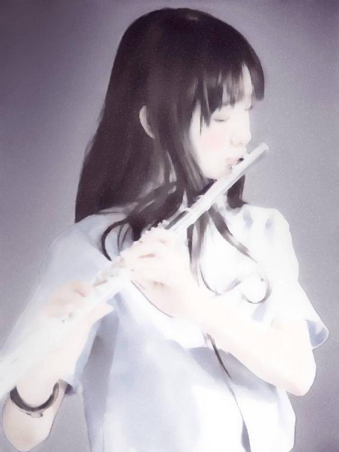

| まのまな 甘い友情・憂鬱な恋 2 | |
| 松野胡桃 | |
| UNKNOWN (2017) | |
真音は愛菜を救うべく捨て身の行動に出る。それによって愛菜は友情を深めることになる。お互いの秘密を交換して絆はより深くなる。
真音は癒されてはいけないと思いながらも、癒しを拒絶できなくなってゆく。
真音に特別な好意を持つ香澄は愛菜の存在が怖くなってくる。
講師である亜里沙は優磨のような優しい男が好きで興味津々だが、絶対に信用できない訳があった。
優馬の後輩、深雪は優磨に依存しない決心とは裏腹に支えを取り払うことに恐怖する。
ハイライト
「笑っちゃった」と、真音は言って、歩き始める。
「ごめんね。でも、私は、宝物を耳に焼き付けた。真音のプライドを傷つける気はなかったけど、できれば、笑えてよかったって、思って欲しいの。ごめん、どうせ、私のすることはあさはかだよ。優磨だって、それを望んでるんだもの、やっぱり間違ってないって思う。もっと、いっぱい、大声で、私の前だけでいいから......」
真音は振り返ってゆっくりと、愛菜を抱く。「バカ。私の横で、笑ってくれてる愛菜が居た。私はもう、それが嬉しくて、幸せだなって思った。今日は良かった」頬をつけると、「チュッ」と言って、また歩き始める。
「おー、暑い暑い」と、背後からのオッサンの声まで心地よく受け止めて歩いている。
愛菜はすぐに一人の部屋に帰ってきた。春香にはさえない表情が心配だったが、帰りたくないと言われないだけましだった。火事から４日が過ぎていた。学校に行く前にバイトの日常から入るつもりだ。愛菜は怠けた体に鞭打って『木陰』に行った。人の顔を見れば何とか気分は変わると思った。優磨が現れたときのように。
「おはようございます」と、最初に会った多摩仁美に言った。
「良かった。今日はおいとまできそう」
「済みませんでした」
「色々、仕方ないよ」
愛菜が着替えてフロアに出ると、倉田美紀がにっこりと会釈して配膳に出る。愛菜も頭を下げる。
「あら、むっつりお辞儀は北原さんらしくない」と、仁美。
「だって、迷惑掛けているのに、笑って迎えてもらって......」
「そういう職場にしたいのよ、倉田さんも私も」
「私は、お客様相手に、笑顔を取り戻す練習に来たんです。なかなか笑えないんです。こんなんで学校行くの嫌」
「がんばって、お客様には笑顔よ」
美紀が戻って来るなり「今日は多摩さんと一緒に帰っちゃお」と、言う。
「ごめんなさい」と、美紀に真顔。
「あら？」
「この調子だから、暖かく見守ってあげてね、冗談通じてないし」と、仁美。
愛菜は美紀を安心させるどころか心配を掛けに来たと分かった。しかし、美紀に作り笑顔を向ける気力は出なかった。お客に対して作り笑顔ができたし、慎重にを心掛けた分、失敗することも無かったが――。
オケイ：笑えないって？
ＭＭ：私って、何の役にも立たないで、迷惑ばかり掛けてた。
ＪＴ：みんなそうなんじゃないの？迷惑の掛け合いが人生さ。
ＭＭ：ケンジと違ってキザね。私、迷惑掛けられたことなんてあるのかしら。
ＪＴ：僕のキザに付き合うのも迷惑だろ。
ＭＭ：うーん、そうだね。
ＪＴ：って、やっぱりか。
オケイ：鬱に入ると笑えない。それだけのことよ。何かあって、反省を迫られてるのね。自分で迫ってるのよね。
ＪＴ：なるほど、日本語訳すると、自分を責めてるとも言う。
ＭＭ：そうだね。きっとそうなんだよ。だからと言って、何も解決しない。私の罪は消えない。ごめんね、私はここで私のことばっかり話してるの、分かってるのに、こういうところがきっと私の罪なのよ。
ＪＴ：真相は、他人のブルーを聞いて、自分を慰めようってハート。
オケイ：そんなとこかしらね。幸せいっぱいの人が幸せ自慢始めたら、ここから出てってって思うかもしれない。
愛菜はチャットで全くの一人でないんだと思えた。何ら利害の絡まない人との単調な交信でも、コミュニケーションがあることで、現世に生きてるという気力だけは保てた。しかし、朝になって、学校に行く段には、すっかり気力が薄れていた。
星見音高、２年１組では、昨日の朝、田辺先生よりクラスへ一言、連絡があった。愛菜の知るところではない。
「明日、北原君が登校します。心にショックを受けているようですので、そのつもりで刺激しないようにしてください」
そのせいもあって、愛菜が教室に入っても誰も話しかけてこなかった。それを不自然と感じる余裕が愛菜には無かった。
席に着くと、二つ前に真音の姿は無かった。
「お早う」と、左前の藤田洋次が愛菜に言う。周囲が緊張の面持ちで愛菜の反応に聞き耳を立てている。
「お早う」と、やはり小声だ。
「来てくれてよかったよ。後ろが寂しくてね」
「ごめんなさい」
「謝るとこじゃないよ。――僕も火事にあったことあるんだ――」
「やめろよ」と、前の吉村隆文。「ピアノ、練習遅れてるだろ、今日は君が優先的に練習室、使えよ」と、愛菜に言うと、「な」と、周囲に言い放つ。
「いいよ」と、誰か。「特選生は遅れられないでしょ」など聞こえる。
愛菜は少し妙な感じの温かい雰囲気を感じた。
後ろの戸口から真音が入って来た。愛菜の横に立つと、そのとき、愛菜にもそれが真音と分かった。同時に、身を引くような仕草をする。
「愛菜」と、真音は愛菜の左手を取ろうとするが、愛菜は拒否するように引く。
「来ないで」と、小声。
「......」
「お願い」
真音は二つ前の席に掛けた。
その調子は変わらなかった。誰が話しかけても「ごめんなさい」と、はぐらかしてしまう。愛菜はまるで真音のように寡黙な暗さをかもし出していた。
その日、練習室に入った愛菜は『皇帝』の練習をしなかった。コピーの大譜表を広げると、あまり音を出さずに弾く。優磨の曲だった。それ以外は弾く気力が出なかった。優磨の曲を弾くことが一番の心の薬だった。大譜表ではあっても、ピアノ譜ではない。弾きづらい曲はピアノで弾けるように愛菜によってアレンジされていた。
――
相澤冬美と真音は女子寮の庭に居た。庭は芝生に銀杏の木が二本あるだけだ。さらに寮舎から離れると二メートルほどの塀があって奥井家の庭、建物へと続く。
「愛菜さんがそんなになるのは、火事のせいじゃなくて、何かあるのかもしれませんね」
「ヴァイオリンもひとつとは思うけど」
「修理は無理なんですか？」
「無理みたい。わかってた。部品を交換することができないもの」
「でも、責任を感じてるって感じでもないような」
「いいえ、愛菜は、私に合わせる顔が無いのよ」
「はぁ、そうか、さすがマノンさん」
「愛菜は辛いと思う」
「そんな、そんなのって、マノンさんが辛いじゃない」
「冬美さん、華凛さんがヴァイオリンを貸してくれるから、不自由はないの」
「そうですか」
「ねぇ、オペラって声だけじゃなくて演技力が必要よね」
「あ、はい。私の課題」
「劇で、大切なことって何なのか教えて欲しい」
「ああ、マリア様、天才マノンさんに教えを乞われて幸せです」
「バカ」
「絶対の確信と、限りない反省って読んだことあるけど、演じていることに疑いを持たない。演じた後には疑って掛かるって事だと思う」
「本番をゆるぎないものにするためね」
「集中力を持って堂々と、思いっきり演技することが一番の評価に繋がる。うまくやってやろうなんて覚めた気持ちでは上手くいかないと言われてます」
「本当に役の気持ちを持つのね」
「評価を気にしすぎると自分の信念を失うだけで得ることは無いらしい」
真音は奥井家の自室に戻ると机に着いて頭を抱えた。真音は寂しさを感じることが無かった。音美が接近して押しかけ女房的に友達のように振舞ってくれたことで、ただの同じ教室の人が友達に変わって行った。音美が居なくなることを寂しいと思った。寂しさとは分からないままのほうがいいのかと思った。しかし、寂しくないということの尊さを知ることは幸せだと知った。音美はそういう当たり前のことを分かってたから、愛菜を必要だと思った。真音は音美の気遣いがとても嬉しかった。音美の愛である愛菜を大切にすると誓ったものだ。
どのくらい経ったのだろう、少し居眠ってしまった真音は、優磨の入室する音を聞いた。優磨が話しかけやすい人だということや、面倒看も分かった上で、相談しなければならないと思った。真音は優磨の部屋へ向かった。
戸をノックすると返事があった。
「あの、湯川です。ちょっと、よろしいでしょうか」
戸が開くと、優磨が顔を出す。すぐに真音を見て微笑むと「お目覚めかな」と言う。
「え？」
「寝てましたっておでこに書いてある」
そうか、腕に額をくっつけて寝てたんだ。
「君はちゃんとスリッパ履くんだな。僕は横着で、つい、そのまま。で、遊びに来たんじゃないんだろ」
「今日、愛菜に会いましたか？」
「え？愛菜が登校したのか。まぁ、入って」と、優磨はデスクの椅子を差し出して、自分はベッドに掛ける。
「すみません」と、真音も入って、戸を閉めると椅子に掛ける。
「今日は会ってない。そうか、覗いたら良かったな。僕の所に顔を出すと思ってたんだ」
「とても様子が落ち込んでる感じで。田辺先生から火事のショックとか、クラスのみんなは聞かされてたんですけど」
「そうか。――僕が田辺さんに言っておいたんだ」
「何か知ってるんですか？火事で恐い目にあったという感じではないと思います。私は明らかに避けられてます。ヴァイオリンのせいなんでしょうか」
「うーん、話したものかどうか......。しかし、君を避けるとはね」
「確かに大切なヴァイオリンでした。でも、愛菜も大切です。愛菜は自分が倒れたままで居たこと、私が助け出しているうちに、ヴァイオリンに手が回らなくなったこと、見てるはずです」
「そうだったんだ。まぁ、病院じゃ確かに責任感じてたようだ」
「何とも思ってないなんて白々しくて言えない。何て言ってあげても、私が恐いと思います。優しい言葉も何でも、愛菜は避けたいと思ってる」
「しょうがないやつだ。君を困らせるのは筋違いだ。まぁ、落ち込む事情はあるんだが」
「何か事情があれば、私は何とかしてあげたい。でも、私が被害者だから」
「可愛そうに、ダメ押しで被害者だな。――ヴァイオリンは形見だとか」
「はあ。おばあさんが使ったものです。買ったのはおばあさんのお父さん。おばあさんは園宮真音というヴァイオリン弾きです。私は名前を継いだそうです。理由とか分かりませんけど」
「ほー。それって微妙だな。年季ものではあるんだ」
「今の愛菜には梅川先生しか居ないと思う。事情を知ってるなら、私の分もがんばって愛菜の心をほぐしてほしい」
「そうだ、あいつのお母さんに見守るって言ったのに、登校したのも知らずに居た。明日は接触しよう。今、僕にもハプニングがあって自由時間が少ないんだ」
「お願いします」
「マノン、一つ訊く」
「はい」
「逆に、君は、何故、ヴァイオリンを焼かれて、落ちついてるんだ？愛菜を責めないにしても、大事なものを無くすショックが君にもあるはずだ。言ってたよ、命の次に大切な物だったはずだ」
「......私は罪......」
「罪？」
「罪深い人だから、人に許してもらわなければ、生きて行けません」
「おいおい、そんな大げさな......」
「一人でも、私によって救われる人がいたら、私は生きられる。そんな感じです。だから、愛菜を許したいし、愛菜が悩んでるなら、何とかしてあげたい」
「......聖女だな君は。星見じゃない、聖マリア女学院がふさわしい。馬鹿は死んでは駄目って言ったね。あれ、結構気に入ってるよ」
――
朝会後、松田光良と梅川優磨は田崎次長と共に井上教務長に呼ばれた。優磨は光良と共に音楽教育学会新人研修会に出席するように命じられた。
「名古屋から地下鉄だ。田崎君に聞いてくれ。うっかりしてたよ」
「明日、朝からですか？」と、優磨。
「今日の午後からだ」
「間に合わないじゃないですか」
「途中から出席の連絡は田崎君に頼むよ」井上は田崎に向いて「要領を説明してやってくれないか」と言う。
「分かりました」と、田崎はすぐ側の自分のデスクへ二人を促すと、本立てから大封筒を取り出す。
「三時から出席という連絡を入れるよ」と、田崎はため息。「忘れるかなぁ井上先生、アルコールのせいか？」と、溢す。「明日の四時までだ。事務所に交通費と宿泊費の仮申請をしてくれ。――石川主任」
「石川先生はＨＲです」と、誰か。
「岩田君」
「はい」と、岩田がやって来る。
「両先生の授業時間の変更、都合つけてくれ、石川君と相談して。それから仮申請の手続きを教えてやってくれ。それから教務のパソコンに名刺データがあるからコピーして二人の名刺を二十枚ずつ印刷。――行き先と内容を説明する」
そんなわけで優磨はバタバタ準備を始めた。高等部の休憩時間までに済ませないと明日いっぱい愛菜と話ができない。
しかし、研修内容について考え事している間に休憩時間は来ていた。名前を呼ばれると、入り口に北原という学生が来ていると言うのだ。慌てて出てみると、五メートルほど先で向こうを向いている愛菜が居た。
「別に試験中でもないから、入ってくればいいんだ」
愛菜は振り返った。が、確かに優れない顔だ。「来ました」
「お、おお、そうだな」優磨は愛菜と肩を並べると無意味に廊下をゆっくり歩く。
「昨日、登校したんだよな」
「うん」
「だったら、顔出せよ。じゃあ、火曜日の夜はバイトか？」
「うん」
「ほう、それは、よくがんばったな」
『頑張ったって、わかってくれる人......』
「調子はどう」
「バイトでは緊張できるけど、学校では駄目。誰とも口が聞けない」
「みんなに心配掛けるな」
「分かってる。何か気を遣ってもらってる感じも、少し辛いです」愛菜は『私は弱くなった』と思った。『マノンなら事情も聞かずに慰めてくれるだろう。ヴァイオリンの件がなければ。でも、顔向けできない。優磨に甘える方法も知らない。それでもいいって意地も張れなくて』
『辛いか......余計な手を回したかな』「マノンちゃん、二つ隣の部屋だ。ちょっと聞いたけど、寂しがってたぞ、愛菜のことすごく心配して」
「マノンはとっても優しい人なの。いえ、人を超えて、怖いくらい。だから私は、償うべきことが、償えない......」
「......優しさにつけ込めない」
「うん」
「だからって、心配掛けるやつがあるか」
「マノンの前では、固まるしかない。凍りつくしかない。何にもできない。あの人の微笑んだ顔を思い出すと、もう何も考えられない。私の『ごめんなさい』なんて、何の気休めにもならないし、何の値打ちもない」
「どうして」
「ごめんなさいは、許してというお願いだから。私からのお返しになってない。お母さんにだって、私のゴメンなさいは......。マノンは私を助け出してくれて、それでヴァイオリンが犠牲になったなんて」
「そう考えるな、火をつけたわけじゃあるまいし」
「一生、お母さんにも許されないと思う。どうしていいのか考えます」と、愛菜は目を閉じてじっとしている。
「また、川原につれてけって言うのか、嫌でも考え事できるもんな」
『うん、なんて言えないよ。察してよ』と、愛菜には段々と涙がたまるのが自覚できた。
「――こんなときに出張だ。まもなく出なきゃいけない。練習だけは欠かすんじゃない。愛菜が頑張ると僕も頑張れる。作曲の課題に追われてるんだ。焼けちゃったしな」
「え？」
「あ......ヤバッ、聞かなかったことには、できないな。台所の床に寝そべって書いてた僕が悪いんだ。落としたまま出勤してしまったから」
「失礼します」と、愛菜はびっくりした顔で一礼して走り去った。
「やってしまった。馬鹿だ」と、つぶやくしかなかった。「何がフォローします、だ」
愛菜は教室には戻らなかった。校舎を出て、自転車に乗って、ひたすら漕いだ。『まだあるかもしれない』愛菜はこっそりコピーしていた楽譜をいつまでも持っているのは悪いようで、昨晩、細かく折ってゴミ袋へ入れてしまった。自転車の向かった先は愛菜の家だ。
家の前のゴミ置き場を見たが、すっかりきれいに何も無い。すでに収集された後だった。がっくりとうな垂れるしかなかった。今日、収集されるまではここにあったのだ。『あのひとを返して』『ヴァイオリンを返して』『楽譜を返せ』と、愛菜は想った。はらはら涙が出てきた。
その日の授業が終わってすぐ、西村香澄が愛菜に近付いて来た。香澄は二つ前の真音を見て立ち止まったが、無言の真音と少し見合ったかと思うと、愛菜に声を掛けた。「愛菜、明後日の土曜日、三時のお茶に行ってもいい？」
香澄の美しい顔はフッと安らぎを与えてくれそうな気がした愛菜は「ええ」と、答えた。
「お家、知ってるから。『アンジェ』持って行くね」
「あ、うん」と、言ったが、笑顔にならなかった。『友達でしょ、ちゃんと歓迎できないの？香澄がいつもの私に戻るチャンスをくれようとしてるのに』
愛菜はその日、練習室を予約していなかった。『皇帝』と戦う気にはなれない。時間の無駄だ。整理がつかないと『皇帝』をやっつけることはできない。その整理こそが一刻も早く必要だった。そのためには無意味にピアノに向かっても仕方ないと思った。
「帰るの？」と、日下つぼみが声を掛ける。
「うん、こんな感じじゃベーちゃんに挑めない」と、愛菜。
「来週の火曜には水町先生に成果を認めさせないといけないよ。ピアノの前で模索するのも手だ。弾かないで頭で考えて解決するなんて甘いよ」
「模索なら、ピアノの前でなくても出来るわ」
「できないよ。ピアノから逃げないことが、集中することが、気持ちの平安につながる」
「分かったような事言わないで」
「北原さん......」
「ごめんなさい」と、愛菜は鞄を持って去る。
高等部の制服が短大の建物を歩くことは殆どない。だから、相澤冬美がおずおずと歩くだけでもかなり目立っている。
「あら」と、声を掛けたのは内田梨乃。
「あ、お世話になっております」と、冬美。「一年二組はここで合ってますでしょうか」
「相変わらずね、寮でも時々見るけど、その硬さは何とかならないの？ここは二年二組よ」と、手を引いて行く。「あなた...ソプラノ？」
「あ、いえ、でも、希望はソプラノです」
「あなたのおじいさんの恋人だった人が......ってやめとこ。いい加減、みんな気味悪がってるし」
「え？......あ、手を握ったら分かるってほんとなんですか？続き言ってください」
「わかることがある。嘘かホントか私も知らないよ。続きは寮で会ったらね」と、教室の入り口に来る。「誰かに用？」
「堀江華凛先輩」
「堀江さんて子いる？」と、梨乃が周囲に訊くと、華凛は練習室に向かう準備をしていた。
冬美と華凛は共に短大の練習室に入った。華凛は真音からヴァイオリンを時々貸して欲しいと聞いていたが、冬美からもそのお願いだった。そもそも、沢木文枝が真音と愛菜を気遣っての魂胆だが、冬美によると真音を星見のオケメンバに推薦すると言うのだ。
「私も、メンバになって協力したいと思ってたけど、マノンさんのためなら降りてもいいよ」
「それは......ただ、華凛さんにその気があるかどうか、聞きに来ただけだから、まだ降りるって決めることないと思います」
「でも、私がオケに入りたいって思ってたことになったら、マノンさんは遠慮するでしょ」
「それは、私でもわかります。文枝さんと相談します。マノンさんにどう言って勧めたらいいのか......」
「いいよ、私が進んでオケの時も貸してあげるって言う。文枝さんにはそう言って。ヴァイオリンは実際、専攻学生全員でも足りないと思うから、ヴァイオリンが有りさえすれば二人ともできる可能性が高いの。私も知ってる人にあたってみます」
「そうですね。差しあたっては、貸していただけるということで、進めさせて頂きます」
「そうして」
沢木文枝は職員室で松田光良を探したが、田辺先生から「松田先生は急遽、出張に行かれたよ」と言われた。仕方なく梅川先生をと言うと、彼も共に行ってしまったと言われ、真音のオケメンバ推薦は月曜日かと思うしかなかった。
――
土曜日、愛菜はあせりを感じ始めていた。つぼみにはああ言ったものの、ピアノから離れていたところで、それはただ、さぼっているだけ、分からないとぼやいて逃げているだけの様な気がしていた。練習はしろと優磨の言いつけだ。それすら守られなくていいのか。
現実が考えて変わるものでもないと思った。気持ちの持ち様が分からないだけなのだ。『アンジェ』の前で香澄とすれ違ったあの頃の、どうしていいか分からない気持ちから始めればいいのか。
香澄は本当に三時に現れた。五時から学校に行くかも知れないと伝えていたから、四時半までには帰ると言ってくれた。「付き合いが悪い」とは音高の子は言わない。
「あ、キッチンにテーブル。これがいいよね。マノンとこみたいで」
「椅子は本当に二つだから、定員二名だけど」
「愛菜」と、香澄は向かい合わせに掛けて言う。「ずっと寂しかった。こうして会ってる今でも寂しい。居ないんなら諦めもつくけど」
「ごめん、いろいろと」
「そもそも、最初から、ちょっとシークレットだったけどね。それはいいんだけど、友達になれたと思ってるのに......」
「ごめん」
「私が言いたい事、言ってるだけだからね。愛菜の事、知らないもの。ケーキおごる代わりに言わせて。――さて、カップは？」
「私やる」と、愛菜はカップを出してインスタントコーヒーを入れにかかる。
「愛菜が好きなのはマノンと同じ、プリン系だよね」
愛菜の手が止まる。「そうだよ」
「大丈夫だよね」
「何が？」
「皆と仲良くなれるよね。戻られるよね、前みたいに」
「わからない」
香澄はため息。「わからないか......みんなマノンの事心配なのよ。私も。喧嘩したわけでもないのに。――愛菜のこと、私が知っちゃだめ？」
「それは、言えない。そのことで勝手に良く言われたり悪く言われたりすることが嫌だもの。自分の事、言うのって、消化してもらえる保障が無いもの」と、愛菜はカップを配る。皿を出すと、香澄の買ってきたケーキを乗せる。
「文枝さんの部屋で音美と皆と食べたときがずっと前みたい」と、香澄。
「いつもありがとう」
「愛菜の事言ってるのよ。また、あんなふうに集まろうよ」
「いろいろ解決しないと」
「私には見せてくれないのね、本当の愛菜。まぁ、マノンじゃ無いからね私は。――私のバカ」
「やめてよ」
「私は、愛菜にもマノンにも秘密を聞かされてない。私だけじゃないのが救いだけど」
「マノンに秘密があるの？」
「さぁ......。――おいしい？」
「うん」
香澄は真音の食べる姿と重ねて見ていた。今の愛菜は真音と同じように哀しみをたたえた澄んだ目で香澄を見ていた。
「香澄姉さんが居てくれてよかった。クラスにもすぐに打ち解けられて。クラス委員のお陰です」
「愛菜」
「また、みんなでケーキ食べたいよ。ホントに、香澄さんが来てくれて、感覚を取り戻せそう」
香澄は席を離れて愛菜の背後に回ると、腕を首に回して来た。
「早く取り戻して。マノンの信者はマノンを苦しめた愛菜を憎むかも」
「あ、だってそうよね、絆が違う。私、皆に、幻滅されるのね。マノンの友達の資格...」
「みんな、マノンに救われたんだもん。あなたなんか、ほんの何日か前に飛び込んできた迷い猫なんだから」
「香澄さん、言い方、怖いんだけど」
「マノンを苦しめる愛菜、絞めときましょうか」
「し、絞めてくださるの？」
香澄は後ろから愛菜の頬に頬をくっつけてほお擦りする。
愛菜は目を閉じたくなるくらいの心地よさがあった。でも、これは絞めるというのとは違うと愛菜は思った。
香澄は軽く頬にキスをする。
「あ」
「以上」
「あれ？絶対違う、警戒したのに」
「愛菜」
「ん？」
「マノンがね、浅田マンションに居なくて......学校では悩ましげで......思い込みかもしれないけど、愛菜のことばかり考えてるように見えて、愛菜に冷たくされて......そういうの、マノンに救われた人たちが、どんな気持ちになるのか感じてみて」
「香澄さん」と、愛菜は落胆のようなため息。「怒ってるのね。そうか......一言、言いに来られたんだ、私」
「愛菜......私に、マノンを返して」と、香澄は小声。
「ええ？」
「ごめんなさい」と、香澄は愛菜をきつく抱くと、ハンカチで涙を拭って言う。「そんなこと言うつもりじゃなかった。仕方ないこと、何言ってんだろ」と、ハンカチを瞼に当てたまま俯く。
「返して......か」と、愛菜。この言葉はもう嫌だと思った。「香澄さんも、マノンに癒されてたんだ」
「マノン、見てられない。どうして愛菜に分からないの？――そんなこと言いに来たんじゃない。私はただ、マノンの代わりに、愛菜を見ていたいと思ってただけ。自分勝手をしたかっただけ。愛菜の気持ちを少しでも楽にできたらと思っただけなのに」
「いいよ、自分を責めないでよ。私を責めていいよ」
「愛菜を責めたくないよ。音美が居た頃に戻れなくなる」
「香澄さんが音美とすれ違いに、マノンのとこに来てたのは......」
「私のこと、言ってしまうね。愛菜にはちゃんと消化して欲しいの。私こそマノンに救われてるの。私はね......女の子しか好きになれないの」
「え？......そうなんだ」
「消化してもらえる保障は無いけど、言ってしまった」
「マノンは？香澄のこと......」
「お付き合いしてくれてるだけ」
「音美は知ってて二人の時間を作ってあげてたんだね。――返す事は出来ないのかな、バイトしている間、ここをマノンと香澄さんに貸してあげる」
「マノンの門限は限られてるの。寮生と同じ」
「ごめん、休みの日の昼でも、私がここを空ければ...」
「ここは愛菜の部屋よ。マノンの気持ちを考えて」
「ごめん」
「二人だけの時、聞いたんだけど、マノンはね、愛菜が一番大切なんだって。こんなこと聞かせてくれるんだから、私は二番だと自負させていただくけど。マノンにしたら失言よ。信者が少し寂しい思いをするんだもの」
「私、何もしてないよ。もらってばかり。一番大切なんて変だよ」
「愛菜の『愛の夢』が心に染み込んだんですって。私のピアノも時には誉めて欲しい」
「あのときだけ、綺麗に弾けた。あれはマノンが居たから。香澄さんがヴァイオリンの伴奏するって自慢したい気持ちがわかった」
「少し長くマノンと付き合った者として、思うに、愛菜の秘密めいたところがマノンの保護本能をくすぐるんじゃないかな」
「秘密って」
「最初から、田辺先生は前の学校のことを質問できない雰囲気作ってたし」
「......そうね。秘密だね」
「マノンのこと、誰も知らないと思うけど、あの子も秘密を抱える哀しさみたいなのがあって、愛菜のことが気になってるのかも」
愛菜は『愛のあいさつ』の真音を思い出した。手で顔を覆って肘を立てるしかなかった。思い出すまいとしても、脳裏に現れるから仕方が無い。ヴァイオリンとセットの真音の微笑み。
香澄は両手で愛菜の首を持った。「一番なんて冗談にも自慢しちゃ駄目よ。私は聞いてしまったけど。一番聞きたくなかった私が」
「香澄さん、怖いよ、首」
「絞めないわよ。ねぇ、愛菜、私の秘密、聞いた後でも、平気？こうして後ろに居て大丈夫？」
「男性の心を持ってるの？」
「いい質問ね。たぶん、幼稚なだけだと思う。まだ、可愛がりたい人形が欲しいくらいの。ただ、人形より、本物の女の子の方がいいの。だって、人形は私を可愛がってくれないもの。......変な子でしょ」
「前向きに考えたら、色々、可能性があって楽しめばいいよ。って、無責任かなぁ」
「そんなことないよ。よかった。後悔しないで済むのね。――音美に話したら、手を取ったり、肩を触ったりも体が嫌がって避けた。何とも思ってないのに体が逃げるって言って、いつも陰でごめんなさいって言ってくれたけど。愛菜にはそうなって欲しくないの」
愛菜は何か引っかかった。「あ、そんな事言ってたよね、音美。人に近寄ってほしくなかったとか、誰かが触っただけでびっくりして叫んだ」
「ええ、警戒心の話でしょ。でも、だから気にしないって出来なかった。私は警戒されてたことになる」
「だめよ、体質じゃない、音美の。私はね、初めての登校日、香澄姉さんて呼んだとおり、とても大人びた、すごい美人に見えた。お陰で私はクラスに馴染めた」
「美人は自負してないけど、私は子供なのにどんどん見た目が大人びてゆくのが嫌で仕方なかった。もう少し子供でいさせてって強く思うところがあった。アンバランスが私に男性を意識したくないとか、人形で遊んでいたいとか思わせたのかなって、少しは冷静に考えられる」
愛菜は首を縦に振る。「香澄さんみたいな人がいて、星見はすごいなぁって思った。私はファンのままで居られる。たぶん、皆が男女問わず、憧れてるよ。いいじゃない、モテない悩みじゃないんだもの」
「そうね、愛菜自身が、そんなふうに、自分のこと、前向きにね」
沢木文枝は土曜日だからこそ、学校ではなく、『スナック小枝』をたずねた。月曜日でも同じことだ。でも、何もしないで居る休日はつまらなかった。
光良が扉を開けると、瞳輝く文枝がいた。
「木曜も金曜もいらっしゃらなかったので、あの、お話がありまして」
「月曜じゃ駄目だったの？」と、光良は休日でもジャケット。
「あの、オケメンバ募集の件で」
光良は悩んだ、こういうときは快く自室へ通したものか、準備中の店の中で話したものか......立ち話というわけには行かないとは思った。なにしろ、相手は近所とは言えたずねて来たのだ。
「短時間でよければ、部屋に通してもいいぞ」たぶん、優磨ならこんな感じかと思った。
「はい。お邪魔します」
二階の光良の部屋、慶子さんも愛菜も居ないと、けっこう免疫の無さを思い知ってドキドキしていることが文枝には自覚できた。
「オケはピアノ一人だよ。たぶん、北原君だ」
「それはいいんです。愛菜の特権だと諦めます」
「やっぱりそうなのか」
「いま先生が北原君だと」
「あ、たぶんだよ。なら、君は出る幕なしだけど」
「湯川真音さんを推薦します」
「ああ、火事の。ヴァイオリン借りてオケまでするつもり？」
「短大の堀江さんから貸してもらいます」
「そりゃまずいな。短大生は募集じゃなくて、弦楽器専攻は強制加入って話になりつつある。楽器一つで二人ってのは無理だよ」
「学校にヴァイオリンの一つや二つないの？」
「音楽部用に二丁あったと思う。でも、安物で、弦も交換しなきゃ」
「それを堀江さんに貸してあげて」
「ややこしいなぁ、湯川君がそれじゃ駄目なの？」
「コンサートマスターに安物は駄目でしょ」
「コンマス？......大胆にもコンマス推薦とはね。それは無理だ。それと、本人の希望とペアで受理、オーディションもあるだろう」
「本人は希望するよ」
「あ、新聞奨学生だろ、夕刊とか配ってないだろうな」
「それは大丈夫。マノンと愛菜が同じ曲を練習すると、きっと音楽第一の二人だから、仲直りもする。光良先生！ご協力感謝します」
「なんだかさっぱりわかんないんだけど。僕はどうせ梅川先生に伝えるだけだ」
「月曜一番に伝えといてね。いつでも呼び出しに応じられるようにしておく。なんなら、女子寮の庭でオーディション受けてもいい。マノンも梅川先生も私も同じ所に居るんだし。で、もう一つお願い」
「お願いされても発言力無いんだけど」
「愛菜の採用を早く決めてって言っといて」
「月曜日に梅川先生に直接言うのが早いだろうに」
「短大の先生でお話したこと無いですから、面識の十分にある光良先生にお願いしてるんです」
「担任でもないんだけど。今日、あいつん所行くから、時間的には早く伝わる。その光良ってのなんだか...」
「先生が私を弟子にしたらいいんでしょ。もう、弟子です。歌を教わってもいいです」
「そんな学校規則も風習もないと思うが」
「パソコンも習います。今日はその目的もあります。私のデビューページできた？」
「デビューって、ネットアイドル、本気か」
「アップロードの仕方とか、教えてくれるって言った」
「ああ、作ってるから、まってろよ。ひとり立ちするんだよ。女の子のホームページなんか弄るのは御免だし」
「うん、西村香澄さんをスターにするつもり。だから、ちゃんと教えといてね」
「は？君じゃないのか」
「もちろん私も！愛菜も」
――
松田光良は文枝の相手もそこそこに梅川優磨をたずねた。奥井邸のインタホンは奥井家用、呼び鈴のボタンは居候用の三つある。『湯川・――・梅川』と記されている。梅川のボタンを押すと、優磨から携帯電話が掛かる。『上がって来いよ』と言うが、玄関戸は奥井家のものだから勝手には入れない。
戸が開くと、優磨が手招き。階段を登って一番奥の部屋へ入ると、そこに真音が立っていた。
「うわっ」と、思わずのけぞった光良。
「そりゃないだろ、見るなり」と、優磨。
「こんにちは松田先生」
「びっくりした。女子学生が部屋に居るのは絶対無いと思ったから」
「人聞き悪いな。説教受けてたとこだ。研修前の朝、愛菜につい、楽譜が焼けた事言ってしまった。あの子は走り去ってしまった」
「なんでわざわざ言うんですか」
「ワザワザじゃない！ツイ......それで、何て事してくれたんだと真音ちゃんにきつい言葉で攻められてたとこだ」
「バカの５０連発？」
「そうだ」と、優磨は真音に向いて続ける。「――わかった。月曜日の君に任せるよ。許されてはいけないと、思い込んでる。僕が思ったとおり、優しさにつけ込めないんだよ。ってことで、むさ苦しいのが来たから、自室に避難してくれ」
「はい」と、真音は一礼して出ようとする。
「ちょっと、『はい』って、認められたくないんだけど」と、光良。
「素直じゃないな」と、優磨。「逃げたがってるだろ」
「たがってないでしょう！」と、光良。「じゃなくて、君は、オケメンバ加入を希望してるの？」
「希望しようかとは思ってますけど」と、真音。「二組の相澤さんがここに来て、あ、私を呼び出して、そのことを言われました。沢木さんが推薦するからとか」
光良は「それを言いに、沢木、家に来たんだ」と言う。
「人の事言えたもんだ、それこそ、女子学生がワザワザじゃないか。君も隅に置けないな。沢木は寮生だろ、ここに来るのは一瞬なのに、そっちに行ったか」
「パソコンのことで質問などあったのさ。――で、どうする？ヴァイオリンは短大生が強制になったら......」
「私は堀江華凛さんがヴァイオリンを貸してくれることも、オケに推薦されることも、甘えようと思います」
「わかった。書類だけ、月曜日に書いてもらう。オーディションは無し」と、優磨。「ヴァイオリンの件は置いとこう。メンバ確保が優先だ。とにかく弦楽器メンバが足りない」
光良は優磨がパソコンを使って音符の入力ができるように速攻で教えるつもりで来たのだった。優磨はパソコンを持っていないが、光良持参のもので操作説明を受けてメモをとった。
「家で作業できないのは辛いな」と、優磨。
「学校で支給されたノート型、持って帰れますよ」
「持ち出し禁止だ」
「学長課題のためにパソコンを学長の家に持ち込むんだから。許可される。個人情報接続許可取ってないでしょ、使ってるパソコン」
「ああ、つなげないパソコンだ。そうか、それなら持ち帰られるのか」
「確かそういう説明だったと思います。疎いな先輩」
「同期だ！」
優磨は愛菜が練習に現れるかもしれないと思うと、学校に行かないでは居られなかった。出張に行ってしまう前に走り去られたままというのは後味が悪すぎる。光良を帰すと、高等部の練習室に駆けつけた。が、そのとき既に五時をまわっていた。
結局、来なかったな、と優磨は思った。最後に音を出し終えたのは藤田洋次だった。彼はホルンの音を出し終えると、楽器を仕舞い込んで、さっさと練習室から出てくる。と、そこに優磨が立っていた。
「まだまだホルンの音なんだか何か分からないな」
「だから練習してるんです。ここに来たらもっとホルン仲間ができると思ったら、高等部は全員でも三人。短大に四人。孤独です。先生はホルンは吹けますか」
「君より下手にはね。講師は誰？」
「ウツ音の杉山先生」
「じゃあ、短大の四人と同じか。少人数のために来ていただいてるなんてお金掛かってるな」
「授業料高いんですけど」
「ここの卒業生でも呼んだら安いかな」
「先生、知らないんだ。杉山先生はここの卒業生で、関東交響楽団で活躍しておられます。宇都宮音楽大学の専任講師」
「ってことはウツ音の卒業生なわけだな。まるで姉妹校のように関係が深いな。僕の言ってるのはアマオケでうまいと言われてる人でいいかなと。それじゃ、星見の立場がないか。それはそうと、君の隣の子は元気か」
「今は右後ろでしょ。ずっと塞ぎこんでますよ。かわいそうだけど、とっつきにくくて」
「そうか。――楽器預けるんなら、間もなく鍵掛けられるぞ」
「分かってます。失礼します」と、洋次は去ってゆく。
優磨は練習が遅れているに違いない愛菜が来なかったことに落胆して端の部屋にしけ込んだ。
愛菜は自転車を引いて香澄を駅までおくると、残り時間わずかの星見へやって来た。土曜日も開いてるのは知っていたが、実際、音高の練習室は六時になると誰も居なくなっていた。試験前や演奏会前などは六時までほとんどがふさがる時もあるらしい。しかし、愛菜はここ何日かの分を取り戻して少しでも『皇帝』を認めてもらう必要がある。自分のショックとは関係なしに、残された時間、音高生の時間の分を精一杯ピアノに注ぐべきなのだ。それが、凍った心を解かす術でもあると思った。
あと１５五分で閉まると言うのに愛菜は練習室に来てしまった。と、ピアノの音が一つだけ鳴り始めた。一番奥の練習室だ。ドボルザークの第８シンフォニー、フィナーレ。あれをピアノで......誰なの。と、愛菜は走って行くと、偲び寄る。硝子の向こうに優磨が居た。彼は譜面なしにそれを弾いていた。彼の姿を見て、彼の音を聴いて胸が熱くなった愛菜は壁に背中を付けて手を後で組んで目を閉じた。
『すごいわ、なんていい加減な曲、二十％は作曲じゃない。でも、原曲を損ねてはいない。優磨の言うピアノを弾けないって、こういうことなんだ。きっと、心が遊びすぎていて音符のとおりに弾くなんて耐えられないのね。そして、もう一つわかった。優磨が私の音が好きだと言える理由。素敵なシンフォニーね、優磨。こんな余りにも自由な伸び伸びと解放された音を鳴らす優磨だから、私の音が好きなんだね。私、意味不明なベートーベンの迷路にはまってた気がする。解放されてなかった。作曲家が何をしようとしたかじゃなかった。私が感じて、私が『皇帝』はこんな曲よと、叫ばなきゃいけなかった』
考えてみれば、女友達はできても、愛菜が一人だけの魔界に見つけた友達は優磨と真音だった。しかし今は、優磨だけが星見の拠りどころとなっていた。
『師匠、１５分ぽっちの練習をしに来た甲斐がありました』
音が止んだ。愛菜はハッとして、その場から去ってゆく。今は言葉が出ない。凍ったままだと思った。
優磨は練習室から出ると、愛菜らしき後ろ姿を見る。
「愛菜」
彼女は立ち止まり、振り返らず、すぐに歩き始める。
優磨は愛菜であることを確信した。「水町愛菜」
愛菜は立ち止まって動かない。優磨はすぐ後まで歩み寄る。愛菜はじっと動かない。
「君を待ってたんだ。練習する気になったんだな。――ああ、聴かれてしまったな。酷いもんだろ」
愛菜は振り返ると、「素敵でした」と言って俯く。
「え？」
「あんなふうに弾きます。紗代先生のレッスンで。優磨のこと師匠と認めました」
「バカ言え。ピアノの師匠は君の伯母さんだ」
「優磨先生です！......それに、私は今も北原愛菜です」
優磨は返す言葉がすぐには見つからなかった。『体罰を受けたわけでも、両親の愛情が薄かったわけでもないこの子は、確実に心を病んでいた。音楽に蝕まれていた。孤独な子供だった。ピアノを弾かせればすごい...それだけが遠巻きの尊敬の目を集めていたが、友達は出来なかった。生きる気力も失った。手を壊そうと思った。ピアノから解放されると父親が悲しむことになる。父は愛菜をピアニストにして破門した水町一族を見返すことだけ考えていた。
母は父が思うとおりにさせるしかなかった。愛菜は死んだ。本当は死んでいた。父親が代わりに死んだ。愛菜は生かされた。ここに来た。ここで唯一、芽生えた友情というものを自分の手で破壊して...目の前に居る』愛菜を見る優磨の目に涙が浮かんでいた。
愛菜はハッと優磨に背を向けた。『何故？どうしてこの人は泣けるの？――また、うしろから抱いてくれる？辛かったねって言ってよ』愛菜は自分にも涙が出てくるのを感じた。
「愛菜、今はピアノだけでいい。ピアノは君の敵じゃない。自分を責めるな。お父さんに助けてもらったんだ。助けた人の分も楽しめ」
「うん」と、涙を拭う。「ありがとう、優磨」
「楽譜のことは悪かったな、うっかりだった」
「そうだ、日曜の１時、予約してください。聴いて欲しいの。だめですか？」
「明日ね。分かった。音短の練習室を覗いてくれ」
優磨は愛菜が弾こうという気になっただけでも、前向きな発言が聞けただけでもホッとした。
――
音短でこの時期、日曜日まで練習に来る学生は少ない。六月から秋、冬に向かうと少しずつ増えるが、春は特に五月の中弛みが起こる様だ。
優磨が待っていると、時間通りに愛菜は現れた。『皇帝』の譜面も持たずに、手ぶらで入ってきた。相変わらず、笑顔を向けてくれないが、優磨は笑顔をふりまいた。
「ベートーベンを聴いてくれってのじゃないんだな」
「ごめんなさい。聴いて欲しいのはこの曲」と、愛菜はピアノに向かうと、落ち着くように呼吸をしてから弾き始めた。
「それは」
「優磨先生の曲」
「どうして」
「ところどころ、わたし流になってます」
「楽譜は？」
愛菜は手を止めて「捨てました」と言う。「私、机の上にあった楽譜をこっそりコピーしてしまったんです。でも、それを持ってちゃいけないと思って、憶えたと思ったら、木曜日の朝、捨ててしまった。ごめんなさい。あのあと、急いで帰ったんだけど、もう、無かったの」
「そうだったの。悪い子だ」と、優磨は頭を小突く。「この世で二人しか知らない曲だな」
「あ、そうよね」『なんて素敵なことを言ってくれる......ここは魔界ね』
「今日は何時まで付き合ってくれる？」
「六時」
「よく言った。待ってろよ」と、優磨は出てゆくと、まもなくノート型パソコンを持って戻って来た。電源を入れると、光良から借りたソフトを起動する。画面に楽譜が現れる。それは大譜表ではなく、簡易的なスコアだった。
「これに書くの？」
「うん、本スコアにしてパート譜を出すのも簡単だしな。ある程度は入れてるだろ。さ、最初から弾いて」
「はい」と、愛菜は弾き始める。
「ストップ」と、優磨は音符を書いてゆく。
「最初から」
「はい」
「ストップ。そこはそんな風になるのか......変更、こうする」と、優磨は書き直し。「分かるか？こうだ」
「それ、いいです」と、愛菜が弾きなおす。
「四小節目から」
「はい」
「そうか、そんな風な曲を書いた。何か上に抜けてるぞ」
「うん、オクターブ上に旋律があった。旋律だらけで弾けないから」
「わかってる。こんな感じのがあった」と、スコアに書き込む。「これだけ弾いて」愛菜が弾くと、「ここはこれでいい」と言う。
「すごい、ここを弾いただけで、先が楽しみです」
「いい弟子を持って幸せ者だ。また四小節目から」
「はい」
「九小節目は僕のミスだ。低音を一小節早めに書いてしまった」
「じゃあ、こうですか」と、弾きなおす愛菜。
「そうそう。えーっと、百二十小節くらい書いてたよな。このペースで......今日中には全部の修復は無理か」
「月曜日も付き合います」
「だめだ。『皇帝』に戻るんだ」
「優磨の役に立ちたい」
「何言ってるかな、僕が学生の役に立つべきなんだよ、ここは学校だから。この日曜、済んだとこまででいい」
「ピアノ入ってますよね。オケにピアノが脇役で入ってる」
「その通り」
「私に弾かせてくれませんか」
「是非、君に弾いて欲しいと言いたいとこだが、水町先生の方、足を引っ張ってもなぁ」
「私、ちゃんとやります」
「うん」と微笑む。「それを見込んで、愛菜に弾いて欲しい。この曲にピアノがあるんじゃないんだ。愛菜が居るから、ピアノを使ったんだ」
「それ...私のために？」
「他言無用」
愛菜は久々に雨の日の雲間のように嬉しそうな顔を数秒、見せてくれた。
「十小節目から」
「はい。あの、スコア見ながらじゃないと、そのうち場所が分からなくなります」
愛菜は月曜の教室でも変わりなかった。周囲とは距離を置いた姿勢だった。
『優磨と二人だけしか知らない曲を聴いたんだ。優磨の曲がちゃんと生き返ったんだ。優磨の手伝いができたんだ。優磨は私のためにピアノをあの曲に入れてくれた。それだけで私はいい。皇帝とも戦える。寂しくなんかない。私には優磨が必要。勝志みたいに何とかして上げられるというものじゃなくて、私が魔界に行きたいときは一緒に入れる人、救い出してほしいときは引っ張り出してくれる人......もう、私、優磨さえ居ればいい』と、愛菜は昼休みの屋上に居た。そこから川原が見えていた。
こうして見ると、すごく近いものだと思った。『川原が見えるんなら行かなくても、ここに来ればいい。――ここは星見なんだ。前の学校でも前の私でもないのに、やっぱり一人だけのブランコが要るんじゃないの。これが、私なんだ。――ごめんなさい、お母さん、お父さん、私だけ抜け駆けして夢を見そうになってた。本当のことがわかって、良かった。謝ることすらできないとこだった。ごめんなさい、お母さん』
愛菜は昼休みが終わる頃、屋上の扉を開いて中に入った。扉の内側には『屋上立入禁止』と貼ってある。
愛菜がそういう状態だから、真音は決心せざるおえなかった。只一人の証人として冬美に見ていて欲しかった。最悪の時には証人が癒してくれるかもしれないと思った。冬美を巻き込んではいけないと思いつつも、理性はそこまでだった。
相澤冬美は愛菜が教室を出てしばらくすると、声を掛けてきた。
「愛菜さん」
「冬美ちゃん...」
冬美は愛菜に近付くと、愛菜の手をとり、引いて行く。
「どこに？」
「こっち」と、すぐに庭に出る。花壇の間、数メートル先に真音が立っていた。
「あ」と、愛菜は立ち止まった。優しい真音の顔なんか見たくないと思った。見てしまうと、適わない許しを請うことになる。
だが、真音の目は優しくなかった。しかも、愛菜を見据えると、睨みに変わってゆく。そうだ、華凛さんをかばって石を投げる子供たちを睨んだときの目はこんなだったと愛菜は想った。天使の真音が鬼に見えるということを、まさか自分で体験することになるとは。
「愛菜」と、真音は俯いてしまう。でも、愛菜に言葉は用意されてない。
「ヴァイオリン、返して！」と、真音は俯いたまま。
愛菜は言葉無く口を開ける。
「愛菜、私のヴァイオリンを、返してちょうだい！」
愛菜は何か声を発したかと思うと、走り去って行く。
冬美も空いた口をふさぐことなく、真音を見ていた。
真音は顔を上げると、目を閉じてそのままそこにへたり込んだ。
「愛菜さん呼んでくる」と、冬美。
「だめ！」
「マノンさん、どうして......」
「ごめんね冬美さん。どうだった？自信あったけど」
冬美は真音の肩につかまってシクシク泣いた。
「私、今日は帰る。ありがとうね冬美さん。歌の練習行かなきゃね」
真音は冬美の両肩を叩くと歩いて行く。
冬美はどうしようもなくただ、見送っていた。が、間もなく、走った。走った先は職員室だった。
「梅川先生、お呼びですよ」と、苗葉先生が窓際に向かって言う。
「はい」と、優磨が出てゆくと、冬美が居た。
「フユミちゃん、君か、呼んだの」
「あの、相澤冬美です」
「し、知ってるけど......」
今にも泣きそうな顔は見たことあるが、今度は本当に危ない。
「わ、分かった。がんばって図書室まで歩こう。さ、一、二、一、二」
図書室は端のテーブルに高等部の一年らしき六名が屯していた。
反対の端に冬美と優磨は掛けていた。
「マノンちゃんが？演技」
「私、もう、どうしたらいいか」と、冬美は涙を拭いている。
「どうしたらって、どうもしなくていい」
「胸に仕舞っておけって言うんですか？」
「もう仕舞ってないじゃないか」
「演技の心得なんて変なこと訊かれたと思ったら、まさかあれのことだったなんて」
「愛菜はどこに行った？」
「分からない。でも、追おうとしたら、駄目って言われました」
「マノン......なんて子だ」優磨は真音が愛菜に向かって言うときの辛さを思うと、冬美の涙に共感した。「なぜあの子はそんなことができるんだ。月曜日に何とかしてみるというのは......そういう事か」
「梅川先生？」と、冬美は泣きの優磨を見る。
「愛菜は皇帝の練習どころじゃないな。......で、マノンは？」
「帰りました。辛そうでした。これでよかったんでしょうか」
「僕の思考を超越している。バカにはわからん。そうか、帰ったか。君も荷が重かったな......」優磨は溜息をつくと、聖女達に平和を...安息を...と思った。「冬美ちゃん」
「は、はい」
「アニュスデイを歌ってくれ......」と、溜息。
すぐにモーツァルトのアニュスデイを冬美は歌い始めた。
「え？あ、冗談！図書室だし」と言うと、冬美はハッと止める。
「すみません」
「君の悩む顔見て癒されようと思った僕が悪い。心配すんなよ、ゆっくりしてな。行ってみるよ」
優磨はオケメンバのスカウトなるでっちあげを苦し紛れに持ち出して学校を出た。冬美がどうしたらいいかという気持ちになるのももっともだ。優磨も居ても立ってもいられないというのが本音だった。
奥井家の真音の部屋を通り越して自室まで来ると、鞄を置いて、息を整えた。さて、女の子の部屋は訪問しにくいものがある。優磨は間の部屋の戸を開けてみた。鍵は掛かっていない。ガランとした部屋にはベッドと机があり、きっと、三部屋ともこのレイアウトは共通なのだろう。カーテンだけは吊ってある。それを開けると東の空は夜を迎えていた。
優磨は真音の部屋をノックしてみた。
「はい」と、真音の声だ。やはり帰っている。
「師匠だよ」
「お入りください」
「開けますよ」と、開けると、真音は制服のまま立っている。
「ここには入れない。隣来いよ」と、優磨はさっさと隣の部屋へ行く。真音も続いた。
優磨は窓際まで行くと、空を見る。「塩見先生って知ってるか？」
「いえ」
「三月までここに居た人らしいが。――冬美ちゃんがね、小さい胸に仕舞っとけなくて泣きながら話してくれたよ。実物を見たかったな」と、外を見たまま言う。
「実物って......は、はい、こんな感じです」と、真音は深く呼吸をして――「愛菜、私のヴァイオリンを、返してちょうだい！」と言う。
優磨は振り返ると、真音は睨んでいた。「う」と、うめくほどに迫真だが、すぐに真音は哀しくうなだれる。
「うまくできてますか」
優磨はジワっとこみ上げるものを感じた。「愛菜が逃げ出すわけだ」
「愛菜が怖いです。帰って来なかったら......」
「もし良かったら、そこまでできる訳を、言ってくれないか。冬美ちゃんみたいに、胸に仕舞っとけないものが、いっぱいあるんじゃないのか」
「......愛菜を助けるのに手間が掛かったんじゃないんです。愛菜の足に絡まったリボン、私が散らかしたままにしていたリボンが慌てていてはずしてやれなかった」
「慌てるだろう、誰でも。入って行けただけましだ」
「愛菜が持ってきた包丁があった。煙いのを我慢してそれを取っていれば、リボンなんて簡単に切れたんです。でも、私は包丁が触れないんです。怖いから......火事場でそんなだから、救い様がありません」
「怖い？」
「もたもたしてた私が、ヴァイオリンを救えなかったんです」
「まぁ、愛菜は納得しないだろうな、火事を起こしてしまったからな。それにはそれなりの理由もある。あの子も、怖いことを思い出したんだ」
「え？」
「その怖いことが、愛菜を元通りにさせないんだ」
「愛菜にも、何かあるんですね」
「そうだ」
「何かあるような気がしてました。――私がなぜ、刃物を持てないか......左指をかばってるのではないんです。私は」と、真音は一時、ためらったまま固まっていた。「私は」真音は俯いて震えている。
「真音」優磨は『もういいよ』と、言おうかとためらっていた。
「私はハサミで、母を刺したんです」と、真音の震えは止まらなかった。
「刺した......お母さんを」
「だからもう、刃物には触れない」
「で......その、お母さんは？」
「今でも立って歩くことができません。私はまだ許されてません」と、真音は両手で顔を覆う。「そんな罪人だから......試練があって当たり前なんです」
「マノン」と、優磨は真音を正面から抱いていた。そうするしかなかった。何もしてやれないということは哀しいことだと痛感した。
「優磨」と、真音は指を縮めて涙目で正面を見た。優磨の肩の向こうに東の空が見えた。「だめです」と、優磨から離れる。「私は癒されては駄目です」
「そんなことはない、そういう話は誰かが知っておくべきなんだ。その誰かはきっと君の味方になって癒してくれる」と、優磨は肩に手をまわした。優磨が泣いているのを見ると、真音はハッとして声にならない声で泣きはじめた。
しばらくして、二人は窓を開けて庭を見下ろしていた。
「私は泣いては駄目。同情なんて許されない。私は耐える罰をもらった」
「ちがうよ。今の愛菜を思えば分かるだろ。真剣に百年、反省しつづけることより、謝罪するほうがいいんだ」
「愛菜の気持ちも、分かります。優磨先生に話してしまうなんて......きっと愛菜も認める師匠だから信頼しました。愛菜のことも私に話さない、だから余計に安心してしまいました」『それに、泣いて下さったから...』
「また、聞くよ、落ち着いたらね。戻ろうか」
真音は部屋に戻ると、神のお告げを待つ気持ちで机に着いていた。真音は寮の夕食を摂る事になっていたが、それまでの二時間の間、何かしようという気にもならないのは分かっている。着替えもせずに、ただ、机に着いて、久々に過去のことを思うことができた。決して思い出したくも無いことを思い出せる心の僅かなゆとり。こういうことで満たされればもう忘れてしまった幸せと言うものを感じるのだろうか。優磨の言うとおりだと真音は思った。知っている人が居るということは気持ちが全然違うということ。
『また、お母様に、会いに行ってみよう』
六時になった。じっとしている事には慣れている。だが、書物もノートも譜面もない机をじっと見ているのはまだまだ緊張している証拠だ。この緊張がいつまでも続く不安を拭うには、優磨に少しでも話せてよかったと思うことだった。
愛菜は奥井家の玄関まで来た。呼び鈴のボタンは居候用の三つがある。『湯川・――・梅川』と記されている。愛菜は『湯川』を見つめて大きく息を吸ってゆっくり吐く。『マノンが怒ってくれるなら、責めてくれるなら、いっぱい責めてほしい。それで気が済むことはなくても』と、愛菜はボタンを押した。
優磨には真音の部屋の呼び鈴が聞こえた。続いて真音が部屋を出る気配がある。『あいつ...』と、つぶやくと、優磨も廊下に出る。
愛菜は戸の向こうに人影を見ると、三歩下がって、気持ちを整えようとした。
戸を開けたのは真音だった。真音は愛菜を見て口を空けたまま立っている。
愛菜は真音の言葉を待った。しかし、空いた口からは何も出てこない。待ちきれなくて『ごめんなさい』と言ったつもりだが、声にならなかった。
真音は表に出てきて「愛菜」と言う。そのまま歩いて愛菜のところまで来る。
愛菜は真音が今にも泣きそうなのが分かった。
真音は「よかった......」と言った。
愛菜は真音に抱きしめられた。何か言わなければならない。謝罪しなければと、愛菜は言葉を探そうとした。
真音は「ごめんなさいって、言って」と、耳元に言う。
愛菜は「ごめんなさい」と言うと涙があふれてきた。
「もう一度」
「ごめんなさい、マノン」
「愛菜が......来てくれた......よかったぁ」真音は愛菜の涙を拭いた。
愛菜は見た。涙を流しながら微笑む真音は美しかった。またこれを脳裏に刻まれるのかと思った。そのときやっと、あれが真音の芝居だったと思えた。
愛菜は真音に比べれば自分はまだまだ手のかかる駄々っ子だと思えた。「真音......バカって、言って」
真音は「愛菜のバカ」と言う。
愛菜は自分の愚かさが馬鹿馬鹿しくなって、膝をついてしまった。そのまま真音に頭を付けて泣くしかなかった。
優磨は戸口に居た。『よかったなマノン』
優磨は深雪の言葉を思い出していた。
――あの頃に帰られるって、素敵な仕事ね。
『そう、素敵だ......』
愛菜は毎日の練習後や、土日を寂しいと思った。愛菜からしてそうなのだから、香澄や華凛先輩はもっとだろうか。この三人は真音を訪問することで何かを盗んで帰っていたのだ。香澄は愛菜の家にもう一度来たが、やはり、愛菜は天才ではないのだと自覚した。
「人形は、私を可愛がってくれない」と香澄は言った。愛菜は可愛がることが全く分からなかった。人形のレベルなのだと思うしかなかった。
「私がしたことだもの、ちゃんと謝る」と、愛菜は真音に言うと、休憩時間、沢木文枝を廊下に連れ出した。最初に文枝を選ぶことは予行演習のようなものだった。
「な、何？真剣な顔して」
「文枝さん、私は、あなたの大切な友達、マノンに迷惑をかけて、学長の家に入れてしまって......それに、あなたにも、心配掛けてしまって、ごめんなさい」
「なに、今更？もう、６月に入ったよ」
「でも、言っとかないと、本心から、許してもらわないと、怖いというか......」
「へぇっ、結構、出来た人なのね。それでこそ、愛菜よ。私は不謹慎だけど、有難いくらい」
「え？」
「マノンと晩御飯が一緒なのよ。寮のシステムをいろいろ教えてあげるのって、私が独占して楽しんでるし。勘違いしないで、私は迷惑だと思ったことないよ。愛菜は私の良き理解者で、ピアノのライバル」
愛菜は安堵の溜息。予想していたことではあったが。他も、この調子ならいいと思った。
次の休憩時間は堀江華凛。午前中で短大と休憩時間が合うのは高等部の二時間目の後だ。短大の方は出入り自由であっても、実際には高等部の学生は行かないものだ。心細さを察して真音が付いてきてくれて、なんとか華凛を呼び出すことが出来た。
「愛菜さんもおかずを作りに行けないのだから、同じだと思うけど、こうして、マノンさんと一緒にいるところを見ると、羨ましい」と、華凛。
「同じクラスになれば一緒」と、真音。
「もう、意地悪マノンさん。火事は、起こってしまったのだから、仕方ないじゃない。それ以上に、愛菜さんが元気になってよかった。一安心だわ。梅川先生の曲、がんばってね」
「ありがとう、先輩。一緒に、頑張りましょう」と、愛菜はここでも一安心。
「私が通ってたヴァイオリン教室の友達が、貸してくれそうよ、マノンさん」
「ありがとうございます。面倒かけます」
「面倒掛けたのは愛菜さんよ」
「あ......」と、愛菜は俯く。
「お礼を言うのは愛菜さんだって、年上らしく、説教してるのよ。カッコつけさせて」
「うん、ありがとうございます」と、愛菜はお辞儀。
そもそも、脅しを掛けたのは香澄だ。でも、香澄自身が一番辛いのかもしれない。どうやって収めるのか......心からお詫びするしか無いと愛菜は思った。
三時間目の休憩時間は愛菜が香澄を呼び出して、花壇まで出てしまう。香澄に気を遣ってのつもりだ。真音も後から付いて、愛菜の後ろから見ていた。愛菜のデリケートな状態を真音は心配した。
香澄の前で愛菜は頭を下げた。
「そんなこと、言われても、私には行くところもないし」と、香澄は目を逸らす。
「私では無理だと思うし、香澄さんに治まってもらういい話もないの」
「謝らないでよ。私に憎むべきだって言ってるようなもの。だったら、私はどうすればいいの？ある意味、努力して、もっと強くなれって言うの？」
「香澄さん......」やはり、香澄が一番怖い。『マノンを返して』は何ら解決していない。
真音は歩いて来ると、愛菜の横を通って、香澄の目前まで行く。真音は爪先立って香澄を抱いた。いや、右頬を香澄の右頬に当てて、右手で香澄の左頬を撫でる。
「マノン......」
「香澄、愛菜に無理言ってない？困らせてない？」と、右耳に囁く真音。
「な......」
「愛菜が元気になってよかったって思うでしょ」
「うん」と、香澄は愛菜に目を向けて「愛菜が元気になって、ホッとしてる」と言う。
「あなたのわがままは、愛菜のせいなの？」と、真音。
「ちがう......私のわがままは、私のせい。――愛菜ちゃん、ごめんなさい」
愛菜は息を飲んだ。香澄はさっそうとした美人ではなく、可愛い少女だった。「マノン、香澄さんに謝らせないで」
「香澄、神様が、そろそろ卒業しないかって、強くなってみないかって、言ってるだけ。愛菜は二年生になった私達に、神様が遣わされた友達なの」と、真音は離れると、愛菜に歩み寄って「戻りましょう」と言う。
香澄は哀しそうにうなだれている。愛菜は頭を下げて「ごめんなさい」と言う。
「マノン」と、香澄。「もう少しだけ......きっと、卒業するから、もう少しだけ、お願い」
真音は振り返ると、「分かった。いい子にしてて」と言う。
影のような真音が太陽のような香澄をまるで支配しているように見えたといえば大袈裟だろうかと、愛菜は思った。『人形は可愛がってくれない』それは確かだ。真音はきっと可愛がってくれたのだろう。香澄にとっては諭されるのも同じ事なのだと納得できた気がする。
真音は愛菜に小声で言った。「規則を変えてもらう」
「え？」
「私こそが、嫌なの。愛菜がうちに来ないなんて」
愛菜は思わず、抱きつきそうになるうれしい言葉を聞いたのだった。
自らヴァイオリンのことを解決しようとしてくれた真音。香澄からだってそれとなく守ってくれた真音。愛菜を招きたいと言う真音を愛菜はただ、嬉しがっていてはいけないと思った。愛菜はこれまでの愛菜ではないのだ、真音を知った人は真音のように強くなれるはずだ......とばかりに、放課後の練習室への足はしっかりと別の道を辿っていた。
そこは『学長』のプレートの付いた扉の前だ。そこで愛菜はノックするための拳を上げて、固まっていた。トントンと叩くだけだが、そこから先は流れるように事を運ばないといけない。呼吸を整え、セリフを反芻しつつ、少しずつ握り締める力が強くなってゆく。さらにガチガチになった頃、「学長に用？」と、背後から声がかかった。振り返ると、魔女が居た。
「居ない？」と、奥井亜里沙はすでにノックの後だと思ったらしい。彼女がノックして「亜里沙です」と言う。
『おお』と、返事あり。
「居るじゃない」と、愛菜は背中を押されて入室してしまった。
――
真音には大きな悩みがあった。優磨に話したことは間違っていなかったのだが、優磨に進展させるように言われた。他人に話すとそこから意見が入ってくる。それが嫌だからこそ、秘密は話せないものだ。
『今度は真音の番だ』と、優磨に言われた。しかし、愛菜がヴァイオリンのことで真音に謝ることとは次元が違う。真音が難色を示すと、優磨は『一緒に行ってもいい』と言った。
「お母さんとの間の問題は二人きりでは方向を見失うかもしれない。僕が付いてゆくことで少しの遠慮を含んで対面することになる。そのくらいが丁度いいんだ。要求があれば、そのくらいのことはする。口実は何とでもなるさ」
「でも、私こそ、謝って済むことじゃない」
「だから謝らないってのはどうかな。愛菜にしたように、君はお母さんから謝れ！と怒りを買うまで、動かないつもりか」
しかし、真音にとっては試練だった。吉と出ようのない行動は身が重い。
真音と優磨の間の二号室で真音は夕食までの間、考え込んでいた。こうすることは初めてではない。優磨に話してしまって以来、そのガランとした部屋は自室よりも落ち着いて冷静になれる場所になっていた。
「許せない」と、つぶやいた。『私は罪人だけど、だから、謝れるけど、それでも、許せない』
戸を開けたまま、布団のないベッドに掛けているところを通りざまの優磨に見られた。
「びっくりした、そんなとこで電気も点けずに......」
「おかえりなさい」と、立ち上がる。
「あのこと、考えてたのか、ごめんな」
『え？』なぜごめんなのかと思った。
「ゆっくりでいいんだ、野放しはいけないと言うだけで、思いが熟す時があるもんだよ。無理はいけない」と、優磨は入ってくると、明かりを点ける。
「陽が長くなったよな。あ、長いこと耽ってたんだろ」
「......優磨先生には、ちゃんと話してません。私は......謝るべきです。でも、許せない」
中学一年までの真音はヴァイオリンが上達することを楽しんでいた。それを母がとても喜んでくれたからだ。そもそも、母は不器用で諦めたものの、祖母のように弾きたいと思っていた。その思いを子供に託したと聞いた。生まれた時から祖母と同じ真音と名付けて再びヴァイオリニストに成るのだと決めつけていたと言う。祖母は真音に沢山の曲を聞かせることで、真音のヴァイオリンへの憧れを絶やさず、愛好心を高めながら教えてくれた。真音は愛菜がそうだったように、寝ても覚めても楽器に取り組んだ。現世に生きながら現世のことを知らないくらいに。真音を集中させたのは母が上達をことごとく喜んでくれたことだ。それが何よりの力になった。
祖母はよく寝込んだりしていた。体が弱かったと言われてみてわかるくらいに自然に受け止めていた。つまり、祖母とはそういうものだと思っていた。その傾向は母にもあった。真音は気にもしていなかったが、祖母が他界すると、わずか二年後に、母も同じ病気で他界してしまった。
師匠と強力な応援を亡くした真音はやる気を失っていった。
父はサラリーマン外科医だった。ヴァイオリン教室の講師が交通事故で入院したが、傷はひどく、左手が壊滅状態だった。体に損傷はなかったものの、ヴァイオリンは弾けない。精神的にもかなりのダメージだった。彼女は子供の頃は天才と言われ、少なからず注目を集めていたが、一流には入れず、伸び悩み、自分で経営する教室を持って教えるところまでだった。三十歳の事故による挫折は事故を理由にする挫折でもあった。父は、娘真音が母を失ってせっかくのヴアィオリンの才能が伸び悩んでいることを打ち明ける。彼女は真音の演奏を聴く機会もあって、真音の才能に強く惹かれ、嫉妬し、夢を持った。それをきっかけとして、その女性は真音の次なる母になった。
彼女は、亡くなった祖母真音の教え方を残念に思って仕方がなかったらしい。しかし、まだ十分に間に合うと踏んだ新しい母は、自ら教鞭を奮って仕込もうとした。どんなに弾いても否定され、見本を要求することも出来ず、音楽を聞く時間も許されず、二代目真音を一刻も早く超えることを目標とされた。
「海外に認められるヴァイオリニストになりなさい。そう言われた」と、真音は優磨に言う。
「そんな事言われて育つ人は居ないと思うな」
「私にとってお婆ちゃんを超えるという意味すら全然見えない。だって、まだ、遠いのか近付けたのかも掴めない」
「園宮真音......たぶん、聞いたことないな」
「多摩川音大の講師でした。いろんな大学から講師のお呼びがあったんです。でも、あまり、精力的な活動はしてなかった様です。体が弱かったから」
真音は全く上達しなかった。喜んでくれる母が居ないからだ。新妻は日々、ヒステリックになった。せっかくの金の卵を錆びつかせたと、母のことも祖母のこともひどくののしった。だから、真音は少なくとも、新しい母を喜ばせたいと思わなかった。喜んでくれたことすら無かったが。
あのとき、真音は厚紙をハサミで切っていた。おそらく、美術の時間に使うための準備だった。新妻は入ってくるなり、切っていた紙を取り上げ、丸めて真音を何度も叩いた。
「バカなことして遊んでないで弾きなさい！みんな練習してるのに。あなたが止まってる間にずっと下手な子も練習して追い越して行ってるというのに」
ヒステリックに振り下ろされるものを手でガードしているしかない。
「バカ女たちがちゃんとしてれば！とっくに天才になってたのに！」と、しまいには投げつけて背を向けた。
「やめて！」と、真音は飛びついた。勇気を振り絞っての体当たりだった。しかし、それはハサミを凶器に変えてしまった。
「私が刺したのは、新しい、母です」と、真音は言うと、両手で顔を覆って震えている。
「そうか。......ちょっと複雑だな。安易に介入しにくいかもな」優磨は、真音の肩をしっかりと掴むと、「ちゃんと聞いたからな。聞いた者の責任は自覚している」と言う。「人生の一番楽しむべき時期を......辛いなぁ」と、俯く。
真音は本当にこの人は感じてくれていると思った。
「二人の問題として考えようじゃないか。一人で背負っちゃ――」と、真音の部屋の呼び鈴が鳴る。 優磨は真音の肩をポンポンと叩くと、「見てくる」と言う。
階下、玄関の戸を開けると、三人の学生が居た。
「あれ、あの、相澤冬美です」と、呼び出さざる人に驚いている。
「うん、君は次に会うときは名前を言わないこと」
「あの、沢木文枝です」と、真似る。
「忘れっぽいから、毎回、名乗ってくれ」
「あの、内田梨乃です」
「君は来なくていい」
「なんでぇ？」と、梨乃は食い下がる。
「気持ち悪い」
「フルート教えて」と、梨乃。
「何年吹いてないと思ってるんだ。で、真音に用なんだろ」
「うん」と、文枝。「夕食の時間なのに来ないから」
「三人も来るとは、彼女の人望か？ああ、居るよ。ちょっと表で待っててくれ。降りてきたら寮まで担いでいってくれ」
もう、火事の翌週が明けてさらに次の週になっていた。真音が特別に同じ敷地内とは言え、外部から寮に朝夕の食事に来ることも自然になった。それでも遅くなると迎えが来るし、食堂でも共に食べる人が増えた。時々はお菓子が買ってあったりして誰かの部屋で食後のお茶を飲んで帰ることもあった。
その日は梨乃の部屋に文枝、冬美、真音が入った。霊的な話は抜きで談笑する約束だったが、冬美が「私のおじいさんの恋人だった人は、結局、結婚せずにおじいさんを想い続けて、亡くなったらおじいさんの守護をして、お父さんの守護霊になって、今は私の守護霊なんですって」と、いつぞや梨乃から聞いた話をしてしまった。それから、真音の単純な疑問、『冬美は身内には守られてないのか』がぶつけられると、結局、そういう話ムードに陥ってしまった。
守られる話はいい。問題は悪いことに引きこむ霊の話は対処法込みでないと聞かないほうがいい。怖い話は聞きたくないから、自ずと他人の話になる。
「梅川先生には守護霊のような、分けわかんないのが付いてるよ」
「それって、はらったほうがいいの？」と、真音からして真剣。
「無責任に言えば、おはらいを勧める。問題は、それは死霊ではないの」
「わかった」と、文枝。「愛菜が取り憑いてるのよ」
「え、そうなの？」と、冬美。
「私、その子、知らないからね」
「愛菜を連れてきたら分かるかな」と、真音も感化。せっかく、夕食後のくつろぎの時間に顔を合わせているのだから、感覚の共有を楽しむためにも四人は梨乃の話を信じる必要があった。
「あ、私、早く帰らないと」と、真音は、愛菜を連れてくる関連で思い出した、今日すべきことがあった。門限も近い。
さっさと帰ろうとすると、「土曜日は撮影会よ、マノンも来てね」と、文枝が言った。「私の部屋に集合」なのだから、何かの戯れなのだろうが、気晴らしができるならいいと思った。
寮を出て下宿に戻ると、玄関から入らず、奥井家の呼び鈴を鳴らす。と言っても、居候側と違って、インタホンになっている。
真音はそこに「奥様にお話があります。お邪魔でなければ」と言う。
「上がりなさい」と、奥井夫人の声に、真音は玄関から入ると、本宅側に上がる。
顔を出した夫人は、改まった真音のお辞儀に、「どうしたの？」と言う。
「規則の件ですが、お願いがあります」
「あら、もしかして、部屋にお客さんを招く件かしら？」
「え？どうして......」
「学長から聞いてますよ。あなたこそ知らなかったの？火事を起こした北原さんが学長に談判」
「愛菜が」
「ＯＫだそうですよ。私から言いに行こうと思ってたんだけど。そう、知らなかったの」
「はい」
「お客は一人限定、あなたの門限、七時半には帰っていただくこと。楽器は演奏してもいいわ、奥の古いピアノも」
「ありがとうございます！」と、真音は頭を下げる。
「いいお友だちみたいね」
真音は幸せだと思った。他人から何かをしてもらうこと、愛菜は臆病で、ナーバスな状態は変わっていないのに、校長室を訪ねたのだとすれば、とても暖かいものをもらった気がする。
階段を上がると、奥の部屋からは明かりが漏れていた。
『二人の問題として考えてゆこう』そんなことを言ってくれる人に巡り合ったなんて、奇跡だと思った。たった一人、話してしまった人が、そう言ってくれたのだ。今、一番大切な人に思えた。
一番？......一番大切なのは愛菜だと思っていたはずだ。
そういうことで、一番最初に真音の部屋を訪れたのは北原愛菜だった。練習を終えて直行しても、七時半には一時間しか無かった。愛菜としては、ただ、訪れるだけというのは調子が狂う。真音のうちで晩ご飯を作ることで貸借のバランスを取っていたのだから。
「今日の晩ご飯は売店コーナーの自販機にあるおにぎりとかパンを食べる。七時半を過ぎたら食堂はサービスを終わるの。七時半に食べ始めるのが最後」と、真音。
「じゃあ、次からは私が晩ごはんを持ち込めばいいのね」
「無理しないでいい。香澄みたいにお金持ちなら甘えるけど」
「そうよね。音美はマノンと晩御飯食べたり、作ってあげたりが楽しかったんだろうなぁ。ようし、勉強はじめる？私、まだ遅れてるからね」
「今日は、愛菜に、話しておくことがあるの」
愛菜は促されるままにベッドに掛けると、真音の声を待った。真音は深呼吸して、愛菜の隣に掛けると、畳を見ている。
「マノン......」
「愛菜はヴァイオリンのことですごく落ち込んでいるように見えた」
「落ち込むよ。マノンの大切な物を壊すなんて。マノンを大切に思っている人たちと目を合わせることすら怖かったもの。香澄さんだって、私を気にかけてくれながら......」
「違うと思う。愛菜はたかがヴァイオリンで私から遠ざかろうとしたとは思えない」
「誰よりも、真音が一番怖かった。とんでもないことした私が、優しい言葉を掛けられたらと思うと、マノンが救われない。何とかできないものかと考えてたつもりだけど、落ち込むばっかりで......」
「それは、分かった。だから、大声で怒った」
「結局、マノンに助け舟を向けられちゃった。だから、私は、何とかして、お返しをする」
「そんな必要はないのよ」
「そういう目標が、マノンを失わないための、自縛、と言うか......。私の中にマノンに借りがあるって思っていたい」
「だから、お客様をここに迎えられるようにしてくれたのね」
「まだまだ、序の口でしょ。私はお婆ちゃんの大切な形見を壊したんだもの。もし、私が、お父さんの形見のピアノを誰かに壊されたら......そう考えたら、私のしたことは重くて......」
「ヴァイオリンは壊れても、形見は形見」と、真音は立つと、押入れから、焼けたケースを持ち出す。徐に開くと、中からは裏板が焦げて穴まで空いているヴァイオリンが取り出される。愛菜は目を見開く。生々しい火事の爪跡だ。
「ちゃんと形見はある。お婆ちゃんの使ったもの」と、真音はハンカチを肩に広げて右手に弓を取り出すと、弾き始める。それはみすぼらしいベートーヴェンの『春』だ。
愛菜は真音の音を聴きたいと思いながらも、今、聞こえる音は炎に焼かれた瀕死の乙女の叫びのように聞こえる。気がつくと、涙が出ている。しかも、後から後から。
「やめて」と、愛菜は耳を塞いだ。
真音は楽器を床に置くと、愛菜を横から抱きしめた。
「ごめん、なくなったわけじゃないって言いたかっただけよ」
「でも」
「愛菜、私は、愛菜が一番好きよ。なぜだか分かる？」
「わからない。私は出会って間もないし、音美みたいにお世話もできてないし、できるどころか、お家燃やしちゃうし」
「『愛の挨拶』は滅多に弾かない。でも、あのとき、愛菜だけに分かる演奏ができると分かったの。思ったとおりに受け止めてくれた。そして、『愛の夢』を弾いてくれた。あれは私にだけ分かる演奏だったと思う。愛菜は私と同じだと思った。感じ方も聴かせ方も、聴き方も。今だって、あの時の音とは違うって、悲しくなったんでしょ、もう、あの音は聴けないって思った」
「うん、それを一番悲しく感じてる真音を思うと、もう、聴いてられなくて」
「そうよ、悲しい。でも、同じように感じてくれる人ができたんだもの」と、きつく抱くと、愛菜の頭を撫でる。
愛菜は、この甘いあやしの行為が真音の本質なのだと思った。この雰囲気を求められるのが真音の友達の特権なのだろう。確かに香澄には人形遊びでは叶わないことだ。
真音は愛菜の隣で俯くと、「愛菜、ヴァイオリンはね、もしかしたら、救い出せたかもしれないの」と言う。
「......」
「あなたの足に絡まっていたリボンを切ることくらい、一瞬、煙と熱を我慢してまな板の包丁を取っていれば......」
「だって、マノンは、刃物が......」
「火事場の馬鹿力なんて実際は出ないものね。あの状況でも、自分のことにこだわっている。私がね、私が......わたしが......」と、真音は両手で顔を覆う。「刃物を持てないのは、人が側に居る時。一人だけの時は、無理すれば何とかなるの。安全カミソリとか、カッターナイフは少し怖いけど、爪切りとかはなんとか大丈夫」
「爪切りは刃物なの？」
「私は、刃物で、人を傷つけた」
「傷......って」
真音は優磨に話したことを話す決心をしていた。感情的にならず、起こったことをありのままに話すことが出来た。話すことが楽になる一歩だと、優磨が教えてくれた。愛菜が力になってくれることは期待しない。でも、愛菜の力になりたい気持ちがそれをさせた。
「言ったでしょ、私は鬼かもよ」
「マノン......」と、愛菜は震えながらまた泣き始めた。そして、今度は愛菜が真音に腕をまわした。「みんなにどんなに愛されても、埋まらないよ、そんな傷......」
「愛菜、ありがとう」真音はそれだけで良かったと思った。話してよかった。でも、愛菜に癒されるのではなく、ヴァイオリンを焼いてしまったことの奥に隠れている、本当の深い傷を癒したいと思っていた。「愛菜、愛菜の番」
「私？」
「私は、話してよかったと思った。次は、愛菜」
「マノン」
「話したくない？」
「話すって......」と、愛菜はとぼけようとした。ふと見た、真音の目は安心の化身のように見えた。「そうね、私ったら、誰に向かって白を切ろうとしてんだか」愛菜は俯くと、両手を顔の前で絡めた。
「私は......私はお父さんを......」
今度は愛菜がありのままを話していた。
愛菜は父親の実家を見返したいという緊張感の中で子供ながらに疲れていた。父の思いにすべてが引きずられている世界に居た。待っているのは恐ろしい事態だと思った。ピアノは上手くならない、母は逃げ出し、父は挫折し、そういう思いを今なら言葉にできる。幸せいっぱいの家庭の進む結末が見えていた。いや、妄想していた。期待に答えられない自分こそがすべてを不幸にする......。愛菜は自分がいなくなれば終わる、ピアノを弾かなければ終わる、と考える反面、父親が好きだった。父親に答えたかった。
結局、居なくなろうとしたことが最悪の結末になった。その事自体が、父親を殺してしまった。その罪の重さに子供の愛菜は耐えられなかった。いつのまにか交通事故で死んだことにされていたこと、そう思い込んだことで今までは救われていたのだろう。水町家の反対を押し切って母を愛した父、きっと幸せになると意気込んで夫婦となった母。一粒種として授かった娘、愛菜。その愛菜が、父を殺して、母から世界一大切な人を奪って、今まで知らずに居た。自分の幸せしか考えて来なかった愚かな娘だ。
「そんなことないよ」と、真音は愛菜を抱きしめた。「本当に愛菜はバカ。お父さんを殺した話とはちがう。どんな怖い話かと思った......。愛菜がお父さんに守られた話。それはあなたにとって、とってもいいこと」
「私だけがいいことで、家族にとっては最悪でしょ」
「私は、お父様に感謝する。よかった、愛菜がここに居て」
「真音......うん、感謝してる」『優磨やマノンに会えた。真実を知ってその上で生きてゆくためには、こんな癒しが無いといけない』「マノンのヴァイオリンのお陰で、私は心を閉ざしてしまわずに済んだと思う。自分で、自分を見捨てないで済んでいると思う。うん、感謝、そうだね、感謝だね。ありがとう、私に話してくれて。それから、私のこと、聞いてくれて」
「愛菜、私は愛菜のこと大切にする。話してくれた気持ちに答える」
「マノン......私もね」
愛菜と真音の雰囲気は確実に変わった。特に火事以来、暗くなっていた愛菜は、教室でも真音と目を合わせては微笑むようになった。真音と元通り仲良くなったのではない。恋人同士のようにいつもお互いを見合うようになった。そして、教室では見られなかった真音の微笑が見られるようになったことも小さな変化だがクラスの他の者にとっては快挙だ。恋人同士と違うのは、教室などで交わす会話の量に変化がない事だった。しかし、これこそが奇妙な絆のようなものを周囲に感じさせずにはいなかった。
「下宿部屋に、他人が入られるようにしてくれたのよ。愛菜が」と、真音は香澄に言っていた。だから、香澄は愛菜に感謝はしたが。
「テーブルがないと、ちょっと調子狂うね。台所もないし......」
「電気ポットと、カップはあるし」と、真音は卓袱台をベッドの脇に置いてそこにカップを乗せる。今日はケーキはなかった。例によって、放課後すぐに二人は真音の部屋に向かったのだ。
「インスタントコーヒーだけだと、お腹が鳴りそう」と、真音。
「マノンがうれしそうなのが、ちょっと辛い」と、香澄。「私が来られるようになったからじゃないんだもん」
「香澄のこと、心配だった」
「う、嘘よ......今日、何度も愛菜と手を取り合って......」俯く。
「愛菜は柔らかくなったでしょ、おしゃべりにはなってないけど。朗らかで居られるようにしてあげたいの。それで、愛菜の微笑む顔が見られれば、私も柔らかくなれる」
「......意味、わからない。私には......マノンを朗らかに出来る力はないの？」
「少し、ある」
小さく息を呑む香澄。「スコシ......どうしてなの？愛菜はなにをしてくれるの？マノンは何をしたら喜んでくれるの？」
「香澄が......微笑んでくれたら、喜ぶ」
「......ごめん、私は、愛菜に嫉妬して、マノンを困らせてる」と、微笑んで見せる。
コーヒーをすすりながら、お互いにお互いを観察し合った。香澄は恋人を盗られた様な哀愁を帯びた表情から脱出できないでいたし、真音は香澄の微笑がない以上、喜ばしいことが見出せないでいた。
「微笑んでくれないのなら、なぜ来たの？」
真音に言われて香澄は更に息を呑んだ。真音にしてはかなり冷たい言葉だ。きっと真音流に怒っているのかもしれないと、香澄は思った。ケーキを食べる真音をニコニコしながら見ている時の自分はここに居ない。
「香澄を微笑ませることは、もう、できないの？もう、必要ないの？香澄は私のところに来て望みを叶えようとした。でも、ちゃんと誓った。だから、私は香澄を理解しようとした。あなたは、自分に勝つって誓ったのよ。遊んでる間に飽きてしまうんだって」
「ごめんなさい、私が悪いの。愛菜さんにマノンを盗られるなんて思うことは、ちがうわね。そもそも、マノンは私のものではないんだから。変わっていけなくて情けない。まだ、私はこんなものなのね」
「ダメな子ね」
「はい、私は、だめな子」
「飽きさせてあげる」
真音は香澄をベッドに倒すと、上から覗く。
「可愛がって......」
真音はゆっくり顔を下ろすと、額にキスして目にキスして頬にキスして、唇にかすかに触れた。
「あっ」
「こんなこと、恋人にしてもらうものよ」
「こ......恋人にな......」『なって』
真音は柔らかい唇でその唇をついばんだ。
優磨が疲れたからだをゆっくり階上に運ぶと、そこから、「ハァン」という奇妙な声が聞こえた。明らかに真音ではない。
『早速、お客さんか？』と、戸の向こうで優磨の声がする。
「は、はぁい！」と、香澄が応じる。「音高の西村香澄がお邪魔しています」
『ああ、君ね、知ってる。ごゆっくり』と、足音が奥に向かう。
真音と香澄は顔を見合わせて、恥ずかしげに微笑み合う。
――
そもそも、真音がクラスの中で目立って他人と仲良さげにしたことは音美を置いて他にない。だから、彼女の陰りを敬遠している連中には特に仲良しは居ないように見えた。愛菜、香澄、文枝が惚れ込んでいるとは知らない者も居る。しかし、ここに来て、様子は一変した。真音は愛菜の手作り弁当を一緒に食べた。これは仲間内では音美が一回だけして、真音に止めるようにたしなめられた経緯がある。昼夜世話になれるほど音美に与えているものはないと真音は言った。しかし、真音は愛菜に甘えるだけ甘えて好きなおかずを分けてもらってでも食べる始末だった。この何とも言葉にしようのない雰囲気の変化は二人にこそよく分かっていた。癒しをもらってはいけないという頑なに厳しい真音が、癒されなければならないと思っている愛菜に感化されていた。真音はすべてを投げ打って愛菜を癒す勢いがあったのだから、愛菜からの押しはすべて受けられた。
香澄はじめ、周囲は驚くばかりで、何ら理解は及ばなかった。
土曜日は撮影会という何だかわからない催しに仲間ごと招かれていた。撮影なのだから何かを撮るのだろうことは想像できた。
そこは沢木文枝の部屋だった。北原愛菜、湯川真音、西村香澄、相澤冬美が揃っていた。
「文枝さん、いいカメラ持ってるね」と、愛菜は感心した。デジタルカメラの中型で、いわゆるコンパクト型ではない。
「冬美ちゃんのだからね」と、椅子の上にセットして、テーブルに着く。
テーブルとは絨毯の上に乗った、全員がしゃがんで着くものだ。カメラの乗った椅子は学習机のもので、自動シャッター待ちの間に、文枝が中央に着いて、とりあえず、全員の写真は撮れた。
「この一枚は、時間と共に皆の思い出の一枚に変わってゆくのね」と、愛菜は感慨深げ。
「もうそんな先のことを思ってるの？」と香澄。
「今を大切にしたいからこそね」と、愛菜は目前のロールケーキをフォークで切る。
「私のケーキじゃなくて、時には文枝のクッキーを皆で死ぬほど食べない？」
「死ぬほど辛くしたら２０枚で十分ね」と文枝。
「激辛だめ。一枚で死ねます」と冬美。
「寮生は小遣い少ないし、材料をいただければね。でも、キッチン使った後は粉ひとつぶ残さず掃除しないといけないんだから、手伝ってほしい」
「文枝のクッキーは美味しい」と真音。
「おお、十人力の批評が下された。そのうちまた作っちゃう。――さて、私が主人公の撮影会、ケーキ食べてるとこ、冬美ちゃん撮って」と、文枝はカメラを渡す。
「あ、やっと分かった。何て鈍感！」と、愛菜。「文枝さん、アイドルになるのね」
「アイドル？」と、香澄。
「ネット公開して、地味ーな、スターになるのよ」と、愛菜。
「地味は余計だ」と、文枝。「可愛く撮れないと何度もやり直しだからね」
「ええっ？」と、緊張気味の冬美。
「最初の一枚も公開されるんだ」と愛菜。
「私の愉快な仲間！ってことで」
「大丈夫なの？ストーカーとか付かない？」と香澄。
「身元は明かさないわよ。星見で話題になるほど、ネットの世界は狭くないし」と、文枝は本気だ。
お茶の時間が終わると、香澄はヘアデザイナに駆り立てられた。首の後ろで束ねられたロングを頭の横でツインテールにする。リボンも付けて、ホワイトブリムまでつける。『あっち向いてて』の後に見せられたコスチュームは冬美が中学校で着ていたセーラー服。
「可愛い、セーラーメイドみたい。お持ち帰りしていいかしら」と、香澄には受けている。
「可愛過ぎで、文枝じゃないみたい」と、真音。
「ネットアイドルも結局は作りものでいいのよ」と文枝。「ネット越しに彼氏を作っても、彼に惚れるつもりはないしね」
「そうそう、好きな人はそんな軽い人じゃないのよね」と愛菜。
「と、撮ります」と、冬美は尚も緊張。
文枝のあんなポーズやこんなポーズ、だけじゃなく、ベッドに寝そべってからのシーンもある。
「文枝......壊れた？」と、真音がこぼす程。
「仮の自分で解放されてる」と愛菜。
幾らか艶かしい少女の絵も撮れてしまった。
「愛菜も、縮こまってないで、ぱっと変わりましょ。私一人が壊れるのを見てるだけじゃだめ」
「私は絵面が......写真写りも......」
「私はともかく」と、真音。「愛菜は可愛い。文枝に負けないで」
香澄は真音の顔を見てちょっと暗くなるが、文枝が「香澄も載せるからね」と言うと、不安な顔を真音に向ける。『香澄は可愛い、負けないで』って言って欲しいのだが......。真音は違うことを言った。
「香澄、男の子の反応は、ほんとうに必要な解放をさせるきっかけになるかもよ」と真音。
『解放とは、私がカミングアウトすることじゃないの？』と、香澄は思った。『男性との決別こそが解放......』
「この際、悪癖を治す薬を呑んだつもりで」と、真音は香澄の耳元で促していた。「一番、アイドルに近い存在になるかも」
『一番？愛菜でなくて私が一番？』香澄は「とりあえず、顔だけなら」と、身を乗り出していた。
そのホームページは文枝が主催する掲示板のようなものになった。写真が小出しにされ、主人公として文枝（ポプラ）が多く登場し、香澄（セロリ）と、愛菜（ミント）が客として訪れては他愛もない記事を書くことになる。
真音と冬美は乗らなかった。五人は口外禁止と決めた。２００８年の日本ではブログページの乱立の最中であり、アクセスも徐々に増えることになる。
朝会が終わって、授業のある職員が出てゆき、閑散とした所で、松田光良はパソコンでブラウザを起動した。「先生、アップしたからね」と、登校したばかりの文枝から言われていた。どれどれ......と、見ると、『ポプラが作るポプラと友達のページ』が、よくあるフォーマットを使って作られ、ピアノのイラストが出迎えた。
『誰のイラストだ？使用許可取ってんだろうな』
写真館というリンクを開くと、仲間五人の写真が有る。星見の制服ではない。全員が私服でとりあえずホッとする。
『ポプラ』リンクを開くと、何処の制服だかわからないちょっときつめのセーラーが現れる。『可愛い』と、光良は思った。これが沢木文枝かと、ギャップに戸惑うくらいだ。
進んで見ると、ベッドに横たわった。やばいのは止めてくれよと、見てゆくと、俯せになって、かなりショートプリーツがずり上がった一枚に遭遇。
「ウッ」と、声を出してしまうくらいの衝撃だ。それが他でもない、沢木文枝だからだ。可愛さと色気のハーモニーに絶句しているところに声が掛かる。
「写真の女の子なら平気なんだ」
ハッと見ると、奥井亜里沙が覗き込んでいる。
「そ、その、写真ならって、何なんですか」と、光良はブラウザを閉じる。
「目の前に、同じポーズで女の子が居たら......」
「注意するよ、何やってるんだって」
「そうじゃないわ。あなたの恋人がそこに居たらよ」
「ち、注意する......」
「そんな連れない......彼女が可哀想」と、亜里沙は席まで歩き去る。
『注意...そりゃないだろう、お前』と、光良は自分に言う。
光良はすぐに亜理紗に歩み寄って、小声で「あのページのことは口外されないように......」
「何言ってるの、若い男が見ないで、誰が見るのよ。タバコを注意された中学生みたいね」
「あ、いや......あの子、誰だか知ってますか？」
「ちゃんと見てないけど」
「ならいいんです」と、光良は自席に帰る。
それにしても恐ろしい人だと感心した。女性に対する性癖をあっさりと掴まれているし、ここで確認されてしまった。心理学のどの程度の専門家なのだろうか。むしろ、カウンセリングを持ちかけた方がいいのだろうかと光良は思った。
その放課後、練習時間にピアノに打ち込んでいた沢木文枝は一息付く所で戸の向こうに光良を見た。
「あ、松田先生だ」と、もう一人いた女子が言う。
「先生！」と、清潔感と生真面目さと溌剌さをまとった文枝が戸を開ける。
「ああ、なかなかダイナミックな音でいいね」と、光良は文枝に言いながら、今朝の写真が脳裏に浮かぶ。「大丈夫だな、君なら」
「え？」
「ぶっ飛んでしまわないってことだ」
「ああっ、見た？」
「う、うん。まぁ、程々にだな」
「ご心配には及びません。あれは、私の仮の姿ですから。今、目の前の私が純生です」
「じゅ...」と、咳払いすると、脳裏の絵を振り消して「イラストは無断使用じゃないのか？」と言う。
「イラストとか描いたものは梨乃さんの友達から許可いただいたもの」
「梨乃って、あの占いの。けっこう校内に知ってる者が居るってことか」
「六人」と、小声。「先生入れて七人。でも、もう、あまり見ないで。じゃなくて、禁止」
「禁止か」
「仮の姿なんて見てほしくないもの」
「他人には見せるのに」
「他人にとっては、何処かの誰かで、私じゃないでしょ」
「わかった。絶対に見ない。とにかく、程々にな」と、言って、さっさと去ってゆく。
『見たいな......くらい言えないかな、もぅ』
――
「へぇ、何なんだろう」と、優磨は亜里沙の向かいで身を乗り出していた。
「知ってる子なのかなぁ。だから心配で見てたのか......」と、亜里沙は今朝の光良のことを話していた。
「あいつ、結構、硬いから、遊びでそんなページ見るかな......プライベートはともかく、職員室でだよ」
「少し、追求してみればよかったのかな」
「興味ありますか」
「あるわ」
「イタズラしないでくださいよ」
「酔ったふりなんてしないわよ。――それで、曲の方は進んでる？」
「途中報告です」と、優磨はカセットテープをテーブルに差し出す。
「まぁ、これは自動演奏？」
「ピアノパートは生録で、ミキシングしてます」
「へえぇッ」
木陰のユニフォームで、愛菜が料理を運んで来た。
「奥井先生のきのこクリームスパゲティです。それから、師匠のビーフドリアです。こちらがビーフドリアのスープでございます」と、事務的で暗い愛菜。
「ちゃんと仕事しなよ」と優磨。「スマイルがないよ」
「だって......」と、愛菜は亜里沙を一瞥。『魔女と一緒だし』
「レディが足を拭いてもらうのって当然でしょ」と、亜里沙。
「甘えすぎです」と、愛菜は自分があからさまに嫉妬する性格だったことを知った。
「梅川先生が足を拭かせてくれって言ったかもよ」
「違うよ」と優磨。「足拭きしてくれるかどうか試されたのさ。愛菜の足なら当然、拭くさ。大事な弟子なんだから」
「え」と、愛菜は優磨を見て、目が合うと、すぐに逸らす。カーッと熱くなるのが分かる。「し、失礼します」と、去ったと思うと、すぐに戻って、「伝票です」と、テーブルに置いて、一礼して去る。
「ふーん、梅川君は正しく弁解しないで、むしろ、私はこの人よりあなたを大切に扱いますと言うことで、彼女の精神を安定させようとした」
「何だよそれ」
「前提条件が必要ね。つまり、彼女は大切に扱われることを望んでいるという。そして、それを期待していたことを思い知って、彼女は慌ててしまった。私の足も拭いてって思ってた、それに気付かされてびっくりした」
「そうなんですか？」
「梅川君て、天然で優しさを望む人を優しく扱う......能力とでも言うか......本当に天然か調べたいわ」
「怖い怖い。あ」と、優磨は思い当たるところがある。真音の事だ。彼女の話を聞いてから何とかしてやりたくてうずうずしていることを自覚している。
「おや？あ、って何？」
「どうしてそんなことが分かるんですか？」
「本当は、国語って科目が好きだったんだけど、段々、書き手の書きたいことを正しく知りたいと思うようになって、心理学に進んだ。音楽一家の異端児。だから、言葉の意味と言うより、発言者の心が分かるようになった。それで気づいたんだけど、実は発言者の心は発言者すら知らないことも多いのよ。だから、ズバリ正解、って言ってもらえない」と、身を乗り出して「あなたもそう」と言う。
「いや、正解かもしれない。能力、性(さが)、悪癖......どれなんだか」
「そのサガ、何で付いたのかしら？もちろん、親譲りもある」
熱々のドリアを少しずつ食べながら、優磨は考える。ふと、給仕をしている愛菜を見る。父親を殺したほどの重みを感じていながらのスマイルだ。それを思うと心が痛い。なぜか感じる力は子供の頃からあった気がする。優しくしたいのは......。
「きっと、自分が辛い時、優しくして欲しかったからじゃないかな」と、呟く。
「うーん、失恋では優しくして欲しいとは思わないわよ」
「違います。小学生の時、母が他界して。そういうことは高校生になってもなかなか風化しなかった」
「そうだったの。それで、癒してくれる人がなかったの？でも、マザコンだったの？優しくして欲しいという発想にはつながるけど......何か......」と、亜里沙はスパゲティを口に運ぶ。
「小学生はある意味マザコンじゃないかな。まぁ、特別、自覚はないけど。......あ」
「あ、また」
優磨はドリアを一口食べて嚥下すると、「優しくしてもらいました」と言う。「その人は僕をよく叱って、僕を守って、僕を癒してくれました。母が居なくなった時、その人も小学生だった。なのに大きく見えて......」
「ああ、お姉さん？」
「ええ。......僕は優しくしてもらってたのに......だから、不満が凝りになることはないのに」
「わかった。そこまで言ってくれた患者は、診断が楽よ。あなたはお姉さんの無理を感じてたのよ。よく、親の苦労は子供にはわからないって言うけど、わからないんだけど、少しずつ感じてるのよ。感じてることは言葉にならない記憶になる。言葉になってないと、思ってないと勘違いするけど、お姉さんに対して思っていることがあるの。それは、まだ子供なのに母親のようなことをしなければならなかったお姉さんへの、いたわりの気持ち。お姉さんに返していない借り、恩を誰かに向けて返したいのよ。あなたはきっと、いたいけに頑張っている特に女の子を察知して癒す言葉を掛けたくてしょうがない......それが、サガ」と言うと、亜里沙はスパゲティをフォークに巻きつつ、水を一口。「ああ、ちょっとすっきりしたかも」と、巻いたものを口に入れる。優磨見をると、ハッとした。
「そうか......」と、ハンカチを目頭にあてている。
『か、可愛い人......』と、亜里沙はちょっと感動した。『ズバリ正解？』
愛菜もハッとした。優磨が泣いてる。何かを聞いてもらい泣き？だとしたら妬ける。何か虐められてる？と思うと、亜里沙にムッとする。
愛菜は、真音に言ってしまった弾みもあって、また、そのことの効果もあって、幾らかぼかしてチャットでもぼやいた。そこの皆が気持ちの切り替えが亡くなった人のためにも重要だと言った。そんなことはわかっているが、いくらかのいたわりの言葉は、真音や優磨ほどの効果はなかった。心に存在している自分を見せている人でなければ無意味なのかと思った。それでも、チャットを味気ないと切れないところがあった。
ＭＭ：自分発見だよ。
ＱＰ：嫉妬したことが？
ＭＭ：男友達を彼氏と呼んだところで友達なんだ。だから、付き合ってる人が女の子を見たりしても気にならない。
オケイ：でも、Ｓさんは別の人と付き合ってた、なんて、言ったことあったよ。
ＭＭ：あれは嫉妬？何んかちがう。
ＱＰ：それで別れて元彼に行ったんじゃないの。
ＭＭ：切欠ではあったけど......
オケイ：まぁ、嫉妬したからわかれる、では、只の負け犬か。
ＭＭ：あ、そうそう、私は負けたくない！みたいなの。そんな事思う子だったんだ。自分発見。
ＱＰ：普通、皆思うでしょうに。私なんか妹がお父さんに可愛娘ぶると腹立つけど、これも嫉妬の部類。
『ケンジさんがお入りです』
ＭＭ：私一人っ子だから、そんな体験もしてないのかぁ。ケンジ今晩は。
オケイ：４日ぶりかも、ケンジ。
ケンジ：好きな子が男と話してるだけで嫉妬に狂うよ俺。
ＱＰ：それって、愛菜の場合、禁断の......恋。聞きたいけど、ケンジ来たし、落ちる。
ＭＭ：私も。
オケイ：みなさんおやすみ。
ケンジ：おーーい。
どうしてなのだろう、彼氏、恋人、そんな発想はない。師匠であり、先生だ。でも......そうだ、大切な人だ。大切な人......。『優磨を返して』と思った事自体は事実だ。
――
第一回の公開レッスンはホールで行われた。ホールと言っても客席には数人の先生が居ただけで、ほとんどがビデオ映像を見ているか、後で配信される映像を見るようだ。コンチェルトの冒頭は共通課題だったが、後は部分分担になっていた。塚本玲子のメインテーマが出てくる部分は艶やかで女性的でまろやかに感じた愛菜だった。
「この皇帝と言うタイトルはＣＤで聞いてもらった中にあるホルンの和音進行に由来します。思い当たるでしょ」と、水町紗代は三人に言うと、玲子に向く。「でも、タイトルの暗示は曲の中に統一感を求める場合があります。あなたは、そのつもりで、柔らかさを排除して、颯爽とした演奏を心掛けるように、練習してきてください」
続く、日下つぼみは静かな部分からオーケストラのソロが微妙に混じり合う部分へと進行する。オルゴールのような静かで愛らしい部分は素敵だと感じたが、紗代は「オルゴールではいけません」と言った。「躍動感がこの静かな部分でどれだけ出せるかが見せ場です。ソロ楽器を引き立てる必要はありません。もっと、ピアノを目立たせてください。オーケストラがボリュームを調整します。ピアノが遠慮するとぼやけてしまいますよ」
愛菜は短調の部分を弾いた。盛り上がりのある中心部だ。
「木管が旋律を奪いあう中でピアノは激しさのようなものを絶やさず醸しだしてください」
「ここは、木管が旋律を持ってます、ピアノは裏に潜るべきです」
「は？あなた、レッスンなんですよ、私の言う通りに弾きなさい」
「いえ、ピアノはせっかくの旋律を壊してはいけないと思います。ここは、激しく弾いてはいけません」
「そうではなくて、わたしの言う様に弾くことがレッスンなんですよ」
ビデオ映像を職員室で見ていた優磨は立ち上がると、「あのバカ」と言っていた。
客席には何人かが居た。竹村と奥井亜里沙が中央で聴いていた。
「あんな事言って、大丈夫なの？」と、亜里沙。
「面白い子だ」と、竹村が呟く。「大丈夫さ。水町女史も面白いと思ってるだろう」
「そうなの？」と、亜里沙。
「みんな、短期間で頑張ったな」
「北原愛菜は入院もしてたのに。あの子、確かにうまいと思う。ピアノじゃなくて、音楽を知ってるって感じ」
「ピアノの練習はサボっても、音楽は聴きまくってたらしいからね」
締めくくりとしては「みなさん、よくできています」と、紗代に言わしめた。「北原さんはわたしの期待に答えられるようにしてください。これは貴女の発表ではなく、練習なのですから」と、釘を刺した。「次は第三楽章を分担して発表してもらいます。分担は後で連絡します。弾けるようになってきてください」
「弾けるように？二週間後に......」と、愛菜は思わず言う。
「練習すれば、弾けますよ、初見で弾けと言ってませんからね」
愛菜のみならず、塚本玲子、日下つぼみも驚いて呑んだ息でため息をつく。
ビデオ撮りレッスンが終わると、疲れはてた三人がホールから出て来た。 出迎える優磨は、つぼみや玲子には「お疲れ」と、声を掛けた。最後にとぼとぼ歩く愛菜は、優磨を見るなり、微笑を浮かべるところだった。しかし、優磨は「バカ」と言った。
「また言った、バカ......」と、立ち止まると、俯く。愛菜は『あれ？』と、思った。本当に落ち込んでいるのだ。「よくやった」と、褒めてもらえると思ったし、優磨だからこそ、つらいことに直面しながらよく練習したと褒められるのだと思った。しかし、「バカ」と言われた。
「あの先生の言うとおりだ。自分が弾きたいように弾くのでは練習とは言えんだろう」
「だって......」さらに『あれ？』と、思った。何か違う。何だか女の子になったみたいだ......いや、元より女の子だが、『褒めてくれないの？優磨のバカ』と云うセリフがフッと浮かぶ。意識しなければ口から飛び出すところだ。何、すねたり駄々っ子になったりしてるの私は。愛菜はうつむきながらそういうことに戸惑っていた。
「おいおい、そんなにガックリするな」
「私、なんとかできたと思う......」『なぜ泣きそうにまでなるんだ。冬美ちゃんじゃないんだってば』
「わ、分かった」と、優磨は歩み寄ると、前から後ろへ愛菜の髪を撫でた。「さすがは僕の弟子だ。よくやった」
「うん」『なんで？今度は嬉し涙出そう？』
「その意気で嫌なことは忘れろ。まだ傷口は塞がってないだろう。傷ってのは徐々にしか治らないんだ。だから、待つしかない」
「うん」『真音の癒しと同じ匂いがする』ふと、そのまま優磨の胸元に額を付ける。真音にするような、ごく自然な振る舞いのつもりだった。
「おい......誰も見てないと思って」
「バカって言った」
「......痛みを誇示してるみたいだな。傷が癒えるまで、一秒でも痛みにつらい思いをするな。それを一番嫌がってるのは、お父さんだからな」
「うん、そう思いたい」
優磨は愛菜の両肩を押して顔を覗いた。その顔は塞ぎ気味の顔にもかかわらず、初めて見るとてつもなく可愛い愛菜だった。付き合っていた男が死んだと言ってしょげていた時とは格段に違っている。『その顔、どうしたんだ』と、訳の分からない純な質問をしそうになった。
『あ、真剣に見つめてる』と、愛菜からすれば優磨の顔は川原で『つらかったな』と言った時とは全然違う慈しみを感じた。
「あ、優磨......魔女に何か言われたの？」
「ん？」と、手を下ろす。
「木陰で、泣かされてた」
「ああ、確かに、って、観察してんな。まぁ、僕の癖の話だ。世話になった人のこと言われて、つい......」
「誰の話？」
「プライベートに首突っ込むな」
「私のことはしっかり知ってるくせに」
「わかった。じゃあ、関与しないよ」と、背を向けると歩き始める。
愛菜はさっと、横に並んで歩く。「怒った」
「怒ってない。何か引っかかるな。そんな、扱いにくい子だったか？」
「バカって言った」愛菜はむしろ、余裕ができて、無表情の真音が愛菜を見るときだけ微笑むようになっただけで傷からは救われていた。その上で、引っかかろうとしている自分に気がついていた。目はうるうるしがちだし、息は浅く、上気した首だけで呼吸しているように感じた。その息苦しさを楽しみたい気持ちもあった。
「だから、ご褒美ほしい」
「紗代先生を困らせた人に？」
「優磨の曲、練習したい。いいでしょ」
「疲れてるんじゃないのか？ご褒美に練習休ませてって言わないのか」
短大の練習室に向かうと、ピアノが鳴り始めた。『皇帝』の第三楽章だ。
「うわ、もう、あんなに弾けてる。まさか、つぼみ君？」
「ちがう、特選生じゃない。巧すぎだ」
二人は音の部屋迄来る。「あれ、ここ、作曲用に予約した時間だ」
中を覗くと、竹村が弾いていた。
「先生弾けるんだ」と、愛菜。
「流石にピアニストだ」と、戸を少し開ける
竹村は優磨を見ると、中止して立ち上がる。「番させてもらったよ」
「まずいな、お手本を弾いちゃ」と、優磨は愛菜を部屋に入れる。
「なんだよ、特選生が来るとは思ってなかったさ。どうせ、あんなふうには弾きたくないだろ」と、竹村は愛菜を見る。
「力強くて、すごいと思いました。竹村先生のレッスンもちゃんと受けます」
「なんだ、今まではちゃんと受けてなかったのかな。で、なんでここに居るんだ？」と、優磨に向く。
「ちょっと、作曲の手伝いをしてもらってまして」
「そうか。ちょっと」と、愛菜を中に残して、優磨を連れ出す。「何年か前に外来講師が女子学生にちょっかい出したとかで問題になりかけたんだ。水面下でね」
「僕は...」
「手伝ってもらうってのは正直なところだろうが、特別扱いは勘ぐりたがる他の学生のネタになりかねん。あくまでも学生が練習するために練習室に入るんだ。そういうことにしろ」
「なるほど、わかりました」
教室で真音は腕に額を乗せて伏せていた。つぼみが入る足音で顔を上げると、つぼみと目が合う。
「北原のレッスン、見なかったの？」と、つぼみは机の中の物をカバンに詰める。
「見た」と、真音は壁の画面を指差す。
「え、あ、まさか放課後、全教室で見られたってこと？はぁー、恥ずかしい」
「日下君、うまかった」
「ありがとう。あ、北原待ってるの？だったら、先生に捕まってたな。じゃあ」と、鞄を手に教室を出る。
「そう」と、真音もゆっくり立つ。
真音は『優磨の曲作りを手伝ってる』と聞いていたため、もしやと思い、練習室を回ってみた。が、高等部には見当たらなかった。どうしようかちょっと迷って、とぼとぼと、短大棟へ入る。
ピアノの音に寄せられると、ガラス窓から愛菜を見つけた。
「ちがうちがう、そこはフォルティシモだが、スラーなんだよ」と、優磨。
「そう弾いたつもり。ええーっ、私って下手クソ？」と、言うと、短いフレーズを弾く。
「おお、一発逆転だ」
「アハッ、よかった」
「でも、そこ、変える」と、優磨は楽譜が表示されているパソコンを操作している。
見ても驚きはしない真音だ。驚いたのは愛菜の顔だ。まるで普通の屈託ない女子高生だ。あんなレッスンの後でもこれだけ元気に明るく......。クラスでの顔は、今の自分と同じだと真音は思っている。今見ている本来の愛菜は、唯一、優磨の前だけで出せるのだろう。真音にはその気持ちがよく分かる。身も心も疲れているからこそ、優磨を手伝いたいのだ。それが疲労回復薬なのだ。真音は今、目にした愛菜を美しいと思った。自分も愛菜の存在のお陰で幾分、美しくなれたのかもしれない。ちょっと変わったと誰かに言われた。言われなくても自覚できている。でも、まさか、あんなに屈託なくなれはしない。でも、成れたら、どんなに幸せだろうか。
いい愛菜を見られたのは嬉しい。そして、羨ましいと思った。そして何か抑え用もなく幸福感を欲しいと思った。
優磨が帰ったのは午後七時。校門を愛菜と出ても一緒に歩く距離は三百メートルくらいか。残り五百メートルを歩いて帰り着くと、ゆっくりと階段を登ってゆく。すると、真音が自室の戸口に立っていた。
「お帰りなさい」
「おお、お出迎えか。じゃないな、ぼちぼち夕食だな」
「いいえ、お出迎えです」
「ん？」と、立ち止まる。「決心、付いたのか」
「あ、いえ、それはまだ」
「早い方がいい」
「もう少し、少しだけでも、力がほしい」
「力......」
「あの、愛菜、先生の手伝いをしてるでしょ」
「ああ、練習室は、あくまでも愛菜の練習のためだ。あれはピアノパートがあるからな。ピアノがオケの足を引っ張りながらの全体練習にならないためにも」
「でも、でも、手伝いをしてますよね。私にも......その、何か、優磨の手伝いが出来ませんか？」
「ん......そうだな、ヴァイオリンパートの練習はちょっと......他にも居るから不公平だし。手伝いったって、作曲そのものは個人作業だし......」
「初見で弾きます。音があれば参考になりますよね」
「それを愛菜がやってくれてるし......」
「そうですか......」
「君は練習も勉強も新聞配達も、そして友達付き合いもして、その上、時間を埋めようとする。気持ちはわかる。何もすることがない時は不安なんじゃないのか？考え事をしてしまう時間が怖い」
「そういうことはあります。よく、お分かりですね。でも、今、ここに居る私は......愛菜のようになりたい」
「愛菜？」
「愛菜はクラスの皆に対しては火事の後からそれほど変わってません。ただ、私には笑顔を見せてくれるし、私も、笑顔を返せていると思います。でも、愛菜は優磨の曲に関わっている時、肩に何も乗っかってない」
「うん......君も、そう思うのか。で、君も、そうなれると言うのか」
「そう思います」
「うん......会話しながら出来る作業は本当にない。そもそも、作曲は皆で寄ってたかってできるものでもないしな」
「無理を言いました」と、一礼して部屋に戻ろうとする。
「ただ、僕に力を貸すことで君のプラスに成るなら、作業自体はある。会話のない作業になるが」
「何ですか？」
「ラフスケッチの音符をパソコンに入れるんだ。これは、頼んだら、一人でやってもらうことになる。つまり、黙々とやる、癒しにもならないつまんない作業だ」
「します。教えて」
「真音......」と、そのうれしそうな反応に不思議と不気味を感じないでもなかった。とりあえず、優磨はパソコンの操作を説明して、パソコンとラフスケッチを渡したのだった。
真音が寮の食事から戻ってくると、今度は真音を出迎える人が居た。奥井家側の上り口にその人、学長は座っていた。
「こんばんは、お世話になっています」
「おお、ちょっと話があってね。君が出られるように手配したいと思ってる。家賃を支援者に負担してもらうことを考えるよ」
「でも、そんなこと......」
「理由は簡単。遅らせていた下宿部屋の取り壊しにかかろうと思ってる。こっちの都合という名目もある。まぁ、そんなふうなことを考えてるんだがね。どうせ、梅川君もそのうち出てゆくし」
「そうですね。遠くでなければ......本当に負担していただけるのなら嬉しいです」
「分かった。今度は北原君の側がいいかな」
「え、こ、細かいことよくご存知ですね」
「学長だからね。ま、そういうことだ。おやすみ」
「おやすみなさい」
奥井学長はそのまま書斎に入った。椅子に着くと、大きく息を吐いて目を閉じた。あの日、面接にあたったのは奥井自身だった。脇に居たのは現在、他校の講師として修行中の長男だった。湯川真音は愛想笑いもしない、暗くしずんだ子だった。質疑応答はしっかりとしていて細やかな内容だった。中学生とは思えないほど聞き取りやすい確かな日本語だ。
「何か、悩み事はありませんか」と、言ってみた。
真音は静かに下を向いたまま、数秒をやりすごすと、「私は罪人です」と言った。
「ん？」
「正直に申します。私は、人を傷つけたので、その戒めに、半額を新聞奨学制度で支払うことを決めています。私は、世間で言うところのお嬢様育ちです。形を決めなければ、意思が続きません」
「いったい......何をしたのかね？」
「それは、言えません」
「その人は......体に傷を負ったのかね？」
思いつめたように固まると、首を縦に振った。
真音が一礼して退室すると、長男は小声で「危険な感じがします」と言った。
「面接は合格だ。話の内容はともかく、大人びた物言いは悪くない。......あの子は園宮真音の孫であり、弟子だよ。期待してみようじゃないか」
「ああ、あの有名な二代目真音の。では、湯川真音は三代目真音。そうなんですか。......しかし、もっとちゃんと話してもらわないと」
「合格決定の後で、話を聞く。あの話は合否に関係ない。ただし、入寮は満室を理由に断ることにしよう」
『死ね』と、自分の声にハッとして、目を開けた。両手を見ると、人の首を締めた時の感触が蘇る。振り切るように咳払いすると、電話機に手を伸ばす。
「遅くにすみません。奥井です。水町学長をお願いします」この時間はまだ眠っていない。この時間だからこそ自宅に居る。電話は部屋に回された。
『もしもし』
「遅くに済みません。奥井です。お酒でいい気持ちになられてるところだとは思いますが......」
『そう毎日は呑んどらんよ』
「それは良かった。真砂子さんの娘の件です」
『真砂子の娘？真砂子に......娘が居るのか』
「いつ、お話しようかと思っていましたが、もったいぶってるうちに1年以上経ってしまいました。その子に援助をしてやってほしいもので」
『待て待て、順序良く話せ。真砂子とは、その......うちに居た真砂子だな』
「もちろんです。その娘の名前、聞いたら感動しますよ」
『名前......教えろ』
「私が知っていることで、先生の知らないことを言っておきます。園宮真砂子さんは医者の湯川という男と結婚し、親の希望で、園宮の家に住むようになった。一人娘が生まれ、真砂子さんのお母さんの希望、まぁ、恐らくということで、真音と命名された」
『真音......そうか......園宮君の意思を......』
「娘は今現在、事情は追ってお話しますが、私の家に下宿しています」
『星見の学生なんだな』
「ええ。それで、私の知らないことを教えて下さい。どうして、まだ小学生の真砂子さんを実家の奉公に連れ込んだんですか。静恵さんに育てるだけ育ててもらって」
『奉公？何を言っとる。若い私ではあからさまに援助できん。経済的に無理があると言われれば、一時的に引き取るしかなかった。まぁ、色々肩身の狭い思いを子供ながらにしていたようだ。子供は残酷だからね。真砂子は耐え忍ぶことを覚えたと、静恵に嫌味を言われたよ』
「ああ、つまり、一人だけ母親の違う真砂子が兄妹からいじめを受けてたというわけですか」
『端的にはね』
「だから、不憫になって、今度はヴァイオリニストの園宮さんに渡してしまった。裕福な所に渡した。静恵さんに返さずに......そのあたりのことは」
『ん？ハッハッハッ......』しばし笑っている。
「一人だけ楽しそうですね」
『電話では何だな。時間ができたら宇都宮に来給え。......真音の話も聞こうじゃないか』
翌朝、優磨が戸を開けると、廊下の反対側にパソコンと五線譜が立てかけてあった。純粋に手間だけを押し付けたのだから、亜里沙の言う、優しくしたい意思には反する。よっぽど効果がなければ、これは押し付けられないと思った。
職員室に入り、席に着くと、すぐさまパソコンの楽譜を見た。ひと通りなめて見るが、ミスは一箇所もなかった。それどころか、二箇所に鉛筆でメモ書きがあり、『ファゴットよりバスクラのほうが不気味さが消えて深みが見えると思います』『このホルン、ミュートを忘れてませんか？』とある。優磨は感心した。真音は単純作業をしただけではなく、音楽として真音なりに描いていたのだ。只で仕事をしてもらったのに、スケッチの最後には『ありがとうございました』まで書いてある。これが真音なのだ、天才的健気さだと思った。
――
ポプラ、セロリ、ミントへのメッセージはそれぞれのレターボックスに直接入り、お互いに他人のメッセージを読むことはできない。三人は休憩時間に廊下に出て、ヒソヒソと話す。
「私があんなに頑張ってるのに、セロリさんの画像をもっと載せてって」と、ポプラ文枝が言う。
「私は変なのばっかり。よく、やらしいことばかり書けるわ」と、ミント愛菜。
「あ、それ、当然」と、文枝。「まともなコメントはむしろ、批評みたいになるし。私たちはおだてメッセージをまともだと思ったりするし。極度の冷静さは要るわね」
「女の子からのメッセージもあった」と、セロリ香澄。
文枝と愛菜は顔を見合わせる。「マノンに言われたのはそういうことじゃないでしょ」と、愛菜。
「真面目そうなメッセージはあったけど、コメントしてあげなきゃとは思うけど」
「とりあえずは、愛想よく素っ気なくコメントしとけばいいのよ。真剣にコメントしても馬鹿馬鹿しいからね」と、文枝。「ちょっと、他の子のホームページ、色々見たんだけど、やっぱり、アイドルを気取ってるから、セミヌードとかコスプレとかある。水着なんて健全な露出ね。私んとこに『セロリさんの水着希望』って入ってた。私が仕切ってるから本人ではなく私に希望したんだろうけど」
「水着？」と、香澄。「なるのはいいけど」
「いいんだ」と、文枝。
「ジロジロ見られると思うと、蕁麻疹が......」
「画像は普通、見られるためにある」と、文枝。
「何のお話？」と、真音が寄って来た。
「香澄さんが男のあしらい方を勉強し始めた話」と、愛菜。「真音、言ったとおり、お弁当作ってきたよ」
「うん、ありがとう」と、素直に顔をほころばせる真音は文枝にも香澄にも新鮮だった。
「そういえば、昨日、遅く来たと思ったら、売店のパンだけ買って帰ったよね」と、文枝。「夜、あれで足りるの？」
「ちょっと、することがあったから」と言うと、愛菜に向いて「朝も少なかったの。だから、お弁当、楽しみ」と言う。
――
校門横の掲示板を見て来たという若い女が受付に来ているという。
「奥井です」と、亜里沙が顔を出すと、彼女はゆっくりと深くお辞儀した。
「アマオケのオーディションが受けられるかどうか......年齢制限とか、有ると思いまして、お話を伺いたいのですが」
おっとりとした、たおやかなお辞儀と口調にそぐわない若さが見えた。「とりあえず、表のテーブルに掛けてください」と、窓口前の円卓へ促す。
「楽器に因るんですよ」と、亜里沙も出てくる。
「フルートです」
「あ、残念、フルートはすでに４人、決定しています」
「そうでしたか。残念です。先輩のお手伝いができるかと思いましたので」
「私の後輩ではないようですが」
「梅川先輩の」
「あら、えーっと、遠州音大？」
「ええ」
「お名前訊いてもいいかしら？」
「橋野深雪です」
「優磨くんにふさわしそうな感じの後輩が居たもんですね。彼から聞いて来たんじゃないの？彼を呼び出してくれれば」
「いいえ、本当に表の掲示板を見たんです。ポスターに奥井さんと、優磨さんの名前があったけど、突然でびっくりされちゃいます。どうせフルートも足りてると思っていましたし」
「今は、お付き合いしてるわけではないの？」
「はい。学生時代は深く......でも、今は付き合ってないですが」
「それ、元カノ？」
「カノジョではないです。親友ですね。優磨さんは私の、保護者のようなもので」
深雪は亜里沙を見て、亜里沙も見返す。
「優磨さん、オヤジ狩りに襲われたって御存知ですか？」
「ええ、最初は頭に絆創膏だったから」
「入院中の先輩に会ったのが最後です」
「つまり......フルートはダメ元。優磨君に近付ける可能性があるから来た。そんな解釈してもよろしいかしら」
「いいえ。奥井さんの方が親しそうですから、お邪魔になりますでしょ。私、奥井さんを見るのは初めてじゃないんです。お二人でお食事されてたから、私はてっきり......」
「まぁ、見られてるものね、いろいろと。お住まいはこのあたり？」
「え、ええ」
「でも、私に誘惑の才能がないのか、彼の好みが特殊なのか、ご安心していただいて結構よ。それより、気になってるのはずっと若い子みたい」
「え、そうなんですか」
「ねえ、深雪さんて、けなげにも頑張ってるタイプ？」
「え......私は、頑張れないタイプですね」
「そう......あ、変な話になっちゃってるね」
「私、マイバスフルート、あるんですけど」
「バスフルートねぇ、私じゃわからないわ、優磨君、呼んでこようか」
「お話だけ通してください。私のことは伏せて。オーディション可能なら、連絡お願いします」と、深雪は携帯電話の番号を表示して見せる。
愛菜と真音は机を寄せて並んで弁当を食べ始めた。向かいにパンを買って来た文枝と香澄も掛ける。
「ウインナー好きね」と、真音。
「え、だめ？」と、愛菜が言うと、真音はパクっと含むと、愛菜に微笑む。
愛菜も微笑み返す。「マノンが喜ぶものを言ってくれないから」
「私が喜ぶのは、愛菜の作ったもの」
「あ......うん、マノンに言われると幸せよ。台所ないから、時々は作らせていただく」
「台所あっても弁当作ってなかった」と、真音。
文枝と香澄は顔を見合う。
「私」と、香澄は文枝を睨むように見ると、「アンジェやめて、手作りにする」と言う。
「私は」と、文枝は真音を見て「クッキーで愛菜を降参させる」と言う。
「そんなふうに言わないでも」と、愛菜。「だれにでも作れる物を詰めて来てるだけ。ケーキだのクッキーだの持ち寄られたらひとたまりもない」
「いまいましい」と、文枝。「一流パティシエが唸るケーキをもってしても、マノンの言う『愛菜の作ったもの』ではないのよ」
「そんなケーキも食べたい」と、真音。
「そんなケーキ、作れないよ。ピアノやめてフランスに修行に行かなきゃ」と、香澄。
「そういえば、昨日、冬美ちゃん、フルーツの煮込み方の本見てた」と、文枝。「あの子、マノンに何か食べてもらうって。この前、マノンの写真もさり気なく撮ってて、自分用にプリントして持ってるし」
「なぜ？」と、真音。
「迫真のお芝居が気に入ったのね」と、文枝。「舞台だけじゃない、もっと身近なところで、大切な人のために、お芝居をすることもあるって、教えられた。もう、マノンの信者よ」
「大切な人かぁ」と、香澄はうつむき加減。
愛菜は真音と向きあうと、『お世話様でした』の恥ずかしげな微笑みを送る。真音も微笑み返し。
「冬美ちゃんも信者かぁ」と、愛菜。「昨日......マノンの夕食、パンだけで、何が忙しかったの？」
「ちょっと、音符の清書」
そこに声がかかった。優磨が戸口に立っていた。
「マノン、食事中悪いな、ちょっと」と、手招き。
「優磨......」と、愛菜が言う。
真音は戸口に行くと、優磨と廊下に出る。
「けっこう、めんどくさいだろ、押し付けて悪かったな」
「押し付けられてません。私が無理を言ったから、させてもらった」
「させてもらったは言いすぎだ。してあげたでいい。どうだ、けっこう、うんざりだろ、正直に言えよ、大切なことから目をそらす術なら、いけないことだし」
「正直に、ありがとうございました。次も、させてください」
「マノン......。そうか。そのかわり、僕もおせっかいなことさせてもらうからな」
「え？」
「つまんない作業だったのか、確認したかったのさ。ＯＫ」と、ポンと肩を叩くと、「助かったよ、ありがとうな」と言って、去ってゆく。
優磨の背中を見て、少し暖かいものを心の奥に感じた。『やっぱり』と、真音は理解した。これがあるから明るくなれるのだと。
真音が戻ると、当然、「何？」と誰かが聞くべきだ。その役を文枝が買ってでた。真音から言う気はなさそうだった。
「音符の清書を手伝ったことで、ちょっと......」
「優磨の手伝い？」と、愛菜。
「ああ、ひとつ屋根の下だものね、色々手伝ってあげられるよね」と、香澄は冷やかし気味。
「香澄」と、真音が鋭く言うと、香澄はハッと見る。「廊下に出て」
「は、はい」
文枝と愛菜を残して二人は廊下に出る。
「ごめん、怒ると思わなかったから」と、香澄。
「私じゃない。私はごまかされない」と、真音。「愛菜が優磨を好きだって感じていながら、愛菜を傷つけようとした」
「そんなつもり......」
「なら、私を傷つけようとした？」
「そんな、そんなこと絶対にないわよ」
「自分で気が付かないでやったことなら、あなたは子供よ。人形遊びがお似合い」
「マノンはそんなに......愛菜が好きなの？」
「好きよ。愛菜から笑顔を取るようなことはしないで。戻るけど、愛菜に謝ったりして逆撫でしないで」
香澄はしょげた顔で俯いてしまう。真音は手のひらを香澄の頬にあてると、「そんな顔で教室に入らないで、いい子だから」と、言う。
「うん」と、香澄は深呼吸。
二人が戻ると、またも文枝が「何々？」と言う。
「締められた」と、香澄。
「恐れ多くも、マノンをからかうからよ」と、文枝。
「ほんとにそう」と、香澄。「刃物持たなくても、グサグサ来るもの」
「こら」と、真音は言うと、弁当の続きにかかる。
その日も愛菜は学科の練習と特選生の練習をして少しでも優磨の手伝いをと、短大の練習室に行った。実際、１５分程度しかできないが、愛菜は行きたいと思った。愛菜にとって、『一つ屋根の下』の事は隅のほうで気になっていた。真音が優磨の役に立っていたとしたら、それが自分の貢献よりも大きいとしたら......そういうことを考えたくはなかった。
「よし、今日は切り上げだ。スケッチは進んでないけど、自分の部屋でできることはしないと、練習室の専有はまずい。ここは学生のためのものだからな」
「そうなんだ。清書？」
「パソコン入力は内容が確定してからだ。今日作った部分は今晩見なおして変更があり得る。検討することもある。帰りながら話そう」
愛菜が自転車を引き連れて校門付近で待つと、優磨はすぐに出てきた。帰る方向は結果的に違うが、三百メートル程は共連れできる。
「清書のことだけど」と、愛菜から切り出す。「マノンが清書してるんでしょ......せ、先生の部屋で？......」
「アホ。あの儀礼精神に満ちた彼女が、むさ苦しい男の部屋に入るかよ。パソコン渡してやってもらった。そもそも、僕の部屋を訪ねて押し入ったことは一回あるだけだ」
「押し入った？」
「楽譜が焼けたって言った時、君は走り去っただろ。そのことをご報告したら、僕を叱りに来た。もう、そっとしておけと言われた。言葉丁寧に」
「マノン......」
「まさか君に怒鳴る決意をしたとはね」
「......時間が留まってしまって、何もしない、動けない氷のようになった時、マノンは揺さぶってくれた。私を慌てさせてくれた」
「うん。何かある、と、薄々、感じてるみたいだな。それで、話は、今の曲の感じはつかめているだろう？」
「はい、私なりに」
「この曲にバスフルートが必要だろうか。検討することってのはそれだ」
「バスフルートなんて使ってる曲、現代音楽くらいじゃないの？」
「面白い素材だが、オケで目立たないし、効果的に使いにくいな」
『優磨が自分の曲の相談を、私に持ちかけてる......私の感じ方を尊重してくれてるんだ』と、愛菜は思った。「そ、そうね、バスフルートは、ピアノのグリッサンドに対抗して、フルート族のグリッサンドとかやるときには必要です」
「ほう、フルート、ピッコロじゃなくて、もっと低音の部分がね」
「それに、全体が休符のとき、短いパッセージをやるのも......」
「うーん、目立たない楽器だからこそ......。考えてみよう」
「作曲は一人でやるものでしょ、私の意見なんか」
「少しくらい才能のおすそわけくれよ」
「サイノウなんて......」
やがて愛菜が西、優磨が北へ別れる。愛菜は押していた自転車に乗って進み始めた。その後を軽自動車がゆっくり追いかけてゆく。
優磨の作曲は愛菜の支援で発想後のスケッチの確定、修正を進められ、そこに、確定スケッチからパソコン入力を真音の作業で進められる習慣になった。
愛菜とはコミュニケーションをしながら、優磨の手先を愛菜が担ってピアノ音で曲を実音にするが、真音の作業は一人で自室にこもって行われる。優磨はこれがずっとひっかかっていた。愛菜がピアノを楽しそうに操る姿を優磨はその場で感じながら仕事が出来た。しかし、真音は結果を部屋の前に置いておくだけだ。スケッチに『素敵な曲です。手伝えて嬉しい』などと書かれているのを見れば、健気さに胸が傷んだ。入力作業なんて楽しいはずはないのだ。しかし、もういい、とは言えなかった。実際に助かっていたのと、時々見る真音は柔らかい表情を見せるようになっていたからだ。
「そろそろ、ケリをつけようじゃないか」と、優磨は真音と間の部屋の窓辺に並んでいた。
「......」
６月の晴れ間は蒸し暑かった。
「日曜の午前ほどのんびりするときはないだろ、一瞬でも物思いにふけるなんてしたくない君でも、今の時間は悩ましいだろ。考えるべきことを考えて、考えないでいい状況を......悩まなくていい状況を勝ち取ろうじゃないか」
「まだ......怖いです」
「君は元気になったよ」
「優磨のおかげです。ありがとうございます」
「何もしてないよ。それに、愛菜も言ってた。真音が笑ってくれるのが嬉しいとさ。君はよっぽど無表情な子だったみたいだな」
「私は、火事以来、愛菜が笑ってくれるようになったのが嬉しい」
「ほう、いい友達だな」『私たちは分かり合える親友ね』と、深雪の声を思った。
「間もなく、愛菜が来ます。十一時に」
「そうなのか。じゃあ、結論を急ごう、来週の土日、どちらかで決行だ。君はお母さんに謝罪したい、ただ、それだけを思え。反省したい、では駄目だ」
「うん」と、深呼吸。「......愛菜に意気地なしって言われないようにしなきゃ」
「優磨君」と、声を出したのは、窓の下の奥井亜里沙だった。てっきり、いつもの奥井学長の父が水撒きしていると思っていたが、ホースを持っているのは亜里沙だった。「女の子と仲良く日光浴してないで、結論を出してよ。伸ばしすぎよ」
「あ」
「何が、あ、よ」
「やっぱり、バスフルートは要りません。せっかくですが、オーディションはなしです」
「はぁっ、そう。どうしようかな......ちょっと、降りてきて」
「わかりました」優磨は真音の両肩を掴んで、「じゃ、そういうことで決まりだよ。どんな支援でもする。弁護士になってもいい。放置が一番いけないんだ」と、真音に言って、部屋を出る。
優磨が外に出て、裏に回ろうとすると、亜里沙も歩いて来た。亜里沙は腕を組んで考えるように焦点が定まっていない。
「そう結論づけていいんですよね」と、優磨。
「......」考えこんだと思うと、電話を出す。「そこに居て」と、優磨に言って電話を掛ける。
「あ、奥井です。オケの件ですけど、梅川先生が不採用だそうです」
「え？」と、優磨。
「ええ、バスフルートは要らないと。どうします？私は、お伝えするだけでいいんだけど、本人に説明させましょうか？」
「えええ？」と、優磨はたじろぐ。
「はい、わかりました。そうするわ」と、亜里沙は電話を切る。
「僕に説明義務があるんですか？」
「相手が相手だしね。説明は、本人の意志に任せるから、連絡はいつでもいいそうよ。これ」と、亜里沙はメモ帳を開いて優磨に見せる。
「？先方の番号ですか」
そこに門から自転車が入ってくる。愛菜だった。愛菜は「おはようございます」と、思わずそこに居た優磨と亜里沙に言う。が、亜里沙に向いたときは笑顔が消えた。『そうか、奥井先生こそ、一つ屋根の下じゃない』と、思い知った。部屋の構造が本宅と繋がっていないのは知っているが、優磨との距離を感じずにはいられなかった。
「よう、マノンが待ってるぞ」
「優磨は何してるの？若い二人でお散歩ですか？」
「まぁ、私、若いんだ。嬉しいわ」と、亜里沙。
「仕事の話さ。立ち話で済むこと」と、見ると、愛菜は四角く、膨らんだ大きめの手提げをカゴから持ち上げて提げる。「そうなんですか」と、玄関まで行くと、『湯川』の呼び鈴を鳴らす。
優磨は亜里沙に向く。「そこに掛ければいいの？」
「あなた、この電話番号、知ってるからメモる必要ないわよね」
「知ってる？」と、携帯電話を出して番号簿を覗く。それはすぐに見つかった。『え゛』と、亜里沙を見る。
亜里沙はメモ帳をしまって、「あったようね」と言う。
優磨は少しふてくされて「彼女に何か聞きましたか？」と言う。
「さぁ、親友だった......くらいかしら。で？」
「で......」
「それでも不採用なの？」
「バスフルート持ってるなんて聞いたことない。腕前だって、内田梨乃のほうがマシです」
「まぁ」
「オーディションしようなんて言ったら、その日のうちに楽器を買いに行くんでしょう」
「んー......何か......変......て感じはしたけど、そんな子なの」
「清楚なお嬢様の枠をはみ出ない、極端な甘えん坊を想像してください」
「......両立できない場合があるわよ」
「心理学者として、そういうときはどうなると思われますか？」
「逃避......しかないでしょう」
「逃避先として何処を選ぶでしょうか」
「......それで、親友の元へ？......学生時代はひどくなつかれてたの？」
「......最近、婚約したんだ」
「ゆ、優磨？」
「あ、違う違う、彼女を可愛いと思えるオトナの人のようです。何考えてんだ、あいつは」
「甘え......あの子、優磨を、保護者とも言ったわ、確かに。連絡、してあげるの？まぁ、嫌ならいいのよ。優磨の好きにさせてって言ってたし。私個人としては、興味あるサンプルかしらね」
「ちょっと、保留です」と、一礼して、優磨は玄関へ向かう。
階段を上がって、自室に戻ろうとすると、間の部屋が開けっ放しだ。中には愛菜と真音が向かい合っている。
「優磨、真音の秘密、教えて」と、愛菜。
「先に首を突っ込んだのは愛菜の方」と、真音。
「私はちゃんと優磨に恩があるからよ」
「なんなの？それ」
「真音のことは何なのよ」
優磨は何か怖いものを見る目で戸口から動けずに居た。すると、真音が見て、「優磨、私に愛菜のこと教えてください」と言う。
「優磨」と、愛菜も見る。「私のことは言っちゃダメよ。それより、真音のことって何？何かあるの？」
「優磨は私の秘密は絶対まもってくれる。愛菜のこと、教えて」
「優磨は私の師匠なんだからね、私が一番大切なのよ」
「バカ、私のこと癒してくれる私の師匠」
「まて」と、ようやく優磨が言う。「ひ、秘密は誰にでもあるから、その......」
「優磨、真音が弟子になれた理由は何？真音の秘密って何なの？」
「愛菜が一番なんて言って秘密を聞いたの？」
「落ち着いて、その......何かいがみ合ってるようだけど、無意味だよ」
「教えて！真音のこと」
「優磨が言うもんですか。ね、優磨」
「仲良かったんじゃないのか、愛菜、秘密は言えない」
「あ、やっぱり秘密がある」
「君のことも言ってないじゃないか......頼むから、二人は仲良くしてくれ、でないと、僕は何処かに逃避だ！」と、へなへなと腰を落とす。
はぁ、と、真音が溜息をついた。「優磨が何処かに行くと愛菜のせいよ」
「それは困りますねぇ」
真音と愛菜は顔を見あって、ニッコリし始めた。
「は？」
「実は」と、真音。「愛菜は私のこと知ってる」
「そう」と、愛菜。「優磨には言ってなかったけど、マノンは私のこと、知ってるの。とっくにね」
「え......なんだよ、そういうことかよ......って、君たちはなんてたちの悪いいたずらっ子なんだ」
「じゃ、これくらいで許してあげる」
「愛菜が許すって。よかったね」
「私が一番褒めて欲しい時に、バカって言ったもん」
優磨は立ち上がる。はて、いつのことだ？「そ、それって、二週間以上前のことだろ」
「愛菜は根に持つと怖い子みたいよ。気をつけて」
「私は可愛いもんよ」と愛菜。「真音に怒鳴られた時は背筋が凍って、どんなに恐かったか」
「まあいい、わかった。今度からもバカなやつにはバカと言うだろう。しかし、弟子としては真摯に受け止めるべきだ」
「私が本当にバカなときはね」と、愛菜。
「それにしても、やっと謎が解けた。最近の二人は二人で居る時に限って明るいんだよ。そうか、お互いに話し合ったか。......どうだ、マノン、言ったとおりだろ、話を知った誰かは、味方になって癒してくれる」
「はい、優磨のお陰で、私は愛菜に話せました。真剣に受け止めてくれました」
「今日はね」と、愛菜。「私が補足を話すために来たの。お弁当持ってね」
「ほう、あの手提げは弁当か」
「日曜日までお弁当作ってもらったら、ちょっと悪いと思うけど」と、真音。
「一人分も二人分も同じだし」と、愛菜。
「僕の分は無いよな」
「あ」と、愛菜は作れば良かったと言いたげな顔をした。
「その顔で十分だ。ごちそうさま」
愛菜の補足は通り魔のことだった。真音にしてみれば愛菜と優磨のつながりを知り得なかった。話したくない勝志のことなど話さなくてはならないし、学校サボってさまよって、帰って来たら真音のヴァイオリンが聴けて、嬉しかったことにつながってゆく。
優磨にとって結構、きつい冗談だ。舐められてると思った。少なくとも愛菜は悪乗りしすぎだ。しかし、何らかの刺激になったのか、意外にも作曲のスケッチは進みそうな気がした。もやもやしたものの焦点が定まったように、目の前に素描する何かがあるように、サラサラと五線に音符を並べた。
その筆が進む状態が三十分程経つと、思いは愛菜のことになっていた。事故の被害者のつもりが加害者で、殺人を犯したなどとは思いたくなくても、現実は重くのしかかっているだろう。しかも、亡くなった人を最も愛していた人が母なのだ。自棄を起こさず、学校に通い、バイトをして、平常心を保っているというのは、まさに健気だ。
作曲の手伝いをする......そんなことだけで気を紛らすことはできない。むしろ、これから何か起こるくらいの覚悟が必要だ。愛菜は感覚を麻痺させて逃避しているだろう。いいと思った。もっとずっと逃避しろと言ってやりたい。きっと、真音の存在が癒しになっているのだと思った。真音が愛菜に話すことで癒されているなら、当然、愛菜は真音の起こした事件を知ることで自らの癒しになっているに違いないと、優磨は思った。
愛菜は携帯電話の中に入ったまま消されていない勝志の画像を真音に見せた。心から見たくないと思っていても、消すと、つながりがなかったことになってしまう喪失感を恐れた。亡くなった人の写真なんて、良かったことしか思い出させてくれない。
「何だか、やんちゃそうな感じ」と、真音は思ったままを言う。
「本当に中学時代は孤立していたし、高校一年になっても、友達は彼だけだった。あ、信二という大学生も居るんだけど、勝志とは全然、違う人ね。たぶん、傍から見たら、信二のほうが紳士で、危なげなく見えると思うけど、私がリラックスして話ができたのは勝志だけ。でも、私たちは全然、通じ合ってなかった。そう勝志が言ったの。俺たちは通じあえてるか？」
「女の子の友達は？」
「居なかった。私はすべての人にほっといて欲しいと思う子だったから、周りを見てなかったし、きっと、変な子に見えてたと思う」
「そのひとは恋人......と言うこと？」
「お互いにそんな気はあったかもしれないけど、なにか違うような気がしてた。だから、恋人のようなことは何も......」
「キス、してないの？」
「え、そんな事訊くの？うん、少なくとも急にチュッとやられたのを除けば、私は認めてない。私には理想の人というのがなくて、男子を好きになるためのチェック項目がないと思ってた。でも......。私とピアノとの恋を邪魔できる人......という、何だかわけわかんないけど、そんな天秤を意識してた。そこから思うに、勝志は恋人ではなかった」
「そう。愛菜の場合、友達と恋人の間にピアノがいるのね。練習があるから付き合えないと言える相手は恋人じゃない。お付き合いしたいから練習はサボるって言える相手は恋人」
「単純な物差しよね。ここに来たら、みんな音楽と個人のつながりを理解してて、リラックスできたし、女友達も自然に作れた気がする。ああ、本来の自分を取り戻したと思ったけど、あの火事の直前から......今まで以上に私は変な子になるとこだった。気を確かに持ててるのは、マノンと言う人が、私の恋人レベルに居てくれるからよ」と、言ってしまって、冗談のつもりが恥ずかしくて俯く。
「じゃあ、愛菜は私にキスできるんだ」
「いいよ、だけど、危ない橋を渡らせたら、責任はとってもらいますから」
真音の携帯電話が鳴る。
「湯川です」
『愛菜、居るんだろ』
「はい、代わりますか？」
『いや、真音、愛菜を守ってやってくれ。僕は、からかわれるくらい構わない。でも、それ以上に、何をしてやればいいか、おせっかいのし様がないんだ。愛菜はまだまだ厳しい状態だと思う。真相が分かってまだ、一ヶ月も経たないんだ。真音には悪いが、愛菜を落ち着かせることは君にしか出来ないと思う。だから......』
「師匠のご命令なら」
『君の自然な気持ちに、期待してるんだが』
「わかってます。優磨に言われるまでもありません。ただ、愛菜は心配してもらって、いいな、って思っただけです」と、言った後、フフッと含み笑い。
『言っとくが、真音にはおせっかいさせてもらうよ。君はすべきことの決心をするんだ。師匠命令だ』
「はい......」
電話が終わると、真音は愛菜を見る。
「優磨なの？すぐそこなのに、わざわざ電話？」と、愛菜
「愛菜のこと、守りなさいってご命令だから、電話じゃなきゃ」
「ええ？そんなこと......。あ、言われるまでもありません。って、言ってくれたんだ」
真音は首を縦に振る。
思わず、嬉しさが顔に出たと自覚した。愛菜は真音に近寄ると、両手を回した。そうしないと泣きそうな気がした。
「私、一生、マノンのお弁当作る」
「あ」と、真音は愛菜の髪をひと撫でする。「親友って、けっこう甘いものかも」
さて、深雪をどうしたものか......。優磨は自ら電話をすることが億劫だった。亜里沙が事務的に言って、終わってくれればよかったのだ。深雪のフルートなんてオケにとっては魅力ない。採用して「やっぱりだめ」と、引かれてしまう危惧も十分にあるし、練習中に、「お散歩行ってきます」なんて言われたら......大人になったんだろうか。連絡はお断りの文言を確定してからだと、五線紙と音叉とシャープペンを薄手のカジュアルな鞄に入れると、外へ出た。
愛菜が弁当を間違っても作ってくれなかったから仕方ない。行き付けの食堂で、かきあげ丼を食べた。そこは学校への道に左折する手前にある。さて、公園にでも行くか、学校にするか、河まで行くか。学校以外のところには音がない。だから、音叉が必要なのだ。作曲のラフスケッチとは絵で言うところの空想画のスケッチだ。何かを描きに行くのではなく、静かな場所に出かけて気分が良くて、音を見失わないで済む環境であればよい。しかし、意外とそういう所はない。喫茶店などお金を使って誰にも邪魔されず考え事ができる所に限って、音楽というものが流れているのだ。そろそろ出始める蚊というものが居る所には居る。食堂を出る頃には決まった。行き先は学校だ。
優磨が食堂から出て、とぼとぼ歩道を学校に向かう姿は軽四の運転席からよく見えた。深雪は携帯電話を掛けようとして、躊躇した。暫く静止していた深雪は優磨の姿が遠く、見えなくなると、電話をバッグにしまいこんだ。
――文枝の部屋。
寮でインターネットが出来るようになったのが去年の秋から。パソコンを使ったメールをするようになったのが中学三年の秋。つまり、沢木文枝にとっては半年のブランクがあった。寮に入るまでにメル友やチャット友達と別れなければならなかった。しかし、再開に際しては慎重になった。ホームページへのメールアドレスのうっかりな登録が迷惑メールにつながること、本人が特定できるような情報が流出する危険やＳＮＳサイトでの誰彼構わず友人になることの無意味さなどいろいろと知ったつもりだった。しかし、文枝は思わぬところでミスを犯していた。
「なにこれ」と、文枝は自室で冬美とともに画像を見ていた。それはネットアイドルのホームページだった。
「こ、ここまでくると、もう、ヌードですね」と、冬美。
「確かに綺麗な人だけど、年齢は一緒くらいよね」と、文枝は次々に画像を表示する。「ファン登録２９５１人、１８歳以上の人は登録すれば秘密の画像公開......。そこまでして何がしたいのかしら」
「お芝居と同じかな。皆に見てもらって、皆が喜んだら役者は幸せだもの」
「そうか、何か演じてるのよね。自分がグラビアアイドルから......女優になりきる。だから、決して自分を見せているんじゃないのよ」
「ああ、文枝さんと同じような気持ちなんですね。......ただ、見てる方はこれがこの子自身だと思いますよ。ヌードをさらけ出して、男の人を誘っているような」
「だからファン登録が増える。でも、コメントも賛辞ばかりで、この世界では自分だけが見られる立場。この注目の的感はどんな感じなのかしら」
「女王？女神？それともやっぱり女優」
「アイドルとしては注目の的というのは、目的そのものでしょ、そこには達成感のようなものがあるのかな」
「あまりにも自分とかけ離れた絵が注目されても」
「それはそう言ったけど、演じていると言ったけど、見られているのは本人なのだから、他人の画像でもモノマネでもないのだから、アイドルとしては成功よ。だけど、１８禁で釣るようなことはしたくないわね。ならば、アイドルのグラビア程度まではやってもいいのよ。少なくとも、一日百人はアクセスしないと、ページを作っている意味が無いもの。ねぇ、冬美、カメラ持ってきて。私も少しは本物のアイドル気取りたいし。二時頃には香澄が下着の代わりに水着着て来るし」
「文枝さんも水着？」
「私はちがう。下着写真よ」
「えええ～文枝さん、これ以上、壊れるのは......」
香澄は愛菜の残り香がある、いや、ほんのりウインナーを炒めた油の香りがする真音の部屋に入った。ため息が出た。
「３時１４分、珍しく遅刻」と、真音。
「ちょっと、文枝のとこで手間取って」
「本当に水着を撮った？」
「撮られた。海岸とか......プールなら自然だけど、文枝の部屋ってのがね」
「男の子の反応は？」
「うん、中学生とか、おじさんとかいろいろ......でっ、でもね、女の子が綺麗だって言ってくれてね、コメント返しちゃった」
「そんなこと聞いてない。効果がなければ無意味」
「それはわからないけど、何もしないより、何かが変わるかもしれないし。マノンにこのまま迷惑かけられないし」
「そんな努力を見せてくれるの？私は助かるけど」
「階段は１つずつ登らせて。マノンは、すこし意地悪になった。私の飼い慣らし方は上手になるし......楽しんでるみたいに」
「アンジェの取り持つ、あま～い友情を育んでるだけ。今日はイチゴでしょ、口移ししてほしい？」
「あ......うん。あなたをひっぱたきたい。階段の下に引きずりながら、さっさと登れって説教してるマノン」
深雪は「あら」と、声を出した。軽四の運転席は窓を閉めていると暑い。優磨が行ったのは学校だったが、日曜だというのに、いつぞや優磨と共に学校を出てきた少女に違いない子が、歩いている。そのまま真っすぐ、学校に行くのだろう。制服着用だからだ。
優磨の居たところが修復中であることも、今の帰宅先が奥井邸であることも知った。奥井亜里沙は同じ所に住んでいるなんて一言も言わなかった。が、それも分かった。気になることは亜里沙の存在だったが、彼女の言う「気になってるのはずっと若い子みたい」に移行していた。それが、あの子のことなのか。昼前に奥井邸を訪ねても、優磨一人が外出した。訪問先は別だったかと思ったが、三時間ほど経て、今度は優磨に会うのだろうか。
仕事もせず、ただ、幸せの結婚式を迎えて特に不自由しないであろう家庭に入る。今はそれを静かに待っているだけ。これほど何もない虚しい時間は、仄かな癒しに浸りたいという欲求を呼び起こしている。奇妙なこと、そう思われることはしていない。特別に何かしたいわけではない。他にすることが一切ない人間の欲求だ。今も、ベッドの上でゆっくり呼吸していることに、ほんの少し動きが伴っているだけだ。
深雪は単純なことに気づいていた。虚ろ、ということは『こころのなかにだれもいない』ということだ。そして......そして、孤独というだけで心が病むこと。だから、側に居る、ただ、それだけのことをしているのだ。側に居ることを認められたいと思えばこそ、オケメンバの応募だが、認められなくて当然だと思っていた。まあ、覚悟のうえだからバスフルートなんて思いつきが言えた。
愛菜はそのまま短大の練習室を訪れた。派手に二箇所からピアノが聞こえる。クラリネットもヴァイオリンも聞こえる。そして、最後の一番奥、何も聞こえない所に優磨が居ると思った。
ガラス窓から見ると、サイドに机を持ってきて五線紙に書き込んでいる様子が見えた。時々、確認するようにポロロンと弾くと、またしばらくは書き込みだ。愛菜がノックしようとすると、優磨はピアノの上に置いていたパソコンを操作。愛菜は戸に背を向けて耳を澄ませた。
すぐに、最近、自分がピアノで弾いた感じの曲の一部がオーケストラに近い電子音で鳴る。『こんな曲になるんだ』私がスケッチを原曲に確定したという自負があった。そのフレーズは最後まで鳴った。と言っても、ほんの７秒ほどだ。
愛菜は向き直ってふと心に浮かんだものを思った。『愛菜は心配してもらって、いいな』真音だって、心配してもらってるのに。でも、本当に、心配掛けている。そして、どうしようもなく一人になるのが怖いから、また、こんな所に来ている。
「愛菜」と、優磨が気付く。
愛菜は一礼して、入る。「ごめんなさい、来ちゃダメですか？」
「うーん、まぁ、ここに遊びに来られるのはねぇ......何か練習してもらわないと」
「皇帝の練習したら優磨の邪魔になるし」
「ラフスケッチだからな、ピアノで音にしてもらうには早い」
「邪魔なんだ」と、俯く。『なぜ？優磨に対してこんな態度とれるように変わったの。バカな甘えん坊みたいな子じゃないよ私は』
「悪戯っ子だし、拗ねるし。僕の手に負えないから、マノンに任せたんだけどな。もう話は終わったのか」
「マノンの部屋は次のお客さんまでに出なきゃいけないし。そう、私、見放されたの？優磨はマノンの人の良さにつけこんで」
「君はね、もっともっと、私のことを心配してって、言ってるみたいでね。そういう子はどうしたらいい？」
「優磨」と、真顔で見る。
「分かった。すぐにそんな心配げな顔に成るんなら、強がるなよ。言ったよな、傷はすぐには治らない。ああ、邪魔じゃないよ、黙って、隣に掛けててくれるなら。それが不服なら、どうしたらいいんだろう」
「不服じゃない」と、愛菜は椅子をピアノの低音部を前にして掛ける。そして、黙った。会話は必要なかった。ただ、そこに掛けていていいと言われたことが居場所をもらったように思えた。そして、実際に座ると、曲作りにかかっている優磨の息遣いを感じることが心を満たすことに気付いた。優磨が何も話さなくても、秘密作業を見せてもらっているような特別な居場所が心地よかった。魔界に入ることもましてや居眠りすることもない。
『そうよ、今、私は......優磨の魔界に入れてもらっている』
そのとき、思った。友達もピアノもいらない。ここに居られればいい。それは『練習をさぼってでも居たい所』『ピアノ以上のところ』
恋......人？
愛菜は顔が熱くなり、訳もなく涙目になりそうなのが分かった。『そんなこと......。歳も立場も違うし、きっと、厚かましい』
「本当に大人しいな」と、優磨はペンを走らせながら言う。
「ひなたぼっこみたい」と、愛菜はふっと湧いた言葉を口にした。「お日様との対話に、話すことはないの」と、言ってしまって、思わず、しなだれかかって眠りたいと思った。一人でいるときは、恐ろしいことばかりが沸々と湧き出て、全く休まらない。優磨と居る時、真音と居るときは、本当は眠りたいと思った。
「そうか、メルヘンだな」と、言うと、優磨の携帯電話が鳴った。
「はい、梅川」
『私からだってわかったくせに』
「今、ちょっと練習中なんだ」
『日曜日でも誰かの個人レッスン？』
「ああ、そういうことで、引き伸ばしついでに焦ることもないと思って。ゴメンな。後で掛ける」
相手は魔女ではなさそうだ。しかし、女の人の声だ。愛菜は自分で驚くほどに詮索にかかっていた。『誰だ、誰だ......』その反面、『お姉さんじゃないの？誰でもいいじゃない』と、頭の回転を妨害する気持ちもある。
優磨はため息をついて、仕事にかかっている。
「ガールフレンドより作曲が大事なんだ」と、愛菜の口を突いて出た。『誰？』と、訊くよりずっと情報が出てきそうだ。我ながらいいセリフだと感心したが。
「そうだよ」と、優磨は小声で応じたに過ぎない。
消化不良だ。作曲が大事だけど、今のはガールフレンドだ。英語でガールフレンドとは付き合っている人を意味するらしい。だから、アイハヴ、メニーガールフレンドなんて言葉は常識的でない。
「もしかして、私が居て、遠慮した？」と、愛菜はなかなか心得た会話だと自負した。
しかし、優磨は、「そうだな」と言っただけだ。
『何よ、そんなことないよ、って言えないかなぁ。本当に邪魔なの？』
優磨はただ、ひたすら、黙々と音符を並べてゆく。静かなのは愛菜と言うより、優磨の方だ。愛菜はこの件で元気を消沈させたまま、その部屋を出た。
優磨は心の何処かでバランスを取っていた。それは意識して明確に気をつけたのではない。全く会話がない作業をしている真音と、スケッチを確定するときのコミュニケーションだらけの愛菜とは接し方が違いすぎるのだ。無意味かもしれないが、真音への不公平感を詫びたい気持ちが、愛菜を消沈させたまま帰宅させることになってしまった。
そして、深雪への弁解も用意しなければならなかった。
「ああ、驚いたよ」と、夕暮れの校庭で優磨は電話を掛けていた。「で、君の本当の目的は何だ？たまたま星見の前を通ったなんて言うつもりか」
『私は車で散歩させてもらってる。そういえば、星見ってどんなとこだっけって、思っただけよ』と、深雪の声。
「それで、たまたま門の掲示棚を見たってわけか。僕には連絡しなかったけど」
『優磨さんがどんな人と仕事してるのか、見たかった』
「奥井先生には僕の知り合いだと話した」
『隠すことないでしょ』
「うん、まあいいけど。......本当の目的は何だ？」
『本当の目的？......そんなこと、ある意味、当たり前です。当たり前のつもり。なのに、何だ、って、訊かれるなんてね。優磨さんは......もう、遠くなってしまったのかな』
「遠くなるんだろ。君をおおらかに包んでくれる人が居るんだ」
『分からなくなっちゃったのね、あの頃の、先輩は、もう、居なくなったのね。そういうことを、確かめたくなる気持ちも、もう、わからないのかしら？こんな、寂しげな会話するなんて、思ってなかったわけじゃないけど、......寂しいですね』
「君は結婚するって決めたんだ！それを尊重してるつもりだ。変わろうとしたのは立派なことだからだ。先手を打った君を偉いと思ったよ！そして、そう思った僕を、偉いと思え！バスフルートは要らない！さよなら！」
優磨は電話を切った。こういうことに成るかもしれないと思っていたし、なってもいいと思っていた。決別を自ら強いる必要があった。それは、深雪を自分だけが幸せにできると少しでも思ったことへの決別だった。
――
声を出して、ガバッと起き上がると、自分の部屋だ。いつもの毛布に薄手のパジャマ。６月は寝苦しいのだ。でも、だから起きてしまったのではない。愛菜は深呼吸してモヤモヤとした思い出せない悪夢を意識から遠ざけようとした。
「私がバカだったばっかりに......」と、声になった。こんなことを思いながら夢を見ていたのか。バカだったばっかりに父を死なせて、母の幸せを奪って、尚も娘であるという特典に甘んじて母に優しく育てられて......。最低だと思い続けるための夢だったのか。
寂しい。真音が「どうしたの？」と、言ってくれないだろうか。「嫌な夢でも見たのね」と、すぐ横で言ってくれないだろうか。「さあ、何も怖くないよ、寝るまで見ててあげるからね」なんて......。愛菜は携帯電話を持つと、真音の番号を見る。夜中の二時に叩き起こしたら酷だ。真音の生活には新聞配達という日課がある。そこに邪魔を入れるのは絶対にしてはいけない。
でも、優磨の電話番号を見る気になれないのは分かるような気がする。そもそも、退院直後ならまだしも、今更、悪夢で目覚めて、強烈に寂しいなんて、原因はひとつだ。昼間の優磨が受けた女性の声の電話だ。あれだけのことで、心のなかから『優磨を返して』と叫び続けている。元々、自分のものだったように。
電話に涙が一粒落ちた。『やだ、私、どうかしてる』と、驚いてしまうが、それだけ寂しさを感じているのだ。『寂しい、寂しい、寂しい』一人なんてへっちゃらだったのに。友達なんていらない子だったのに。一人暮らしだって馴れてきたのに。人生最大の寂しさを今、感じている。
優磨のせい。そうだ、優磨が『何でもない人だよ』って、言わないではぐらかすからだと、愛菜は思った。
寂しさは魔界すら入らせてくれない。愛菜は蛍光灯を点けてインターネットラジオを鳴らして、床についた。なかなか寝付けなかった。
「夢の続きを見ませんように」
それから二時間ほどして、最後の配達を終わった真音が愛菜のハイツまで来た。真音はここが愛菜のうちだと知ってから、ほぼ毎日、ドーナツ型の地面の小公園に入って、愛菜の眠っているだろう窓の奥に思いを馳せるのだ。ひとりの夜は寂しくて辛く、長い時があること、真音は経験者として、愛菜を心配していた。その日は、明かりが点いていた。起きてるのか、明かりを消し忘れて眠っているのかは分からない。腕時計はもう、四時だ。明かりを点けたまま眠りたかったのかと思うと、胸が痛む思いがした。
真音は教室での愛菜の様子を見たいと思ったが、真後ろを振り返るのは不自然で、自重していた。だから、練習の時間、無理を言ってヴァイオリンの音を聴いてほしいと申し出た。
練習室に、真音は華凛の知り合いが貸してくれたという灰色のヴァイオリンを持ち込んでいた。
「目立たない色だからこそ、茶色ばっかりのヴァイオリンの中ですごく目立つ」と、愛菜は言う。
真音は頷くと、ゆっくり音階を弾き始める。ソラシドレミファ......。
「曲じゃないからかなぁ。味気ない」と、愛菜。
「音が少し、小さいの」
「そう......うん、明瞭感が無いの？」
「うん」と、真音はアイネクライネナハトムジークの第２楽章を弾き始める。
愛菜はうっとりと聴き入る。
「どう？」
「すごくいい......もう、このまま一生、聴いて居たい」
「そう？一生、聴けるほど長い曲じゃないけど」
「そんな曲あったら、練習期間が半端ないね」
「所見で弾ける曲ならいい」
「そうね」
「じゃなくて、愛菜、テストされてると思って、言ってくれない？」
「ええ？でも、うっとりしたくなるのに、ハァ～」と、目を閉じている。
真音が見ていると、ほんとうにそのままじっとしている。
「これではどう？」と、真音は『愛の挨拶』を弾き始める。
愛菜はゆっくり目を開くと、「ちがう」と言う。
「ちがうでしょ」
「やっぱり、あのヴァイオリンは名器だったのかも」
「私の音は、あのヴァイオリンに助けられていたのよ。私は、このヴァイオリンであの音が出せないといけない」
「無理よ」
「努力してみる。この弦や音階に因って響き方がぜんぜん変わる癖だらけのヴァイオリン。私も、色々、吹っ切らなきゃいけないの。弱い真音は焼け死んだ。名器の支えなんていらない強いマノンに変わる」
「いや......それ以上強くなることないと思う」
「愛菜、昨日、眠れなかったの？愛の挨拶ではなくて、モーツァルトで、違いが分かって欲しかった。きっと、音楽の心地よさに麻痺してしまって、微妙な音の違いを考えたくなかった。寝不足になってると思う」
「ま、マノンってそんなこともわかるの？」
「愛菜、私も眠れない時が長かった。だから、眠れないときは、弱虫マノンと同じだと思えばいいの。一人じゃない、私と同じだと思って」
「文枝が腱鞘炎のこと、感謝してた。私は悪夢をマノンに食べてもらって感謝することにする」
「そう、顔もバクに似てるかしら」
「バクよりは美人かも。――私、昨日は、夢で飛び起きちゃって......三時過ぎまで眠れなかった」
「わかった。私は気持ちだけ、愛菜に子守唄歌って寝かせてあげる」
「うん、気持ち先取りしちゃってるよ。マノンが居てくれるって思って眠ったから」
「そう」と、真音は嬉しげに俯くと、「言っちゃう」と言う。
「ん？」
「私は本当に愛菜の側に行くよ。配達する所から少し行ったら、愛菜の近くの広場。今日は四時なのに、明かりが点いてたから、まだ起きてるかと思ったけど」
「え、そうなんだ......それすごく暖かい。そうなの、そのころになると、真音が側に来るんだ。気持ちだけじゃないってことね。......でも、いつから？」
「学長の家に移った頃から毎日」
「もっと早く話してよ、どんなに嬉しいか。私、安心して眠れそう。私、マノンに電話したいと思ってやめたの。でも、ちゃんと、私のところまで来てくれてるなんて......ああ、いいこと聞いちゃった」
愛菜はピアノ練習室に戻りながら、真音の気遣いに感心した。真音は本当に大切に思ってくれている。きっと、悩みの元を打ち明けられる仲間が作られたことが嬉しいのだ。それなら自分でもよく分かると思った。気遣う力は負けている。それはお弁当でカバーだ。真音が初めてメンチカツのりクエストをくれた。俄然、燃えていたが、土曜日は家に帰ると言った。日曜日の昼にも弁当持って行くのは迷惑かと訊くと、真音は快諾してくれた。そうか、土曜日は、実家か......愛菜は真音に少しでも余裕ができるように祈った。
――
優磨と真音は電車から降りると、とぼとぼ歩いた。電車に乗ること１５分。通える範囲ではある。駅からは共に五分程度なのだし。
「怒りはあるだろう。でも、今日は、償いが目的だ。償いの方法は謝罪。単純に謝ることだけ考えるんだ。言ったとおり、君の怒りは僕がもらう」
「優磨......私、怖いです」
「らしくないな。毅然として詫びを入れるだけだ。それから、梅川先生でお願いする」
「あ、はい、梅川先生」
すぐに湯川邸には着いた。洋館は先代から有りそうな古さを纏っていた。真音は『湯川』の門にあるインタホンをさわる。
『はい』と、応じられる。「あ、湯川のおばあさまです」と、優磨に言う。
「真音です。只今帰りました」
『お帰りなさい。玄関まで来て』
真音は門扉を開けて玄関に向かう。優磨も続く。
「ココらへんには珍しく広い庭じゃないか」
「ここは園宮の家です。お祖父様もお祖母様もお母様まで亡くなったので、湯川の家になってます。広過ぎますね」
「でも、おばあちゃんがここに来てるんだろ」
「お祖母様は新しいお母様の......補助のために来てるんです」
玄関が開くと、お祖母様という方が出てきた。
「お帰りなさい」と、真音に言うと、真音は頭を下げるだけでなく、膝を曲げて腰を落とす。優磨はバレリーナの挨拶でしか見たことがない。一瞬、王女様のような上品さを垣間見た。こいつ、お嬢育ちだったんだと、思っていると――。
「梅川先生、ようこそおいでくださいました」と、言われる。
優磨はともかく、真音も、他所の家に来たように、通されるまま、応接間に入る。
オレンジジュースが目の前に置かれると、お母さんを連れてくるわと、お祖母様は出てゆく。
「きっと、お母様は人当たりがいいと思います」と、真音は小声。
「そ、そうか、こんな雰囲気のところとは思ってなかったから緊張するな。まぁ、君は緊張してはいけない」
ノックされると、応じるまでもなく、車椅子のお母様が現れる。ネットで調べた杉山千香恵の面影はちゃんとある。この人なんだと優磨は確信した。押してきたお祖母様はソファに座ってしまう。
優磨は立ち上がって「突然ですみません。梅川です」と言う。
「あ、真音が大変、ご迷惑をお掛けしました。一緒に、学長様のお屋敷に移動されることになったと聞いております。ご不便をおかけします」と、その車椅子の女性、新しい母は柔らかく言った。
「いえ、火事を起こしたのはクラスメイトのバカですから、真音さんの責任はありません」と、優磨が言うと、真音は『愛菜をバカって言った』という顔をした。
「それで、今日のご用件ですが」と、母。
「来年、３月に寮が空きます。書類をお持ちしましたので、ご希望であれば、ご記入いただき、サインをしていただこうと思いまして」
「そうなんですか。――真音、寮を希望しているの？」
「はい、許されることなら」
「奨学生は続けるの？」
「はい」
「そんなことしながら、上達してるの？」
「少しは」
「進級費は自分で払えないでしょ」
「お父様に許可をもらっています」
「私も、寮には賛成です。――梅川先生、手続き、させて頂きますので、寮に入れますようにお願いします。担任ではないのに、いろいろしていただいて助かります」
『ほう、細かいことを気遣える人なのか』「なんでもないことです」
「お母さん、私を許してください」と、真音はストレートに言った。優磨はすでに感動していた。
「はい、そうですかという、問題ではないでしょ」
「お母さん」と、優磨。「事情は聞きました。真音は決して、あなたを傷つけるつもりはなかったのです」
「うちの家庭のことですよ、梅川先生」
「真音は僕の助手をしてくれてます。同じ所に住んでいるというより、そういうことで、接する機会があります。ヴァイオリンが焼けたことに関連して、真音はあなたにしたことを打ち明けてくれました。真音は自分がしてしまったことを反省しています。反省し続けている姿は痛々しいものがあります。それは、傷が治ってないのだから、真音だけ嫌なことを忘れるという態度にはなれないでしょう。寮から通うより、ここから通えればいいと思います。まぁ、傍の者の希望ですが。......今日は、謝罪に来ています」
「私は悪者になってるの？」と、母は真音に言う。
「あったことをありのままに聞いていると思っています」と、優磨。「僕の感想では、あなたは失敗した」
「失敗？」
「ゆ...梅川先生」と、真音は立ち上がる。「お母様、お母様が回復するまで、私は声を出して笑わないと誓いました。辛くても、授業料は私が払うことも誓いました。それは私が決めたことです。でも、お母様への癒しにはなりません。私はお母様の健康と、時間を取り戻すことは出来ません。許しを請うことすら、自分が楽になりたいからと思われます。でも、ずっと、思っていました、済みませんでした」真音は涙声になった。「お母様を楽にできるかどうかわかりません。でも、済みませんでした。謝ることしか出来ません」と、言うと、絨毯の上に腰を下ろしてしまう。
「逃げていったあなたを、私は今の今まで、怖がっていたのよ。１年以上もほったらかしで、今更ですか。私は安心していいの？」
真音は顔を上げる。何を言われたのか理解できない様子だ。
「ここから通ってほしくない気持ちは、理解して欲しいの」
「赦してはもらえない......そういうことですか」と、優磨。
「私は嫌なの。この子と居たくないの」
真音は顔を上げると、目をそらされる。また、顔を下げてしまう。
「先生、貴方が、この子に謝るように仕向けたのですか？」
「真音はずっと謝りたかったようです。お母さんが怖くて、怒らせるのが怖くて一人で来る勇気が出なかった。一度は、ご主人と一緒にと考えて、お父さんに連絡したら、お母さんは精神的に参っていると、止めといたほうがいいと言われたと聞いてます」
「梅川さんが、背中を押したということですか。で、私は失敗したといわれましたが」
「もういいです、先生」と、真音は立ち上がる。それだけで、母は恐ろしいものを見るように怯む。「もちろん、私は謝らなきゃって、ずっと思ってた。当然です、傷つけるつもりなんか無かったんだから」
「園宮真音と言う人は、真音をすくすくと育てた。でも、お母さん、あなたは挫折させたんだ。もう少しで、ヴァイオリンを嫌いになるとこまで追い詰めた」
「私なら！ちゃんと伸びた。この子が伸びなかったのはこの子のせい。私は、私のことしか知らないの。だから、私が教えられたようにするしかない」
「違うでしょう。園宮真音の弟子だったこの子に、突然、ちがう流儀で取り組ませた。伸びなかったのは、そういう無頓着なやり方のせいだ」
「何を言うの！」
「杉山千香恵は確かに、天才ともてはやされた。テレビなどにも出てた。デビュー前でも、ＣＤを売り出した。天才......世界のライバルと戦う運命を背負って、それでも多くの人の応援を受けて技術の習得に燃えることができる立場だ。それを真音にいきなり当てはめようとした」
「時間が無いから！ゆっくりしてたら、凡人になってしまうから......」
「千香恵さん、僕は貴方も伸びなかったと思ってます。１２歳の天才は二十になってもその枠から抜け出せなかった。あなたの挫折とは、事故にあったことじゃない！その前に、天才から落ちこぼれてたんだ」
「あ、あなた......」彼女はまさかの批判にびっくりしたようだ。
「梅川先生！」と、真音が叫ぶ。「お母様にひどいこと言わないで！」
「僕は、君を錯乱状態にした、ノイローゼにしたこの人こそ、責任があると思う」
「先生！」と、真音が制するが、構わず、優磨は続ける。
「園宮真音は、地方の音大でもヴァオリンの弾き方なんてなかなか教えなかったそうです。音楽を聞かせて、解釈の楽しさを教えて、音楽を好きにさせて、素晴らしい音楽の中で、ヴァイオリンの立場を明確にして、どんな音を出して聞く人を楽しませているかを、音楽そのものから理解させるんです。真音がヴァイオリンを続けられるのは、そういう土台がしっかりと作られているからです。本当に金の卵だったかもしれない真音を、貴方は一歩も前進させることはできなかった。あせって、欲しがったばっかりに！」
「やめて！」と、真音。「もういいの。もう、私は天才にはなれない。園宮のお祖母様を目標に、頑張ってゆきます。梅川先生、もう、いいんです。――お母様、済みませんでした。お母様は私の幸せを願って、ご指導しようとしたんです。伸びなかったのは、私のせい。どうか、私の謝りたい気持ちが伝わりましたように......」
真音と優磨は湯川邸の門を出た。そこまで先に歩いていた真音は振り返ると、優磨の胸元に額を付けた。『うぅぅ......』と、そのまま、押し殺したような泣き声を発した。しかし、体の強張りや、額の押し付け方が、大声で泣いている様に思わせた。
「マノン、頑張ったな」
「優磨、ありがとう」そう言って、尚も、姿勢は変えず、声を殺して泣きじゃくった。
完璧冷静な女子高生なんて居ないと、優磨は思った。むしろ、こんなに弱いのにと主張するような行動が、しっかりと存在していることを思わせる。今の真音は健気で抱きしめたいほど愛おしかった。
真音は感謝していた。今日の日を迎えるにあたって、短い打ち合わせをしていた。それは――。
「君はまだ怒りを忘れていない。だから、謝罪ができない。君は謝りに行くにあたって、僕にその心を預けるんだ。今のお母さんが、亡くなったお母さんやお婆ちゃんのことを悪く言ったリしたことは、記憶にある以上、許せないだろう。そういう、攻める気持ちを僕に預けるんだ。許せないと思いながら、謝ることはできない。明日、行ったら、君はひたすら自分の過ちを詫びたいと思え。許せない心は僕が言う」
「え？」
「もし、そうなったらだが、君は遠慮なく、僕を咎めろ。『お母さんは悪くない』と言ってやれ」
真音は優磨に感謝していた。そうだ、言いたかったことは、ちゃんと言ってくれた。一人ぼっちの戦士が、守ってくれる戦友を得た気分だった。
――
愛菜は正午過ぎに現れた。真音が来てもいいと言ってくれたのだから、日曜だろうと、先週に続いて、弁当持参で来てしまった。真音の表情は冴えなかった。このほとんど表情のない所から『冴えない』と断言できる事自体、真音の事がわかるようになったのだと思った。しかし、ということは、お母さんとはうまく行かなかったというのか。
「先は長そうだね」と、愛菜は折りたたみ式の卓上に弁当を置く。
「トントン拍子とは行かないものね。行かないと思ってた通りなんだから、ショックではないはずなのに」真音は弁当を開ける。切り分けられたメンチカツが並んでいる。「すごい、本当に入ってる」
「私にだってできるんだよ、キャベツとかひき肉とか、小麦粉とかパン粉とか、使って、ちゃんと作れた」
「そんなことしたの？愛菜が」
「そんな意外そうな顔しないで」
「でも、買ったもの詰めるだけでいい。してもらってこんな事言うとバチあたりだけど、手作りするなんて思ってなかった。私、愛菜に何もお返しできない」
「そうじゃなくて、私はい～っぱい真音に支えてもらってるの。私にできるお返しとして、お弁当で喜んで欲しいから」
「愛菜、私はお弁当いただくから、愛菜を大切にしたいんじゃない。愛菜こそが、い～っぱい私を支えてくれてるからよ」
「そうなの？また、そうやって人を感動させる」
真音はもしかしたら幾つもの失敗作の上に成り立ってるかもしれないメンチカツの美味しさに驚きながらも、有難いと思った。
「キャベツのメンチカツ。もちろん、レシピは調査してのこと」と、愛菜も食べ始める。
真音も美味しいと思った。こんな贅沢、していいのかしらと思った。「音美が居なくなって、なかなか手作りものは食べてない。でも、これは美味しすぎ。アンジェのケーキより、文枝のクッキーより、愛菜のメンチカツね」
「えええ、そんなに持ち上げないでよ。高すぎて落ちるの怖いよ」
「......バカ。ヴァイオリンをおっことしても、愛菜は手放さない」と言いながら、友愛の甘さに浸っていると真音は思った。
「それ、ヴァイオリンの練習さぼっても、私と一緒の方がいいって」それは恋人宣言じゃないかと思った。そうだ、ピアノの練習より、真音の方がいいかと考えると、真音の気持ちがわかる。忌まわしいことを正面から思い出しても、逃げ出したいと思わないで冷静で居られる。強い味方を持ち合っているんだ。なら――。
「ねぇ、お母さんはどうだった？」愛菜は正面から訊いた。
「うん......寮には賛成だって」と、顔を曇らせる。「私と、一緒にいたくないって」
「え、そんな事言われたの？」愛菜に怒りが湧く。「マノンだって、そうなんでしょ。あんたとなんか住みたくないって、思ってるんじゃないの？そこを無理して、鞘におさまろうとしてるんじゃない。誰よりも、お父さんのために。って、勝手に言ってる」
「愛菜......。本当は......」
「小学生みたいなこと言わせてもらうと、あんなの、さっさと追い出して、私のお母さんと、あなたのお父さんが結婚したらいいのよ」
「え...」
「だったら、私とマノンは姉妹。一緒に住んで、一緒に学校に行ける」
フッと想像した真音はその甘さに浸って、反応できなかった。悪夢を見る愛菜と同じベッドに寝てあげるんだと思うと、少しずつ、香澄に感化されている実感があった。
「......同じ所って、何年一緒のつもり？愛菜はお嫁に行かないつもりなの？」
「うーん......私達、まだ小学生だったら良かったね」
「妄想のために？」真音はため息をつくと、「優磨がね、言いたいこと言ってくれたし、私はお母様の前で、反省している子で居られた。それが救い」
「優磨が、何を言ったの？」と、訊きながら、『本当は』の続きが引っかかっていた。
「それは優磨に聞いてよ。あれ、優磨の弁当は？」
「電話したら、要らないって言われた。もったいない、私の手作りを」
弁当タイムが終わると、真音は楽譜を出してヴァイオリンを弾き始めた。
曲の一部だが、ヴァイオリンパートだ。真音は初めて弾くから初見だと言った。愛菜にはそれが何の曲だかすぐに分かった。どんなに一部だけでもわからないはず無いのだった。
「優磨の曲」
「そう。早く練習したい。愛菜はいいわね。練習できるんだもの」
「真音だって、今、弾いてるじゃない」
「私は、学校で弾くことを禁止されたの。未発表の曲だから、特別に一人にだけ教えたことになるって」
「どういうこと？ピアノは練習してるけど」
「ピアノは一人だからよ。ヴァイオリンは一斉に練習を始めるべきだって。特別扱いを非難する人が居るらしいし」
「ふぅん......でも、優磨の曲、合わせたいね、ピアノと。今、マノンの音を聞いてそう思う」
愛菜には『皇帝』の練習がある。日曜でも学校に行って練習しなければならない。ピアノ専攻でもピアノを持っていないのだから、学校でしか練習できないのだ。その曲を練習したら、特選生だとバレてしまうし、見知らぬ学生が見に来たりする。日曜ですらそうだ。
今日は優磨の邪魔はしないと思った。じっと作業中の優磨の隣に何もしないで居るのは、やはり、邪魔でしか無いだろう。愛菜だって、ゆっくりしてられない。『皇帝』をやっつけるまでは優磨断ちと決め込んだ。そう思って意気込んで練習すると、はかどりはした。「ピアノも呼吸が大事だ」と父に言われたことがある。管楽器を演奏しているような気持ちや、歌っているような気持ちが指先に伝わる。そういうことをようやく実感できるようになった。それはようやく、呼吸が出来るようになったからだとわかっている。真音の『愛のあいさつ』は今、思えば、ちゃんと呼吸して歌われていた。ヴァイオリンも息で弾くのだと思うと、その瞬間、ピアノの呼吸法が実践できるようになった気がする。
時折、手を休めて呼吸を整えると、今日も短大棟の練習室で優磨が曲作りをしているのだと、思いを馳せる。今はピアノが嫌なことを忘れさせてくれているのだから、優磨の癒しは贅沢をむさぼるような気がした。
『ピアノを頑張れる』と、三時間ほど練習して一息ついた時だった。何気なく見た戸の向こうから優磨が見ていた。
「声を出して笑わない？」と、愛菜は優磨の言葉を復唱した。
「そうなんだ、君も知らなかったのか」
「聞いたことない。そこまで決め込んでいたの。じゃあ、マノンて、本来はもっとよく笑う子だってことよね」
「だろうね」
「静けさ、冷静さ、あれはもう、マノンのアイデンティティーと思う」
「マノンが決めて、頑なに戒めているんだ......」
「そんな......そこまで」愛菜は俯いて目を閉じた。私は償いのために、そこまで決められるだろうかと、考えた。実際、喪に服する必要があるのは真音以上に自分にあると思ったが、声を出して笑わないなんて発想自体無かった。罪と真剣に向き合う姿勢は、目をそらすことばっかりに気を取られている自分とは違いすぎると思った。
『い～っぱい支えてもらってる』という気持ちは真剣さが作っているのかと分かった気がした。真音と居れば、正面から立ち向かえる。真音だって、私と居れば力が沸くのだろうと思った。常に目をそらさずに逃げないで立ち向かう真剣な姿勢を自分が持っていたら......きっと、真音がもっともっと大切なはずだ。
「どうした......君はマノンじゃないからな。自分に足りないものがあるなんて思うなよ」
「マノンは私のことを大切に思ってくれる。マノンは、私も同じように罪と真剣に向き合ってると思ってるのよ。当然だと思ってるのよ。だから、私のことを労れると思う。なのに......本当の私は、逃げてばかり......」
「いいんだ」と、優磨はポンポンと愛菜の肩を叩くと立ち上がる。「君はマノンじゃない。あの子が正解じゃない。見習うべきでもない。君は傷を治すことばかり考えればいいんだ。――マノンにもわかってるさ。君の逃げる態度。でも、それでいいとも思ってるさ」
「そうかぁ、そうだね。マノンの方が大きくて、私、甘えられても、労り様がない。もっともっと、美味しいメンチカツを作って感動してもらおう」
「それはいいかな。傷から目をそらして、他のことに真剣になればいい。ピアノと料理か......熱中できるものが多いほどいい。さて、戻るよ。ベートーヴェン、期待してるぞ」
「ハァ～、どういうことであんな長い曲なのかな。全部弾けないから、弾けるようになった気にならないし」
優磨は立ち止まって、ちょっと考え込む。
「優磨？」
「コンチェルト、やってみないか」
「どういうこと？」
「星見テンポラリネス楽団でだ」
「ええ、そんな名前になるの？......え！私が？」
「オケに負担にならない曲をやってみたい。たった八分程度の応募曲だけ録音して解散では、ちょっとね」
「私が......オケの前で......」と、愛菜は生つばを飲み込むと、緊張しきって固まる。
「『皇帝』......全部、弾けるようになれ」
「全部......」
「やってみないか。没頭してるうちに、時間が経つ。今は目をそらしていいと思う。問題の先送りでも何でもないからな。傷は、見つめていても、目を逸らしても、同じように治るんだから」
「でっ、でも、オケを私のために――」
「気遣いはいらない。オケの存続のためには、まず、オケにとっては練習が少ない簡単な曲から始めるべきだ。考えといてくれ」と、優磨は出てゆく。
「私が......弾きたい人、他にも居るんじゃないの？優磨が勝手に決めていいの？」と、愛菜は居なくなった優磨につぶやいていた。
その頃、真音の部屋には香澄が居た。
「今日は桃のケーキ。ご要望の通り」と、言いながら、美味しそうな残り香をかすかに感じていた。愛菜の香りなんだと思うと、邪魔だった。愛菜が嫌いなのではない。真音が愛菜を好きなのだ。溺愛している人形にそっぽを向かれているようで、人形遊びに飽きられた人形の様で嫌だ。
気持ちが通じたのか、真音は窓を開けた。「いつもありがとう。電気ポットのインスタントコーヒーも、暑いかしらね」
「せっかく、いい匂いがしたと思ったら」
「だから開けてあげたのに。愛菜の手作りメンチカツの匂いはアンジェに合わないでしょ。......料理なんてしてないって言いながら、あんなに美味しく作れるなんて」
『手作り......そうなんだ』「へぇっ、食べてみたかったな」
「気分がね......ちょっと落ち込んでたから、嬉しかったかな」
『真音がそんなこと言うなんて......』「マノンが？落ち込む？どうして？」
「そんな言い方しないの。私も年頃の少女なんだから」
『う......キャラが......』「そうよね、私の大好きなマノンは、年頃の女の子に間違いない。でも、理由は言ってくれないの？」
「香澄に言ったら同情してくれるかしら」
「......」『私には言わないつもりね。明日、愛菜に訊いたら、知らないって言うかしら』「私の同情なんていらない？」
「要らない。私が香澄に同情してるの。男の子のファンはついた？」
「水着ってね、やっぱりすごい、たくさんメッセージもらった」
「見たけど文枝の下着って、子供っぽく見えて、可愛い」
『私には？真っ先に言ってよ』「文枝は壊れていくみたいで怖いけど、私も、冷静に考えたら、何やってるんだろうと思うけど。いろいろ他の人のページを見せられると、変な競争心が湧いてくるの。大胆にも程があるけど。私は下着はちょっと......水着なら、おだてだってわかってても、素敵だって言われるし、増やしてもいいかな。新しい水着のリクエストをしてくれた子がいて、ピンクよりも青系が似合うって......だったら、買ってもいいかな、なんて」
「男子？」
「女子」
「バカ」
「でも、愛菜は全然乗り気じゃない」
「そんな気分じゃないんでしょ」
「火事を起こしたから？」
「......」と、マノンが窓辺でカーテンを閉めて振り返ると、香澄が抱きついてきた。
「私じゃダメなの？マノンが落ち込んだ時に、私では何の足しにもならないの？」
真音は幾分背の高い香澄の頭に手をやり、撫でる。「うん、香澄ではダメ」
「どうして愛菜とだけ通じ合うようになったの？」
「......」
香澄は少し頭を下げて頬をくっつけ合う。
「香澄、ロワールにはなれないのよ。いいえ、もし、ロワールなら、抱きついたりしない」
「人形は動けない。だから、だから、遊んでもらわなきゃ寂しい」と、真音の顔を見ると、サッとキスをする。唇が触れたまま、じっとしている。
真音はゆっくりと、香澄の上唇を咥える。香澄も咥え返す。
「マノンにキスされた時、嬉しかった。私をロワールにしてくれた。私はマノンの人形になれたんじゃない。ただ、マノンはつらそうな私を慰めるために、私がしてほしいことを自らしてくれたと思った。そして、こんなことはなんでもないことだと言った。どうってことない、つまんないことだと思えるでしょって言った。私、マノンの優しさのお陰で、この遊びに飽きられると思った。人形になる遊びから卒業して、普通の高校生に成長できると思った。でも......私、分かった」
「わかった？」
「マノンは私にキスを教えて、優しさを教えて、秘密を守って、私をロワールに変える時間をくれた。浅田マンションは、私で居られるところだった。あそこは、私が少しずつ、私らしく成長する場になってしまった。私らしく」
真音は腕を回して、頬を付け合った。「ごめんね」
「マノン......」
「私は、可哀想だと思った。あなたが冗談ではなく、本当に女の子が好きだってこと。悩んでて、それでも誰かに相談できなくて、いつも、颯爽としていたクラス委員は、それを演じるだけで大変だってこと、私にはわかったから......だから、慰めなければと思った。みかん恋しい、あの落語のように、千両で買ったみかんでも、半分も食べたら気持ちが収まる。ひとのこだわりってそういうところがあるでしょ。満たされれば救われる......私は、気持ちを聞いて少しは分かったつもり。私だって、人形もぬいぐるみも持っていたし。......でも、ごめんなさい」
「言わないで」
「あなたの言うとおりなの。気持ちが分かると、私には香澄とのこと、抵抗はなくなった。努力なんてしなくても、香澄の役に立ってあげられた。そう思った。でも、それは、甘やかし。ほうとうに、言うとおり。私は一緒に遊んであげて、あなたに遊びをやめなさいって言ってる。麻薬のようなものかしら......。いけない注射を打ってあげながら、麻薬はやめなさいって言って。まるで、虐めてるみたいに」
「そんなことない」
「もう、やめましょうか」
「！」
「それが、香澄を救うのか、毒を食らわば、なのか。わからない。私は人が喜んで、幸せになることを望んでたつもり。そういう人のつもり......。だから、どうしたらいいのかわからない」
「やめないで、今は......わたし、甘えないように反省する。来ないでなんて言われたら......私」
「お互いに、一人っ子、とても大切に、とても厳しく、育てられたのよ。私たちはまともな人間か、それ以上を求められて、それに答えることを喜びとしていたのよ。少しばかり、ご令嬢という扱いで、それを自覚して。だから、本当に辛い時は、小公女のように健気に頑張れて、困っている人には手を差し伸べられる。香澄のその身から溢れる眩しいものが、その身を美しくして、人を魅了している。一年の後期から、二年の前期でも、みんなが、クラス委員は香澄しか居ないと思ってる。だからこそ、私はその人を、そのすこしだけわがままな希望に悩んでる貴方を、助けたいと思った。でもね、私は私の弱さを、そうやって埋めようとしていたと思う。よしよし、だめなお嬢ちゃんね、って、アヤしながら、私がそれに耽っていた。私は、香澄に女の子の愛し方を教えてもらったようなもの。こういう人もいて、こういう愛し方がある。それは経験に織り込まれて、知識に蓄えられる。香澄」
「はい」
「貴方は違う。あなたは、嫉妬もするし、恋もする......そこが、障害になる。私は貴方を恋人にはできない。そして、私が誰かを好きになることを、貴方は止められない。そこが、私と貴方では確実に違う所。ロワールはご主人様を求めているのではなくて、恋人を求めている。......かな、と、思うんだけど......」
電気ポットのお湯が沸騰している。
「お見通し......。来ないでって、言わないで、私は、片想いでいいの。嫌われるより、ずっといい」
「私、何だか、怖い......片想いって、何だか......」
ポットの加熱が保温に変わる。香澄は卓袱台に着くと、コーヒーの準備をする。「ロワールはご主人様のためにコーヒーを淹れます」と、香澄は微笑んで見せる。
「いい子ね」
「あ、男の子のメッセージに、リアルに会いたいって子が居た。もしかしたら電車で行ける距離かも、なんて」
「会ってあげたら？ロワール。セロリさん」
「ハァ～、ほんとに、片想いって、いやね」
真音は携帯電話を操作、耳にあてている。「真音だけど。――香澄が何処の人がわかるような写真があるの？――」
「文枝？」と、香澄が訊くと、真音は首を縦に振る。
「でもね、電車で会いに行けるようなこと、メッセージに書かれたって。――うん、探したら、すぐに消して。他の人の写真かもしれないし、文枝さんのメッセージ関係も大丈夫か見といて。――うん、お願い」と、真音は別にも掛けるようだ。愛菜だろう。
「そうよね、おかしいよね」と、香澄。すると、ベッドの隅で呼び出し音が鳴る。香澄はその携帯電話を取り、「愛菜？」と言う。
真音は首を縦に二度振ると、電話をしまって、愛菜の忘れ物を受け取る。
「愛菜さん、ベッドの端？おくつろぎね。......片想いはいやね」
「う！」と、うめいたと思う。愛菜は目が覚めた。まただ、思い出せないが、今の今まで何か嫌な夢を見ていた。その嫌な感覚だけ、未だに引きずっている。指で額をなぞると、汗がついた。扇風機のタイマを再設定して回す。
うつむいて、深呼吸するが、目を閉じると夢に入りそうで怖い。ドキドキは収まらず、誰かに縋って、落ち着きたいと思った。時刻は四時過ぎ。真音はもう通ったあとなのだろうか。裏窓を開けると、いまさらのようにバイクのエンジン音が夜の静けさを汚していた。そもそも、離れてはいるが、大通りの車の音が煩いと思ったものだ。しかし、母と居たアパートと変わらない程度と思えるようになってからは安眠できていた。時折の悪夢で叩き起こされない限りは。しかし、今回は、悪夢はむしろ、騒音に因って引き起こされたに違いないと思った。ならば、目覚めるまでの短時間に悪夢など見なければいいのにと思った。
窓を閉めて薄手の毛布をかぶると、目の前が暗くなった。いやだ、暗いのは嫌だ。また、部屋の明かりを点けて枕元の携帯電話を手に毛布に潜った。
ダメだと思いつつも、震える指はボタンを押した。
呼び出し音が鳴る。イチ、ニィ、サン、シィ、何時だと思ってるんだと自分に言い聞かせて、切ろうとした。
『モシモシ』と、相手が出た。
「あっ、あの、お、オハヨ」
『今、何処？』と、優磨の声は比較的シャープだと思った。
「い、家に居ます」
『家......何かあったか？』
「ごめんなさい」と、思わず、涙声になった。「な、なんでもないけど、こっ、怖い」『夢を見て......』なんて馬鹿馬鹿しいこと言えないと、気付いた。
『こわい』
「ほんっとーに、ごめんなさい、優磨......ごめんなさい、寝てたよね」
『寝たとこかな、一時間ほど前に。どうしたんだよ』
「あ、怒ってる」
『怒らせるようなことしたと思ってるだけ、状況はマシだな。可愛い弟子の電話だ、要件は言ってくれないのか』
「怖い夢をその、えと......要件は......」
『要件はわかった。何だか騒々しくないか』
「裏にドーナツ公園があって。あ、ドーナツ型の広場と真ん中にブランコとかあるからそう呼ばれてるんだけど、バイクがね」
『何だ、騒音で目が覚めたのか』
「そうみたいだけど、すごくドキドキしてるから、やっぱり、嫌な夢は見たみたい。でも、あは、私、こんなじゃないのに。こんな子供みたいな......」
『高校生は子供から抜けきってないさ。抜けきるなんて相当な時間がかかるんだ。そんなこともある。傷に薬を塗るつもりで、コンチェルトの話、したんだけどな。昨日は決心を聞かせてくれなかった。練習をして、音作りに悩んで、心身ともに疲れ果てて、睡眠が必要になることが、不眠を解消する。疲れることこそ、健康の秘訣なんだ。本当は運動部にでも入ればいいんだが、君をピアノから引き離すのはもったいないと、僕は思った』
「わ......あの、私、ピアノ......弾けてますか？」
『お？』
「上手......なんでしょうか」
『マノンのヴァイオリンをどう思う？』
「え？......ヴァイオリンのことはわからないし、マノンの全力もわかりません。ただ、純粋に、素敵です。聴いていたい......そう、そうだった、一生聴いていたい」
『思った通りだ。愛菜のピアノもそうだよ』
愛菜は言葉に詰まった。一番欲しい賛辞だと思った。
「ありがとう。とっても嬉しい。落ち着いて眠られる」
『そうか。目が冴えないうちに、寝ちゃえ』
「ごめんなさい。おやすみなさい」
『おやすみ。あ、そういえば、昨日、ホームページの三人に話があるとか言ってたぞ、松田先生』
「沢木文枝から聞きました。明日、てか、今日、お話があるとか」
まさか夜中に叩き起こす悪い子になるとは思ってなかった。優磨だからという甘えは特別な感覚だった。失礼を分かっていて、電話をかけてしまうなんて、従来は考えられない。優磨という人は、気安くしてしまう不思議な人だと思った。そうだ、勝志にも、信二にも、夜中に目を覚ましたからって、電話したことはない。まるで、彼らは恋人や彼氏ではないのだったと思った。それなら、『優磨は？』
ピアノ以上なら恋人......。誰よりも、優磨のために弾きたい。優磨が聴かない曲は練習したくない。『コンチェルト、やってみないか』そうだ、『皇帝』を優磨が聴かせろと言ってるんだ。
その時、愛菜は心のなかに確認した。素晴らしい演奏で、優磨に一生聴いていたいと言わせたいのだと。ピアノで優磨を自分だけのとりこにしたいと思っていること。何を迷うことがあるのか！「コンチェルト、やります！」と、つぶやいた。
外の騒音はまだ続いていた。
授業が終わって、教員室に戻った優磨を待っていたのは、一通の手紙だった。差出人は『湯川千香恵』。優磨は書類だと思って中を取り出した。その通り、入寮の申請書だ。しかし、一枚の便箋が添えてある。生つばを呑み込んで、深呼吸。天才のプライドを一度は持った人に対して、批判したのだから、反撃を覚悟した。
『めっきりと蒸し暑くなりました。先日はそんな中、歩いて来て下さって、お疲れ様でした。色々と、聞きたくないことを申されて、不愉快ではありましたが、そんなふうなことは、主人から一年も前に諭されています。あの人が一番、私と真音がうまく付き合うことを望んでいるから、是非、そうしてあげたい。ですが、あの子が私を許しているのか不安です。先日は、自分が悪いようなことを言ってましたが、本心なのか、抑えたものなのか。私は恐怖症のようなものです。あの子の怒りが収まっていなければ、私は、ありえないのは分かっていますが、また、刺されるのではないかと、思ってしまうのです。そして、私こそ、何とも思ってないと言ってあげられるのか、つい、あの日のことを口に出してしまわないかとも、思います。私は赦しているのかもわかりません。先日のことを初回として、真音が優しい真音に見える日が来るように、私の方からも謝罪ができる日が来るように、これからも連絡をとって欲しいと思います。慌てずに、ゆっくりと。癒える時が来る気がします。
第三者が入り込んでくるのは不安でしたが、梅川先生にはあの子の背中を押して下さったこと、感謝しています。
草々』
優磨はもやもやしたものが晴れた気がした。きっと、こんな気持ちは天才真音にも伝わっていないだろう。少なくとも、そうだったのかと思ってしまった自分が大人として浅はかだったと思った。
優磨は早速、昼休みに手紙を持って真音を訪ねた。真音が実際に読んでも問題のない内容だったからだ。まだかなと思っていた昼食は都合よく終わっていたが、入れ違いに愛菜と香澄、文枝とすれ違った。これから、学長室に行くとのことだった。
「学長室？」
「きのうはごめんなさい。私、あの話、します、しますからね」と、愛菜はそれだけ言うと、離れて行った。
教室から真音も出て来て、見送る。
「何だか嫌な予感だな」と、優磨が呟くと、真音も心配げに見送っている。
「あの三人って......」と、真音は優磨と同じ予感を感じていた。
「あ、あの、マノンも昼食は済んだのか」
「はい。今日は、愛菜が弁当じゃなかったから、まっ先にパンを買ってきて」
「弁当。ああ」『眠れなかったのかな』
「愛菜、今日も寝不足な顔してる......」
「そうか、何か言ってたか？夜更かししたとか」
「騒音で目が覚めたとか、悪夢を見てたとか。一緒にいてやりたいです。そういう時は、気の持ち方を間違えると、続くから。あの部屋にかくまっていたい」
「君が甘やかす必要はないさ。学校での愛菜を見ていてくれるのは助かる」
『え？優磨が助かる......』
「お母さんに、よろしくお願いしますなんて、言われて、任せろと胸を叩いたけど、至っているのかどうか」
「そうなんですか」
「君に用があって来たんだ。図書室行こう」
優磨は比較的静かな短大棟の図書室まで真音を引っ張ってゆくと、空いたテーブルに着いた。
「土曜日は、いっぱい泣いちゃいました。路上なのに。どうしようも......」
「ちょっと、クラッと来るくらい、可愛かったなぁ。屈託なく泣いてた。僕の胸元でだよ、他の誰でも無い、強い子マノンがだよ。路上でなかったら、抱きしめてたよ」
「そんなこと......されたら」
「あ、幼女のように、可愛かったってことだよ」
「高校生になってから、そんなこと、言われたことない。他のことは言ってもらえても、可愛いだけは。ほんとに私は、寂しい美少女です」
「そう、つまり、言われて嬉しいってことだね」
「別に、喜んでませんからね。また言って欲しいなんて思ってないからね」
なんて可愛い冗談を言えるんだと思った。「この天才にかかったらハートをわしづかみにされかねないな。用ってのはね、これなんだ」と、折った便箋を上着から取り出す。「湯川千香恵さんから、僕に来た手紙。入寮申請書といっしょに」
「え」と、真音はにわかに真顔になる。「おっ......お母様......」
愛菜たち三人が入った学長室には奥井亜里沙だけが居た。
三人とも、ハレンチ行為とかで咎められるのだと思った。
「メンバーがメンバーだけに、用件は検討付くわよね」
三人とも口を噤んだ。
「まぁ、若い人が、肢体を見せたいという願望は、誰にでもあります。誰が見ているのか、見られているのが誰なのか、全くわからない状態では、見たい人が居る限り、見せる人は値打ちがつけやすいでしょう。お金を取れば、売春行為になるのかしら」
三人とも顔を上げる。
「私が、メールを出したからですか」と、文枝が言う。
「メール？」と、愛菜。
「分かっちゃったのは、私のせいですか。でも、分かっても、学校に迷惑は」
「あなたが、松田先生のこと、書いたの」と、亜里沙。
「あれは、プロバイダじゃなかったんですか」
「雑誌社」
三人とも亜里沙の顔を見る。
「何？」と、話が全く見えない香澄。
「問題は２つ有るの。一つは、松田先生が学生の若干猥褻な画像を撮ってホームページに載せた」
「違う！」と、文枝。
「分かってます」と、亜里沙。「あのひとにはそんなことできない。私には分かってますが、あなたが」と、文枝を指差す。「無断でホームページを使っていないか、料金を払っている人に確認したいなんて奇妙なメールを信じて、松田先生の名前を返した」
「送っちゃってから、おかしいと思った......」
「雑誌社はもうひとつの手がかりから松田先生を特定して取材した」
「えええ！」と、文枝は震えを抑えるように両腕を持つ。
「学生がした。したいようにさせた。関与していない。そうは言っても、事実、勤め先の学生よ」
「もうひとつって、私の写真......」と、香澄。
「そう」と、亜里沙。「あなたの後ろ、バックの端っこにハンガーに吊った星見の制服の一部が写ってたらしい」
「私の制服です」と、文枝。
「今はないから、気がついて消したのね」
「はい」と、文枝は消え入りそうな声。
「雑誌社は記事にすると言ってる。ただ、学校や未成年者が関係するから、前もって連絡をくれたということよ」
「どうしたらいいんですか」と、文枝。「私が自分でやったって言ったら」
「それを記事にしたらスキャンダル性が消えるじゃない。六十％ほどはでっち上げの面白そうな記事にされるわ。記事がなくて困ってるのに、毎週書かなきゃいけない人たちだし」
「もう一つの問題って......」と、愛菜。
「西村香澄さんって、顔が広いみたいね。雑誌社の人が一人は貴方であることを特定して、貴方の家に連絡を取ったみたい」
「ええっ！」と、香澄は背筋を伸ばすと、息を吐いてうなだれる。
「その場で、いろいろ吹きこまれて、香澄さんのお父さんは学校に確認の電話をかけてきました。つい、先程。学長は本人、つまり、香澄さんと松田先生に事実関係を聴取して、整理の上、連絡すると答えてます。それまで、あちこちに、本人にも連絡しないでほしいと」
「それが問題ですか」と、愛菜。
「問題は、お父様が、松田先生や学校を告訴すると、言われたこと」
「そんなこと！何、早まってるのよ。私が説明する」と、香澄。
「私も、私が誘ったし」と、文枝。
「私たちは、悪いことはしてないと思う」と、愛菜。「悪い人なんてこの問題とやらの中には居ない。そのことをちゃんと言おうよ」
「はぁ～っ、光良先生......」と、文枝はほとんど声にならない声でうずくまる。
「松田先生からは学長が話を聞きました。記事によっては、まずいことになりますね。――香澄さん」
「はい」
「今日はこちらに対処する手立てがまとまらないの。帰宅したら、いろいろと覚悟する必要があるけど、自分の真実を曲げないで主張すること。みんなも聞いて。あなた方のしたことは、インターネットを利用した若者の他愛もない遊びと考えます。学長の、つまり、学校の見解。未成年者が成人指定が必要なほど猥褻なものを並べたのなら問題です。でも、そうではない。それから、松田先生は文枝さんが自分たちのホームページを作りたいと言ったから、スペースを貸しただけで、一切関与していない。彼には何ら責められるべきことはないと主張します。だから、学校は彼を攻めません」
「そうです」と、文枝。「悪いのは私です」
「ちがうって」と、愛菜。「悪い人なんて居ない。私、一緒に行くよ、香澄さん。ね、文枝」
「だめ」と、亜里沙。「私が一緒に行くわ」
香澄は午後の授業を一校時だけ受けて、奥井亜里沙とともに下校した。
優磨がその時点では使われないはずの『非常勤教官室』のプレートが掲げられた戸を開けると、学長と田辺教務主任と松田光良が居た。
「梅川君、話は聞いたかね」と、学長。
「ええ」と、答える優磨。
「まぁ、告訴の方は雑誌社の焚きつけもあるから、穏便に済むことを期待できると思う」と、学長。「問題は雑誌社だ。連中には証拠があるとかないとか関係ない」
「松田」と、優磨。「ありえないだろ」
「もちろん、ありえない」と、光良は顔を上げてすぐにうなだれる。
「ありえないと言える根拠は？」と、田辺。
「だって......」と、優磨は光良の背中を見る。「今のところ、何か情報はあったんですか」
「岩田君が」と、学長。「週刊ナウに知り合いがいるらしい。何かとウィークリーネットとは不仲の雑誌社だ。根も葉もない事を書いた雑誌こそ記事のネタになる。決め手があればの話だがね。――で、君は？いい考えを持って来てくれたのか？」
「そうですか、それは、いい話かも。奥井......お嬢様は？」
「西村君の方にあたってる。お父さんに会う気だ」
「松田、週刊ナウにカミングアウトする覚悟しとくんだな」
「カミングアウト......」と、光良は頭を上げる。
真音は一人で練習も手につかず、帰路に居た。愛菜と文枝は香澄と一緒に行ってしまった亜里沙の帰りを待った。それも、居ても立っても居られず、香澄の乗り降りする駅まで行ってのこと。
真音が歩いている十メートル以上前を、寮に向かって歩いている生徒が居た。彼女は脇から姿を表した若い男に詰め寄られている様に見えた。何かされているのか？と、真音は持ち前の保護本能に促されてゆっくり目に歩き、すぐに通り過ぎてしまわないように心掛けた。
「この子知らないか？」と、彼は彼女に問いかけた。カラープリンタで印刷した画像だった。
「え......し、知ってますけど」と、彼女は言うと、「北原さんだったと思います」と言う。
真音は彼女の背後まで近づいていて、それが聞こえた。
「きみの友だちか？」
「違うけど、二年生の人」
「友達とか知らないか？」
そのとき、真音は彼女の横を通り過ぎてゆく。
「ねぇ、君なら知ってるか？」と、彼は真音にも声を掛けて、画像を見せる。
それは紛れもなく、愛菜だ。意外なのは、ホームページに載せられた画像ではなかった。
「知りません」と、言うと、彼女が『え？』と言う顔をする。『だって、あなた、一緒に居ることあった』と言いたげだ。
「知らないか」と、彼はため息。
「この人が探してたって、誰かに聞いてあげる」と、真音は携帯電話のカメラレンズを向ける。
「あ、いいよ」と、彼は顔を向ける。真音に撮られると、「電話番号も書いとくからさ」と、メモに番号を書いて渡す。
「お名前は？」
「写真見たら分かるさ。じゃあ、お願いしとくから。ひとつよろしく」と、離れると、側の車に乗り込んで去ってしまう。
「二年の湯川さんでしょ」
「あ、はい」
「知らないなんて。知ってるって言っちゃいけない人？」
「かもしれないかなと」
「名前、名乗らなかったね。お任せしていいかしら」
「はい、本当は友達ですから」
彼女はさっさと歩いて行った。アイドルの件もあり時が時なだけにいろいろ警戒してしまう真音だ。そうでなくても、愛菜がしがらみから逃げて星見に来たことを知っている真音としてはやはり警戒すべきだと思った。
そのテーブルには４つのアイスコーヒーのグラスが揃った。気難しい顔の男が香澄の父、香澄に似ず、ふっくら系丸顔の母、向かいに香澄と亜里沙が掛けている。
「以上でよろしいでしょうか」と、ウエイトレス。伝票を、手を出した亜里沙に渡す。
「お電話しましたとおり、事実関係が掴めましたので、ご報告に上がりました。まだ、学長と松田先生の話は済んでいません。私もそれを待って、後日と思いましたが、香澄さんを一人、帰宅させるのは問題があると思いましたので、先走りですが、私からご説明致します」
「松田という男の話は聞いていないのか」と、お父さん。
「まず、問題となっている件を整理します。お父様が告訴すると言われたことは、こういうことでしょうか――松田が女子生徒を騙して、または強制的にせよ、写真を撮り、インターネット上に公開した」
「かなり、いかがわしい写真をばらまかれたという事だが」と、お父さんは怒りを抑えて言う。
「事実は違います。たとえば、ファッション雑誌やインナー、水着などの広告にはモデルが着用した画像が使用されます。それは決していかがわしいものではありません。モデルは納得の上、自主的に写真を撮られて公開されることになります」
「自主的に？」と、彼は香澄を見る。
「これはそういう遊びを......つまり、モデルごっこをしたい少女が居たことに始まります」
「ばらまかれたものはどうなるの？」と、お母さん。
「ばらまかれてはいません。それは記者の説明が悪いんです。ネットに公開するとは、図書館の本の中に写真を掲載しているようなもの。見たいと思った人だけが見られます。そこにはモデルごっこをしたかった少女と、その友達二人の写真がありました。香澄さんは友達の一人です」
「写真を公開することなんか、つまり、そういう技術的なことができる子が居たのか」
「松田先生は言い出しっぺのＡさんが単にホームページを作りたいというので、仮想図書館の自分が置ける本のスペースを提供して、本の作り方を教えました。彼は、以後、興味も示さず、放置していました」
「つまり」と、お父さんは深呼吸してコーヒーを飲むと、考え込む。「雑誌社が言ったことが嘘になる。証拠はあるのか」
「その生徒に発言を求めれば、香澄さんを誘って写真を掲載した事実を言うことでしょう。彼女は、松田先生に悪いことをしたと、ずっと泣いていました」
「そうだとすると、香澄――どうしてそんな誘いに乗ったんだ」
「......私は」と、消え入るような声の香澄。
「それは」と、亜里沙。「画像を掲載した三人は星見でも練習熱心な極めて真面目な学生です。彼女らには時間のかかる悠長な遊びに耽る隙がないという、抑圧を受けています。実際は要領よく、適当に時間を作って、男の子と遊んだりしてもいいものです。でも、この三人は、思い込みによる抑圧で器用に遊びに耽ることができない。そこで、ネットアイドルとして、仮想の立場を作って、モデルごっこをしたのです」
「アイドル？」
「美しいとか可愛いとか、見た人はコメントをしてくれる人が居ます。そこには、浅くても、対話があります。香澄さんはとても美しい方です。きっと、続けていればファンが沢山出来たでしょう。そうやって、実際のモデルになったり、テレビタレントになったりする子も居るようです。でも、三人とも、そこまで求めていたわけではないと聞いてます。手っ取り早く、普通の高校生がしている息抜きの何分の一かを実践したかったということです。――学校としては、少女らの遊びの内容が警察沙汰や世間体に傷がつくことでもない限り、罰したり止めたりする気はありません。それでも、松田が疑われるようなことになったことで、松田自身が公開を停止しました」
「何のつもりだ」と、お父さんは香澄に言うが、語気は弱まっていた。
「ここには」と、亜里沙。「何ら問題はありません。問題が有るようなことにして、記事が面白くなるように話を大きくしたかった、そういう記者の陰謀があるだけです」
「うーん」と、また、彼は考え込む。
「息苦しい毎日に、自分のしたことで、わずかばかりの賛辞を得る。私は、許されることだと思います。実際にボーイフレンドを作って勉強や練習が疎かになることも、悪くないかもしれません。でも、学校としては、そして、ご両親としては、悪い虫に汚されたくないと願うものです。些細な遊びを咎めるということであれば、私は赦して欲しいと思います。それから、問題の松田先生のことはちゃんと、後日、学長から連絡されるはずです」
「最初に言った、証拠がなければ、信用する訳には行かない。話しとしては聞いた。聞く耳持たんわけじゃない。――学長とその男の話が終わってないのなら、君が事実を知り尽くしているのは変じゃないか」
「話が終わっていないのは、事実がまだわからないのではなくて、対、雑誌社のことで、どのような対応を取るかの話しです。記事が書かれれば、香澄さんのことも猥褻にでっちあげられる危険があります」
三人が亜里沙を見る。
「私はお父様の告訴のお考えは解消するものと信じています。問題は記事を阻止することです」
愛菜と文枝は駅で亜里沙が帰るのを待っていた。香澄に三十分は遅れて来たのだが、亜里沙が先に帰るほど簡単な用じゃない。
「どんな人か聞いたことある？」と、愛菜。
「お父さん？」と、文枝は腑抜けた声だ。「会社の部長さんだったっけ、重役さんだっけ」
「聞いただけで怖そう。あの魔女、大丈夫かな」
「マジョ？」
「会社とかに就職して、上の人から『西村香澄のお父さんと話をしてくれ』って言われたら、『はい』って言えるのかしら」
電車が着いてざわざわと人が改札を出る。
「お父さんが学長なんだから、学長に任せたらよさそうだけど、香澄が家に帰られるように自分から行ったんだよね。私たちの十年後は、そんなおとなになってるかな」と、文枝。
『魔女は妖しいばかりじゃない。強いんだ。優磨が誘惑に負けても納得できるかも。忌々しい......』と、愛菜が何気なく改札を見ていると、優磨と光良が出てくる。「あれ？」
「あ」と、文枝は出迎える。「松田先生」
光良は優磨の隣で視線を落として立っている。
『怒ってる......』と、文枝は感じた。深く頭を下げると、「ごめんなさい」と言う。
「いいよ」と、光良は真顔のまま。『赦してやる』という感じではない。
「でも」と、文枝が一歩寄ると、光良は一歩さがる。文枝ははっと『嫌われた』と、感じた。じわっと涙がこみ上げる。
「おいおい」と、優磨は文枝を押して改札口から離れる。「まだ大事になったわけじゃないさ」
「でも」『それ、光良に言ってほしい』
「君たちは何してるんだ」
「優磨は？」と、愛菜。
「奥井先生を待つんだ。ここで落ち合う」
『魔女をお出迎え？』と、愛菜もじわっと来る。さっと、背中を向けると忙しくハンカチを出す。『納得できてないじゃない！こんなにもろかったっけ？私』
「愛菜？どうしたんだよ」
「私達も」と、はなをすすって向き直る愛菜。「待ってるんです」
「どうして？」
「心配だからよ」と、ムッとするくらい鈍感だと思った。
「何が？」
「何って......香澄、奥井先生、学校、松田先生」
「ほう、４つ出てきた。見直したよ、愛菜。それでいいんだ。僕の弟子はいい子だ」
「へっ？」『褒められてる？なんで？』
「自分の心配は最後でいいんだ。でも、そんな奴を神様はほっとかないから安心しろ。で、奥井先生は君たちにいろいろ話している暇はないんだ。これからすぐに密会だ。ここは帰ってくれ」
『今回のことでお話があるんだ、デイトじゃないし』「はい、分かりました」『まぁ、素直さからして気持ち悪いよ私』
「お前も何か言ってやれ」と、優磨は光良の背中を叩く。
「おお、気にすんな、君は悪くないよ」と、光良は文枝に言う。赦した雰囲気は微塵もなく。
「あら、四人も迎え？」と、亜里沙の声に全員が向く。
特に表情からは疲れが見られない。
「二人には帰ってもらう」と、優磨。「心配で、来てしまったようです」
「そうだったの。まぁ、香澄さんが家に帰られないと言うことはないけど、穏便に解決とまではね」
「そうなんですか。解決って、雑誌に載らないってことですよね？」
「そのためには、梅川先生の案を聴くしかないわ」
今度は香澄の家の近くではなく、駅前の喫茶店で、亜里沙は二杯目のアイスコーヒーをテーブルに置かれた。例によって、伝票を受け取った。
「どうして、中林先生を知ってるの？」と、亜里沙。
「学長から聞きました。その人の名前は亜里沙さんから聞いたことがあるとか」
「中林ゼミで色々お世話になりましたから。大学病院の診断書をもらうのは難しいかもよ。精神科の場合。病名が付かなければ」
「気質でもいいでしょう。この前、僕をバッサリ斬ったように、光良を斬ってみたら、その先生に掛け合えるかどうかわかります。亜里沙さんの診断と、イチオシがあれば」
「斬っちゃってもいい？」と、亜里沙は光良に言う。
「はぁ、お手柔らかに」
「そうは行かない。貴方がわいせつ行為を行った。強制的に写真を撮ったなど、していないという主張では記事の阻止に繋がらない。事実がなくても記者には関係ないの。来週の記事に穴はあけられないでしょうし。だから、事実じゃなくて、ありえないことを証明する必要がある」
「女の子に関わるのは嫌なんだろ」と、優磨。
「うん。そうだ」
「それは、何となく分かってた。理由までは分からないの」と、亜里沙。「ホームページをあなたが作ってあげる発想はなかったの？画像が提出されたら、あなたがページに載っけてあげても良かったんじゃない？」
「それは嫌だ。作業だけってわけには行かなく成る。感情的に関わってしまう」
「関わるのがいや......手間とか、画像を見るのは？」
「それもです」
「でも、彼女らは楽できたんじゃないかしら。ましてや、画像のアドバイスとかもしようと思えばできる。楽にさせたくなかった？」
「自分でやりたいって言った。たぶん、少々過激な画像なんかを扱うことになったら、恥ずかしいんだろう」
「でも、ノータッチは冷たい。あなたの手で作られると、彼女らは有難いと思うんじゃないかしら」
「思ってほしくないんだ」
「恩を売ることは嫌なの？感想を言ってやることはどう？」
「良かったとか、言いにくいよ。まさか、良くないとはいえない」
「画像が？それは、どうして？」
「そんな失礼なこと言えないでしょう」
「生徒よ。お客様扱い？」
「女なんですよ、あの子らも。いや、ずっと小さい頃から、女は女なんです」
「良くないと言えば、どうなるの、彼女らが悲しむ？それとも、反発する？」
「反発がどういう形になるか......場合に因るでしょう」
「あなたは先生であって、友人とはちがう。とすると、無碍に反発できないと思う。反発されるのは嫌？嫌われることが嫌？」
「うーん、嫌われてもいいとは、思いにくいですね。穏便に、傷つけないようにしないと、こっちに牙を向ける。嫌われることになる」
「小さい頃から女。穏便にできない可能性。つまり、あなたは、ずっと前から、女性に対して、気を遣っていたの？傷つけたくない、傷つけたら嫌われる。そういうことを感じさせる存在が居たの？」
「奥井先生、人はみんな可愛がられると喜ぶと思います。でも、可愛がらないからと言って、嫌われないものだと思います。だけど、可愛がっても嫌われることもある。かわいがるのが当たり前だと思われると、可愛がり続けなきゃいけない。女はわからない。そして、まともに付き合うと、疲れ果てるのは僕です」
亜里沙は一息ついて、優磨を見る。「梅川君は、お姉さまを、可愛がりたいと思ったこと有る？」
「ええ？」
「世話になってばかりだから、可愛がらなきゃって」
「その、可愛がるって日本語は、何を意味するんでしょうね」
「そう、あなたはお姉さんから面倒を看てもらっていて、可愛がられる存在に徹していた。だから、可愛がるって発想はない。だから、感謝の気持がいっぱい詰まって、あふれるほどになっている」と、言うと、亜里沙は光良を見る。「松田君」
「はい」
「貴方、妹さんが居る？」
光良は大きく息を吸って、落ち着くように吐くと、「ええ」と言う。
「そうなの。一人？」
「はい、二人兄妹です」
「妹さんは可愛い。だから、かわいがっていたい。一般的に、お兄ちゃんてそうなんだと思う。でも、ほんの少しだけ、あなたは妹さんに嫌われたくないと思った。それは、ほんとに微かにね。でも、それを敏感に感じた妹さんは、きっと、可愛がられるのが当たり前だと思ってしまった。だから、少し冷たくすると、すねる。時には素直になる。時には聞き分けがなくなる。あなたはそれでも、貴方から本質的に妹さんを嫌いになることはできない。ほんの少しの気持ちが、後に貴方の心を疲れさせて、女性との関わりに対して、恐怖を抱くようになった」
光良はうなだれる。「そうですね。何て言ったらいいのか、清々しいものですね。自分のことが分かってもらえるような......。肩の荷なんて感じてなかったのに、降ろされたみたいな」
「精神科のお医者さんは、そういう言葉がとても好きよ」と言うと、優磨に向いて「何とかなりそう。私の所見を整理して、明日朝には中林先生に連絡する。松田君を診断してもらうわ」
愛菜が学校で見せられたのは思いもよらないものだった。真音の携帯電話のカメラに収められた人物は太一だった。
「私は一応、知らないって言った。けど、この人は電話があると信じているようだった」
愛菜はヒソヒソと「この人は、勝志の友達」と言う。
「ええっ」と、真音も小声。「じゃあ、居場所がバレたってこと？」
「なぜだろう。気になってることあったんだけど、調べなかったしなぁ。尋ね人サイトって有るらしくて、そこにミントさんの写真が貼ってあったとかメッセージくれた人が居るの。まぁ、貼ってあっても誰も真相はわからないと思ってた。画像なんて、コピーして出まわるのは止められないし、自分の画像なんて......。でも、本人でなくても削除要請したら、消されるって聞いてたのに......めんどくさがってたの」
「尋ね人ねぇ。文枝の制服がハンガーに掛かってたなんてことが、雑誌記者につけこまれた切欠。そういうことからして、いろいろ、あり得るのかも」
「どうしよう。太一なんかもう関わりたくないよ」と、困った顔の愛菜。
真音は愛菜の顔を見ると、「愛菜を傷つけるのね」と言う。
「もう、この時点で傷ついてる」
「わかった。私、その人から守る」
「マノン......」
「愛菜の平和と安心を、守る」
昼休み、愛菜と香澄は優磨を訪ねた。当事者としては時々刻々と情報が欲しいのも無理はない。しかし、優磨は進展しているから大丈夫だ。と言うだけで、まだ結果は出ていないという。まぁ、昨晩の、本日正午だ。大きな変化は望めないだろう。
「まぁ、情報はないが、沢木君は来ないのか」
「文枝は」と、香澄。「松田先生に迷惑かけて、落ち込んでます」
「あわせる顔なしか？いつかの愛菜だな。しかし、光良は怒って謝れなんて言わないな。てか、もう彼女は謝ったし」
「はやく、いい知らせがないと、文枝の落ち込みも保留になる」と、愛菜。
「ちょっと、愛菜に話があるんだ。弁当食ったら、また来いよ」
「今日はこれからパン。マノンにまた作ってあげなかった。あんなに私のこと心配してくれるのに、私の決意は脆い」
『あ、あんなにって？』と、香澄は愛菜に向くと、「これからでいいじゃん、私はパン買いに行くよ」
「私は？」
「憧れの師匠の御用が先」と、ペコリと頭を下げると、さっと離れてゆく。
「あ、何言ってんだか」
「ほう、そうなのか」と、優磨。
「う......」そうだともそうじゃないとも言いたくない愛菜だ。
「そこで迷うってのは、そうなんだよ。いやあ、嬉しい。何か、演奏、うまく行きそうだ」
「演奏...」
「じゃあ、奥井先生に報告に行こう」と、優磨は実際、嬉しそうに背中を押す。
『報告って......僕達結婚します。どっちか迷いましたが、愛菜にします。なんつって......もう香澄が変なこと言うから！』
しかし、奥井先生とは、亜里沙ではなかった。
「コンチェルトねぇ」と、学長は腕を組んだ。
「練習の機会が少ないですし、難曲はできません。応募用の録音だけではせっかく集まった団員が、もったいないような......ちょっとした発表会程度の演奏ができれば、張り合いが出るかと」
『報告って、まだお願い段階じゃない......』と、愛菜は拍子抜けだ。
「『皇帝』だと、たまたまソリストの都合がつくってことかね。問題を回避出来ればいい。一つは北原君の選考理由が説明できること。もう一つ。応募用だけに参加するイメージで集まっているから、そっちの方にも参加するメンバーは希望者を募ること」
「選考理由は僕が好きだからではいけませんか」
「うっ」と、反応したのは愛菜。
「愛菜の音は僕の求める音です」
「音......ね」と、つぶやく愛菜。
「この子のモーツァルトを聴いたことは？」と、学長。
「あ、ありますが」
「その上で、そう思っているのなら、指揮者の特権でもいいが。『皇帝』を課題にしているのは他にも居るからね。短大には別のコンチェルトに取り組んでいる者も居る。このあたりにもチャンスを与えてもいいとは思わないかね」
「思いません。愛菜は特別です」
『へ？』愛菜は優磨が大きく見えた。きっと真音の母の前でも物怖じしない態度だったのだと理解できる。
「なぜ、特別なのかね」
「愛菜は我流です。音楽教育から離れた所に居て、やっと星見に編入しました。そんな愛菜の長所は、ＣＤで聞いたいろんなピアニストの音を再現できる幅。一人の師匠につくことが偏狭になるとは限りませんが、愛菜は自然児、野生児です。でも、三つ子の魂、百まで......学長はわかってるんでしょう？愛菜の音は......水町の音です」
「え」と、愛菜が驚く。『私の音は水町じゃない......』
「具体的に、誰の音なんだね」
「もちろん、水町崇嗣(たかつぐ)氏です」
『あ、おじいちゃん？』
「崇嗣氏の音を継承していたのは時雅氏」
「そうなの？」と、愛菜。
「僕は時雅さんの思いを遂げたいんです。学長に、許可を頂いたという理由では......いけませんか」
学長はため息をついて、背もたれに反らすと、「調べたのか」と言う。
「僕は全くこのへんのピアニストの音を聴いてなかったものですから、二週間ほど前からかき集めて、聴き比べました」
「そうか。――君を引っ張る時、田辺君は反対したんだ。ウツ音出身の人材も居たし、東音の子も居たが、今、君でよかったと思う」
「はぁ......恐縮です」
「北原君、自覚はどうだ？君の音について......」
「私は、違うと、思います」
「誰と聴き比べてるつもりだ？」
「水町...一雅さん」
「崇嗣氏は二代目学長としてはやや保守的で経営の手腕は無いと、初代に言われていたらしい。しかし、音楽の分かった者こそが音大の経営者であるべきと、若い頃から思われていた。だから、ピアノを一雅氏に叩き込もうとした。息子は嫌々ながらも上達していったし、似たような音作りになっていった。次男の時雅氏にはむしろ、自由にやらせていた。だからなのか、時雅氏はピアノが好きでいつもピアノとくっついていたらしい。音大のバックアップもあり、一雅氏はピアニストとして大成功するが、教育に回ることを求められ、ピアニスト養成に努めるようになった。今は次期学長としての勉強もされている。時雅氏は背負うものもなく、同時にバックアップもなく、自由にピアノと付き合っていたし、何人かの弟子がやってる街のピアノ教室などに顔を出しては一緒にピアノを教えていたそうだ。以後、時雅氏の情報はあまり出てこなくなった。――崇嗣氏は一雅氏のピアノに不満があるらしい。長男に道を継がせるために世話をして、お金も使って、盛り立ててきたが、ピアノには不満があるんだ」と、言うと、机にあご肘で、愛菜を見据える。
「じゃあ......」
「君は自然児だが、幼児期に受けた時雅さんの力は、一生染み付いたままだと思う」と、優磨。
「今となっては、多くの人が勘違いしている。一雅氏が学長の椅子だけでなく、音楽性も継承者だと」
「でも......」と、愛菜はわからなくなった。「おじいさんは、私達に水町を名乗ってはいけないと言ったそうです。私たちは、いいえ、この、私自身が水町の人に嫌われている」と、両手で顔を覆う。「私が、私が悪いから仕方ないの」と、うずくまろうとする所を優磨に支えられる。
「落ち着け、立ち直り遅いやつだ」
「だって......あ、今、わかった。おじいさんが怒ったのは......水町の音の継承者を亡くしたからなのよ。家族の一人というだけじゃない、おじいさんにとって、大切な人を......私」
「時雅さんは、一番大切な君を、助けたんだ。良かったじゃないか。めそめそしてたら罰が当たる」
「面白い。その話、乗った」と、学長。「全楽章、北原愛菜君でやり給え」
――
岩田は奥井亜里沙と週刊ナウ編集部に通されていた。打ち合わせコーナーのような狭いテーブルの場だ。
同年輩の男が忙しそうにやって来ると、「岩田」と声を掛ける。
「おお、谷口、変わってないな」と、岩田が立ち上がる。亜里沙もお辞儀。「うちの重役、奥井さんだ」と、岩田が言う。
「平講師の奥井です」と、亜里沙。
「奥井さんはいける口ですか」
「え？」
「いけるいける」と、岩田。「この人目当てなら、そっちのおごりでお願いする」
「じゃあ、その内、落ち着いたら呑みましょう。岩田は欠席してもいいぞ」
「ただ酒は欠席せんのだよ。で、例のもの、手に入ったんだ」
「これです」と、亜里沙は封筒を渡す。
「まぁ、結局は仕事の話じゃないから、時間割けないんだよね。預かるだけで終わるでしょう」
「だめだ。終わらせろ。目の前で」
「うちのためになることでも何でもない。むしろ、記事を書いてもらって、反撃する記事を書きたいくらいだ」
「あいにく、それでは困る」
谷口が中を見ようとすると、亜里沙が封筒を抑える。「これは、あなた方に閲覧を許可したものではなくて、貴方に許可したものです。これは、個人情報です。決して、他に開示してはいけません。また、内容の公言もです。開示するときは......つまり、反撃の記事を書く折りは、改めて本人の承諾が必要になります。そのときは開示許可書を提出します」
「お嬢さん、弁護士ですか？」
「心理学者です。有料で、ご相談に応じますが」
「あ、いや、自分には問題はないと思いますので」
「そういうことで、ここに、電話してくれ」と、岩田は学長から預かった名刺を差し出す。
「チャッチャッて済ますってか」と、封筒の中の診断書を見る。「ほう、本人だけでなく、妹さんの証言まで有るのか。よくまあ、短時間で、準備できたもんだ」と、目を通す。
亜里沙と岩田は顔を見合わせる。
「まったく仕事が速い」と、岩田は亜里沙に。
「この、中林というひとは精神科医ですか？」
「北東京病院の精神科のカウンセラーです。同、医科大学の教授です」
「なるほど。使えますね」
「仕事してくれ」と、岩田。
「そっちのおごりにしとく」と、側の無線電話機を取ると、名刺を見ながら操作。「もしもし、週刊ナウです。――実は、事実無根の記事を書かれるとかで、こっちに泣きつかれましてね」
「泣いてないし」と、亜里沙。
「星見の件ですよ。それで、証拠品を持ち込まれて、これじゃ確かに、記事は書けませんね。――そちらにですか？そりゃ、ダメですね。こっちのネタですから。でも、書かれない以上、反撃も出来ませんがね――」
帰り道、亜里沙はすぐに電話を掛けた。記事を書かないというファックスを星見に送る代わりに、こういうことの証拠とは何なのか是非知りたいということで、見せて欲しいと言われたのだ。口頭で記者本人にのみ説明するということで納得してもらった。その件の学長への報告と――。
「松田君、ウィークリーネットの記者に、口頭で貴方のことを言わなければならないんだけど、ＯＫしてくれる？――まぁ、今？――そうなの。じゃあ私の方も電話しなきゃね」亜里沙は電話を切ると、「早いわね、記者さんの行動も。名刺の人から星見音高関係の記事『ハレンチ先生、わいせつ写真撮影、ネット公開の件』は書かないって署名のファックスが来たらしい」と言う。
「世の中、動きが早い。クラシック音楽に安らぎを求めた時点でおじいちゃんなのかな」と、岩田。
「岩田先生、晩ご飯、奢ってくださる？」
「ん？何を企んでるんだか」
「少し、自信が付いたかも。人の話を聞いて、気質を見つけるってこと。私は音楽よりもそっちが面白いわぁ。梅川先生が気付いてくれた今回の件にしても、彼に信頼されたってことだし。松田先生のこともちゃんと聞き出せたし。中林先生の素晴らしさが、今頃分かってきた」
「鉄の奥井先生も、その先生にはメロメロですか」
ブッと、噴きだすと、亜里沙はクククと笑う。
「相手はおじいちゃんだったか......」
「いいえ、中林京子先生ですから。お婆ちゃん......と言うと叱られるかな」
「何を教えてくれたのかな？心理学のイロハかな」
「さ、電話します」と、亜里沙は携帯電話を持つ。
二人が食べ始めたのはチャーハンとラーメンだった。
「こんなんでよかったのか？」
「薄給の先生にフルコースは要求しませんよ。私って、優しいから。それに、チャーハン結構好きなんですよ」と、レンゲで一掬い。
「そりゃ良かった。ついでに優しい人で。コメと麺じゃバランス悪いけど」
「遺体があったら、医学は死因の究明、生きた痕跡、生活態度や年齢や、いろいろと解明する。解剖とか伴うけど。でも、心理学は、遺体に心がないのだから、何もできない」
「飯時に遺体の話か」
「心理学は学問として書物を読み尽くしても、何の役にも立たないって教えられた。知識を開花させるには、それを充分上回る観察力が必要なの。観察力って、五感を使う技能ですよね。これこそ、修行とか必要かも」
「何を観察？」
「岩田先生は、若干、嫌われ者です」
「お、そうなのか」
「とっても優しい方なのに。何か一言多い。それが嫌味なんですよ」
「まぁ、好かれてはないと思ってるけどな、薄々」
「冗談が、軽いけなし言葉であることも......。冗談が嫌味に取られるのは辛い。なぜなら冗談はサービスでもあるからです。仄かな優しさ......。そのために嫌われるのは損ですね」
「損な役回りも歯車の一つだ」
「短大の学生がじゃれて近付いて来ると、寄るなって言ってしまう。でも、風邪気味で、伝染ってはいけないと配慮してのこと。配慮することにシャイになってる岩田さんが見えるんです。そう、分かるようになった。私は自然と、観察していたんだと思えるし、観察力が身についたとも思う。お話すれば、言葉への反応、単語の選び方、表情や話す速さ、目線......沢山の情報が得られて、もっと分かると思うんです」
「見透かされるってのは、恥ずかしいな」
「恥ずかしいものって何でしょうね」
「おいおい、話の焦点はそこかよ」
「どんなに優しい人にも......」と、つぶやきになる。「恥ずかしいものがあるものなのかな」
愛菜は料理の乗った皿をテーブルに置いて「クリームシチューでございます」と言う。
「あ、あの、たぶん、おとなり」と、中学生風の女の子が言う。
「そう、それ、こっち」と、大学生風の男が小さく手を振る。
「あ、ごめんなさい」と、皿を隣へ持って行く。「失礼致しました」
「今日は疲れてそうだね」と、その男は常連だ。声を掛けられたのは初めてだが。
愛菜が戻ると、倉田美紀が寄って来る。
「イージーミス。指示テーブルは間違ってないのに、どうしたら別のテーブルに出せるの？」
「うっかりして」と、おっとり愛菜
「自分で気がついてない？愛菜ちゃん、お疲れ丸見えよ」
「パンツ丸見えじゃないならいいです」と、おっとり愛菜。
「そっちならまだ喜んでくださる方も居るでしょう」
「ああ、面白いこと言いますね。お叱り受けるんでしょうけど。お疲れ丸見えなら、働いてる証拠です」
「分かってないなぁ。ミスしなきゃ、お客様も優しい目で見てくれるけど」
「あの人は、ミスしても優しい言葉......あ、気がある？私、もててる？」
「あの人、とっても変わっててね、多摩さんのファン」
「あ、仁美姉さんも可愛いもんね、アハ......」と、おっとり愛菜。
「ハァ、酔った人と話してるみたい」
バイトから解放されて、乗る自転車もかなり重いと感じた。これは疲れている。いや、寝不足なのだ。尋常じゃない。バイクで目を覚まさせられた挙句に太一のことが重く絡んできて眠りにつけないのだ。愛菜はドーナツ公園の入口付近で携帯電話を掛ける。ここだと話し声が生活の邪魔をすることもないだろう。もちろん、帰ってからでもいいのだが、一刻も早く言いたいことがあった。
『バイト終わったばかりでしょ』と、北原春香、母の声だ。
「うん、あの、今日ね、優磨が、私がコンチェルトできるように頼んでくれたの」
『紗代さんに教えてもらってるんでしょ』
「その曲、その曲をオーケストラの前でやるの」
『え？』
「かき集めアマオケらしいけど。それで、８月末には演奏会ができる。まぁ、星見ホールだと思うけど」
『まぁ、梅川さん、良くしてくださるわね』
「優磨ね、『愛菜は特別です』って、校長先生に言ったのよ。他の人ではダメだって説得してくれたんだけど......」
『良かったね』
「私ね、水町の音だって言われた」
『え？』
「水町紗代先生って、師匠は誰なの？一雅さん？」
『それは、数ヶ月ね。そもそも、ピアニストの鈴木益美に師事したと時雅に聞いた』
「それって、全然違う系統よね。校長先生が、説明してくれたの。お父さんは次男だから、最初から厳しくされてないし、援助もされてないみたいな......でも、おじいさんは、お父さんが水町の音楽を受け継いでいると思っているって」
『今は、水町と言えば、一雅さんですからね』
愛菜はうちに帰ると、シャワーも浴びずに寝転がった。早く眠って、騒音に起こされるようなら、それからシャワーでもいいと思った。
――
実際、星見の記事は書かれなかった。期末試験用の課題曲の練習もそこそこ必要だったが、愛菜は優磨の曲のピアノパートを練習した。２つのことを除けば、愛菜は元気を取り戻しつつあった。
それから『皇帝』を精力的に練習した。父の思いは破門状態にしたことへの抗議だった。音楽を知らない母との結婚を最後まで許さなかった祖父、崇嗣への抗議は愛菜の音で果たそうとした。そして、愛菜の思いは、父に生かしてもらったことへの感謝と、崇嗣に愛菜の中から血統を見出だしてもらいたいとの願いだ。時雅は死んでいないと思えたら、崇嗣の癒しになると信じた。
２つのこと。一つは太一のことだ。何ら進展がないが、忘れていいのだろうかと気になっていた。もうひとつは相変わらずの騒音だ。『皇帝』に熱中し始めてから、悪夢は姿を消していた。
そんな木曜日、愛菜は試験中に居眠りをして、世界史を１５点しか取れていないことがわかった。音楽高校では、これで追試や補習になると、肝心の練習時間が大きく削られる。ドーナツ公園の暴走族に恨みは募った。
「土曜日はね、別にいいけど、次の日にマノンのお弁当作るのが嫌になりたくないんだけどね」と、練習疲れの帰り道、愛菜は言う。
「そんなとこで無理しちゃダメよ。それより、試験日まで練習して、これからバイトなんて、それが心配。後一日、金曜日頑張れば、あとは好きなだけ朝寝して、ゆっくり練習に行けばいいの」と、真音。
「お弁当作りも癒しなんだけどなぁ」
「ハイって言いなさい」
「わかった。はい、マノン」
浅田マンション近くのコンビニまで来ると、愛菜は押していた自転車に乗って帰る。マノンがそこまで来るのは、遠回りなのだが、太一のことがマノンも気になったままだった。
「浅田マンションの改修工事って、外からだと終わったみたいに見える」と、愛菜。
「もうすぐ、優磨が戻る。愛菜、優磨を返してあげるね」
「返すって、んもう、マノンが寂しくなっても知らないぞ。マノンは出ないの？」
「私も出られるみたい。なぜか北原くんの近くがいいかなんて言われた。家賃を援助してくれるらしいけど、まだ、はっきりしていないの。三年生になったら寮に入れそうだから短期間だけどね」
真音は、愛菜の様子を限界だと思った。バイトをしていなければ心配はない。しかし、レストランで笑顔を見せるなんて過酷だと真音は思った。暴走族とは怖いものなのか......現れるものならお願いしようと思った。どうせ、早朝に新聞配達だし、気温は心地いいし。
７月の夜は暑い。エアコン無しでは眠れないから、疲れる必要がある。しかし、早朝は涼しい。この時間は眠れるのだが、逆に、勿体無くて有意義に過ごしたいと思ってしまう。
今日は有意義になってほしいと真音は思った。ドーナツ公園の周囲は町工場や駐車場、空き地、民家が密接していた。全面的に民家ではないことが救いだろうか。庭付き一軒家の向こうに、障害物のない庭の向こうに愛菜の裏窓が見える。灯りは消えている。今日は早い。配り終えて四時半だ。百三十部を密集地で配れるのはとてもありがたい。男の子やおじさん達が譲ってくれた結果でもある。
さて、今日は居ないのか。と思った瞬間後には、小型の単車の音がにわかに近づいてきて、立っている真音を横目に二台のそれは広場に入る。ドーナツ状の広場は決して大きくはない。スピードが出せないから、バイクはやかましいのかと疑ったが、現実は小型で小回りがきく。しかも、小型のくせに早朝の公園を切り裂くような暴力的な音だ。
グーング、グーン、グィーンと、絶え間なく、回る単車の音そのものに怯んでしまった。ヴァイオリンはあまりにもデリケートな音だ。真音の耳では威圧を感じて足がすくんだ。
ガラッと窓が空いたと思うと、愛菜の家ではなかった。手前の庭付きの家の二階だ。暗い部屋から顔を出しているのは女の子のようだ。果たして中学生くらいだろうか。
「メグミ、煩いから閉めろよ」と、背後から言われたその少女は慌てて窓を閉める。
「お兄ちゃん、さっき寝たばっかりじゃないの？」
「仕方ない。だからって、窓をあけるな」と、そのパジャマ姿の高校生ほどの少年。
「こんなんで、受験失敗したら馬鹿馬鹿しいじゃない」
「受験は半年先だ。これもそんなに続くかよ」と、部屋を出る。
少女はまた少し窓を開けて、隙間から覗く。公園の入口に立っていた人、女が広場に入る。
真音は手を広げて行く手に立った。
「あ、え？」と、覗き少女は凝視する。
単車は真音に近づくと、脇を通って行く。もう一台もだ。
「何やってんだ、怪我すんぞ！」
一周して来るのに時間は掛からない。真音はちゃんと前に出て止めなければと思った。背の高い男の一台が止まり、背の低い男の一台は無理に留まって倒してしまう。
「何だオメェ、遊んで欲しいのかよ！」と、背の低い男。
「一人でこんなとこで何やってんだ、家に帰んな」と、背の高い男が言う。
「こかされて黙って返すのも何だがよ！」と、詰め寄ると、真音は後ずさりしそこねて後ろに倒れて手をつく。
「まだ、みんな眠ってるの。邪魔しないで」
「見上げた女だな。皆のためにか？そんな正義の味方面は反吐が出るんだよ」と、背の高い男はバイクを走らせる。
「あなたこそ、帰って」と、両手を後ろに付いたままの真音が言うと、背の低い男は足を蹴りあげる。「ア！」と、真音は横に転んで膝を両手で強く握る。蹴られたのはそのずっと先だ。
「何してるの？」と、声を掛けたのは窓を開けた覗き少女だった。
「怪我しないうちに帰んな。忠告したからな」と、バイクを起こすと、走り始める。
「傷害事件です」と、真音は少女に向いて言う。「暴漢が居ると、警察に連絡して」
少女は頷いて窓から奥に消える。
単車が側で止まると、背の高い男は倒れた真音の側に来てしゃがむ。
「バイク乗りなんだよ、暴漢だ？剥かれてから言いな」と、ポロシャツの襟を掴んで引っ張る」
「婦女暴行もするの」
「おもしれェ、こんなん初めてだ。バイクよりおもしれェ。これが車だったらよ、引張込んで、落ち着く所行ってよ、じっくり話をしてぇもんだ」
「美香ちゃんて者がいながら何言ってる」と、背の低い男。
パトカーのサイレン音が微かに聞こえる。
「ちぇっ、そういう意味じゃねえ！」
二人はとっとと公園を出てゆく。真音は痛みを堪えてよたよたと立ち上がると、自転車に乗って公園を出てゆく。
「大丈夫？」と、声を掛けた少女だが、聞こえなかったようだ。
「夜中に何処に電話してたんだよ。何か見えるのか？」と、また背後の兄貴。
「うん......。明日話すから、寝なきゃお兄ちゃん」と、窓を閉めた。
『あれ、パトカーの音が』近付いて来ると思った音は止んでいた。『あの人、音を止めに行ったの？』
愛菜が目を覚まして伸びをしたのは午前十一時だった。優磨との約束はないが、応募曲と『皇帝』の練習を、暇さえあればすべきなのだ。途中のコンビニで昼用のパンを買って行こうと、身支度もそこそこに出かける。
コンビニに着くと、電話がかかった。優磨からだ。
『おーい、今日はどうした』
「今日は時間の約束してませんけど」
『サボる気――』
「バカ、誰に向かって言ってるかなぁ、優磨の希望を叶える女神に対して。優磨のために弾けるようになるまで眠らないで弾き続ける危険な私を」
『そうか、僕の希望か。その転嫁には目をつぶってやる。早く来い。それから、簡単に言えるじゃないか』
「え？」
『師匠に向かってバカ』
急いで汗を拭きながら短大棟に入ると、端の練習室に飛び込むように入った愛菜を待っていたのは、当然、優磨一人だった。が、彼は隙かさず、二枚のチケットを目前に晒した。
「これ何？」見れば、全出演者女性で構成される歌劇団の公演チケットだ。
「おおおお、二枚ってことは、行っていいんだ」
「お前、可愛いな」
「ええ？」
「真音と僕以外にその顔を見せるようになったら、一気にモテるぞ」
「な、何よ......マノンとユーマでいいよ。でも、文枝さんとか香澄さんにも見せてると思う」
「マノンに言わせりゃ、まだまだ」
「これって、いつ？あ、明日じゃん」『僕が好きだから！って言っておきながら、音が......なんてフォローしちゃったの？あのときやっぱり。私って特別？デート？もう、優磨と観劇なんて。人気女優の名前も知らないけど、いっぱい調べて臨むわ！』「花の風土記とシニョール ドン・ファン？どんなのかなぁ......」
「でさ、行ってこいよ、君の大切な人と」
「ん？」『なんて言った？行ってこい？大切な人？なら、優磨と一緒に......その優磨が、行ってこい？』「誰？」
「君の体を気遣ってくれた大切な人さ。若干、喜劇要素もあるし」
「えと、マノン......」
「言わんとしていること、分かるね」
「マノンを連れて......あ、わかった」
「いい子だ、大きな声を出させろよ」
「そうかぁ。これ、優磨が手に入れたの？」
「自腹でそれは、ちと高い。学長夫妻が行くはずだったんだが、別に用事ができたみたいで、僕と魔女にどうかって」
「校長ってこんなの観るんですか、あの顔で。いやいや、校長先生が認めたカップルなんですか？魔女は私よりずーーっと大人で、魅力的なのは認めなきゃいけないけど。香澄がカッコいい人だって言ってた。でも、魔女から助けてって言ったよね。いつか......」
「まあまあ、魔女は姉貴と約束があるみたいだ」
「え......優磨のお姉さんも大人だよね、私、ひと目で素敵だって思った」
「そ、そうか、そうだろ......じゃない！魔女は学長の次女だ。つまり、お姉さまが居るんだ」
「学校には関係ないのかな、どんな人か知らないけど」
「高崎の幼稚園の教員だ。まぁ、会ったことはない。一人だって聞いたなぁ。だったら、適齢期か」
「崖っぷちね」
「いい子って言ったばっかり」
「ようし、何着て行こうかなぁ、文枝さんに借りちゃおうかなぁって、メイド服は無理。冬美ちゃんの中学校の制服は入らないかな」
「星見の制服なら入るぞ。バカ。順番が違うだろ。相手の都合が先」
「あ、今のバカは認めます」と、電話を取り出すと、真音に掛ける。
愛菜と真音は並んで観客席に着いていた。愛菜はちらちらと真音の表情を見るが、それが気になってか、真音もそれに答えるように視線を向ける。その都度、真音の口元は微笑んでいる。
愛菜は『楽しいよ、愛菜と一緒で』と言っているようで、嬉しかった。ただ、そうさせているのがきっと自分だと思うと、とても愛しく思えた。『もう、私、マノンのものになる』と言う甘い友情に浸れた。
そもそも、真音ばかり見るのがいけないのだと反省して、真音に余計な気を遣わせないように、集中して鑑賞することにした。
「あれは、日舞よね」と、真音が耳元でささやく。
「うん。なめらかに踊るのは難しそう」
「バレエ、歌、民族舞踊、みんな別々に先生が居るのかしら」
「さぁ......」
一部には真音を笑わせるところはなかった。マノンが何時でも気軽に笑えるように、面白い場面は笑おうと愛菜は思った。
二部が始まると、これは歌劇だった。いや、オペラと違って、セリフが歌になっている部分ばかりではない。歌入り劇という感じだ。
「ミュージカルね」と、真音がささやく。
「これが、ミュージカルなのね」
「ドン・ファンって、ドン・ジョヴァンニみたいね」と、真音。
「ああ、そうなの、モーツァルト？私、知らないの」
「あ、愛菜の知らないこと見つけた」
「そんな褒め殺しはやめて」
笑うところはある。これは見込みありだ。愛菜はできるだけ「アハッ」と声を出して笑った。
真音を見ない。前を見る。真音の声は、笑い声はきっと聞こえると信じて、愛菜はミュージカルに魅入った。
会場が笑う何度目かに、右耳に右の真音の声が、「ハハッ」と笑う声が聞こえた。愛菜は見ない、まだ見ないと、真音を見るのを我慢した。もう一度、何度でも笑って欲しいと思った。真音の笑い声。声をはっきりと出した笑い声は音美だろうと香澄だろうと聞いたことないはずだ。それを私が聞いたんだと思うと、感動してきた。真音が愛菜にだけ聴かせた、聴かれてもいいと安心できた声なんだと思うと、ミュージカルとは違う次元で、一人、感動に耽った。
『よかったね、マノン。笑えたね』
そして、ちらっと見た真音は......俯いていた。
『どうして？もっと笑ってよ、顔を上げて、前を見てよ』
真音が愛菜に目を移すと、それでも、あの微笑みを見せた。愛菜は前を向くと、感動が悲しみに変わっていった。
『私のことなんかじゃなくて、笑えてよかったって思ってよ。そんな罪を犯したような悲しい顔しないで、そのくせ、私を見るときは微笑みを忘れないなんて......もう一度、聞かせてよ、マノン』
愛菜は喜劇を見ながら涙を拭かなければならなかった。
「面白かったね」と、真音は劇場を出てすぐに言った。
「そう？」
「演出って、大衆演劇だって、大変だと思う。私、いっぱい見るところがあった。人を楽しませることに徹する......そのテーマとの戦いの中で、量産されてゆく。演者も次々に練習と公演を重ねて。大変だと思う。こういうことに、人は勇気とか癒しとか力をもらうのね」
「うん。言いたいこと先に言われた。純に主人公から力をもらったり、演じるスターから力をもらったり、色々ね」と、愛菜は言って、『笑わせちゃったの、迷惑だったの？』と、考えた。
「笑っちゃった」と、真音は言って、歩き始める。
「ごめんね。でも、私は、宝物を耳に焼き付けた。真音のプライドを傷つける気はなかったけど、できれば、笑えてよかったって、思って欲しいの。ごめん、どうせ、私のすることはあさはかだよ。優磨だって、それを望んでるんだもの、やっぱり間違ってないって思う。もっと、いっぱい、大声で、私の前だけでいいから......。わがまま言ってるよね私」
真音はゆっくりと、愛菜を抱く。「バカ」
「マノン」
「私の横で、笑ってくれてる愛菜が居た。私はもう、それが嬉しくて、幸せだなって思った。今日は良かった」頬をつけると、「チュッ」と言って、また歩き始める。
「おー、暑い暑い」と、背後からのオッサンの声まで心地よく受け止めて歩いている。
甘すぎる友愛だと思った。真音の『バカ』も病みつきになりそうだし、この甘さは......、香澄には薬ではなくて、毒かも、と、愛菜は思った。
――
また奥井亜里沙は喫茶店に居た。向かいに座っているのも女だ。
「うちの親ってね、言いにくい事はあなたに任せるのよね。誰の子なのか、口がうまいし」と、その女はテーブルのケーキを掬って食べる。
「姉さんの親の子です」と、奥井亜里沙はアイスコーヒーのストローを咥える。
「もういい歳だからね、そりゃあ、長女として、親に心配掛けっぱなしじゃだめなの、分かるし。お見合い、前向きに考えるって言っといて」
「姉さん......」
「あなたにも。......悪いわね」
「私は、そうね、いつまでも子供じゃないから。――優しい男が居るのよ、下宿部屋に」
「ああ、焼け出された二人の。へぇーっ、その人をお酒に酔わせて、隙だらけの悩める乙女を演じるか、母性に満ちた介抱か、本当にしそうだから恐いわ。それで優しい人で居られたら合格よね。あなたの魅力に目もくれない人を婿に取ってつかわす......本末転倒ね。あなたを欲しいと叫ぶ人こそが合格でしょ」
「いや。......私、塩見さんを合格には出来ない」
亜里沙を見て、姉は顔を曇らせる。「せっかく、私が合格にしたのに。――ねぇ、もうすぐ出るんじゃなかった？梅......」
「梅川君」
「年下だったわね。合格したら、好きになっちゃいな」
「あの人、お酒飲まないの。酔ってくれないし、私が酔った振りしても見破っちゃうし」
姉はニコニコ頷くと、ケーキを口に入れる。
「あのひとなんて、チョロイのよ。どんな子が好きか分かってるから、それを演じたらね。暗い部分を隠して健気に笑う子が好き」
「亜里沙、あなた、そのものって、言わせてもらうけど」
「あの人のお姉さんは子供の頃からずっとお母さんのように面倒看た人。私と同じ歳だけど、たくましさが違うんじゃないかしら。彼はお姉さんにありがとうって気持ちがいっぱいなの。だから、そうやって頑張ってる子が好きなのよ。今日、デイトしてるかな」
「誰と？」
「そんな子と。彼には好きな人が居る。愛菜ちゃんて生徒」
「学生に手を出してるの？」
「それはもう、あの子のために自分の曲にピアノパートを入れるし、アマオケをバックにピアノコンチェルト弾かせるつもりだし。作曲の助手に使うは......もう、いつも自分の側に置いときたいのよ。なのに、自分が愛菜ちゃんを好きなことに気付いてないかも」
「へぇっ、その子は、健気に笑う子？」
「私は何も教えてもらってない。お父さんにすら『言えない』と言われた。だから、何か背負ってそうなのよ。あの子を見ても、感じるものがあるし。なんかもう、可愛くてね、私が彼のそばにいるだけでむくれるのよ。憎めない子。――姉さん」
「ん？」
「私も......憎めない子、なのかな」
「そうか、そんな思い方、あったんだ。想像もしなかった」
雀橋駅から奥井邸までは女性だと徒歩、約１２分。初夏とは言え夕方は明るくて暑い。亜里沙は汗を拭くと、扇子を開いて扇ぎ始める。右折すれば学校の交差点を超えてからが七分。
蕎麦屋やら、近所の店舗のやら、個人用が雑居した駐車場に佇む女が居る。
彼女は小さな双眼鏡越しに何かを見ている。清楚な白いワンピースは長袖で右手に長手袋の、いかにも車を運転してますと言う感じだ。その視線は離れていても、奥井邸の二階にぶつかる。
亜里沙は携帯電話を掛ける。すると、その女の携帯電話が鳴っているのか、小さなバッグから取り出す。
「もしもし」
『はい』
「人のうちを覗くのは犯罪ですよ」
女はキョロキョロとしたと思うと、電話を耳にあてている亜里沙を見る。きまり悪そうに携帯電話と小さな双眼鏡をバッグに仕舞うと、ゆっくりと深くお辞儀をする。
亜里沙はツカツカと歩み寄り、俯いている彼女をため息混じりに見た。
「まぁ、先生に叱られた子みたいにしてないで、何か弁解したらどう？橋野......深雪さん」
はぁっと、息を吐いて、「だって、先生に見つかったから」と言う。
亜里沙はできるだけ穏やかに肩の向こう側を手のひらで押すように叩く。「どうしたのかな？梅川君なら居ないと思うけど」
「双眼鏡があったんで、ちょっと見てみただけです」
「何が、見たかったの？」
「え......ゆ、優磨さんが、居るのかなって。でも、居ないのなら、別にいいんです」
「そう、会いに来たんじゃなくて？」
「私の趣味は車で散歩ですから。いつも、いい景色があれば、双眼鏡で見たりしてますし」
「親友なら、アポ取ればよかったのに」
「もう、違うみたいです」
「おや、どういうこと？そう言わせることがあったの？バスフルートいらなって言われたから？」
「いらないものは、仕方ないですね」
「何か言われた？」
「......」
「ざる蕎麦、奢るわ」
車は蕎麦屋の客用スペースに止められ、二人はすぐ向かいの蕎麦屋に入る。優磨がよく利用する蕎麦屋だ。と、深雪は知っていた。
「あの人は女の子を傷つけるようなこと絶対言えない気質だから、絶交宣言するなんてありえないんだけど。――ここのざる蕎麦は通好みよ」と、割り箸を割る。深雪も箸を取る。
「そうですね。奥井さんは、優磨さんをよく知ってるんですね。や、やっぱり、デイトしてるんじゃないですか？」
「本当は、お酒でも呑んで、親睦を深めたいとこなんだけど」
「優磨さんは呑みません。――ホントだ、美味しい」
「あ、侘び寂の分かる口ね。どこか少女でどこか熟したような、不思議な人だこと。優磨君とはね......同じ所に住んでても、別棟みたいな構造だからね。学校でもそれほどおしゃべりするわけじゃない。オケのこととかで連絡し合うだけ。デイトくらいしてもいいかな。ただし、彼女持ちは気が引ける」
「私は違いますから」
「違うことにご不満は？」と、微笑むと、「食べましょ」と言う。
夏に冷たいざる蕎麦は心地よく胃に収まってゆく。
「どうして、誘ったんですか？」
「優磨君に興味があるから、当然、彼に興味があるあなたに、興味があるのよ」
しばらく黙々と食べると、亜里沙がぽつんと言う。「親密にしてるわけじゃないわ。それでも、私には感じて理解する目があるつもり。と言ってもただの心理士。相談料無料キャンペーン中」と、蕎麦をすする。
二人は食べ終わると、そば湯をちびりとやる。
「彼が好きなんでしょ。白状なさい。私だって好きよ。彼は、優しいでしょ」
「優磨さんはきっと、世界に一人しか居ない」
「それは違うでしょう。あなたには、そう思える、何かがあるということね」
「世界一優しいんです。でも、奥井さんは優しい人が好きですか？」
「ええ、困ったことに。優しさは、広さでしょ、包まれる暖かさは、病みつきになるでしょ」
「そして、ある日突然、さよならって言われたら......」
「そう。そんなこと言われたの。可哀想に......。ただ、包まれていたら気が付かないけど、ぱっと側からなくなると、空中に放り出されたような不安」
「ご相談料は、払えませんよ」
「興味があるって言ってるでしょ」
「......私が婚約したからって、友情って消えるでしょうか......」
「さよならは、別れの言葉？」
「もう、そばに来るなと言われた気がしました。私のこと、女として見ていたかったのだと思うのは間違ってますか？」
「間違ってないよ。貴女は、男として見てる？」
「私はそうだと思います。でも、鏡でいようと......親友だと言われれば、親友ねと答える――。親友には、絆というものが有るんじゃないの？優磨さんは絆を消してしまったみたい。婚約しても関係なく、優磨さんは優磨さんだと思ってたのに。実は、私を女として見てくれていて、結婚が決まったから興味がなくなった。そういうことなのかしら」
「深雪さんの恋する覚悟には、何の値打ちもなかった......」
「恋人だって、言ってくれれば良かったのに」と、思いつめたように俯く。ハンカチを握り締めている。「だったら、お見合いなんかしなかったのに。......優磨さんは勘違いしてる。お見合いしたって言ったら、『おとなになったね』って言った。大人になったって、どういうこと？優磨さんの優しさ、優磨さんの保護が、もう、要らなくなったってこと？違う。私は少なくとも、依存症を克服する努力を決意した。決意したから、お見合いした。克服できたからお見合いしたんじゃないの。努力しようと誓えただけ」
「何か......弱さを持っていて、優磨君がほっておけない気持ちになったと思う。貴女には脆さが見え隠れするの。鏡というものは受け身。受け身にしかなれない人は、順応することを強いられる。でも、一人でお散歩、双眼鏡......一人の自由を満喫したいタイプよね。誰の受け身にもならずに、抑制も、順応も無い。ん......何か、それだけじゃ足りないのよね」
「足りないって......」
「彼は優しさというより、労りたいのよね。深雪さんの、何が優磨君と結びついたのか......。学生時代と今の違いは何？......運命に耐えた。境遇に耐えた。健気に努力した。何かある？」
「私は自由に育てられて、伸び伸びしてて、多くを望んでないはずですから、お金に困ることもなく、幸せ者だと思っています」
亜里沙は考えた。『依存症』とは言え、大学を卒業してからはほとんど連絡も取り合っていない親友......。決別の決意。結婚への進歩、成長、新しい自我......。『おとなになったね』か......。
「もし、優磨君が居なかったら、自由人を理解してくれる人が居ない......それだけ？おとなになったと言われる前の貴女にとって。寮生活時代は......」
「あの頃......。私は、恥ずかしながら、毎日がとても寂しかった。見知らぬ土地と、見知らぬ人々、方言にも慣れないし。私は下宿生でした。女の友達も、何処か馴染めなくて......一人が好きというのと、寂しくないというのは違いますね」
「ホームシックと解釈してもいいかしら」
「はい。川越の町の風景がすぐに懐かしくなって......あ」
亜里沙は促して支払いをすると、駐車場までゆっくり歩く。その時、肩に手をまわして、癒すように揺すった。「川越から、こんなとこまで。貴女の言う、このへんって、広いのね」
「......」
「ホームシックは解決したわね。彼にはそれが分かったから、貴女に興味がなくなった。でも、きっと、彼も、あなたとのことは引きずらないと決めたと思う。結婚はいつ？」
「九月です」
「まぁ、マリッジブルーやら重なって心が疲れるわね。もう一度、向き合いたかったのね。深雪さんは受け身だから、自分から会って今日のような話をできない。私に話してくれたのは、奇跡的かしら。あと二ヶ月になった独身時代。優磨君が女としてみてくれた可能性。優しくしてくれた人の、心の感触。確かめたい焦り。『大人になんかなってない』と甘えたい欲望。意を決した応募に『さよなら』。それは耐えられない喪失感」
深雪は俯いた。亜里沙はまわした手に力を込めて揺さぶる。深雪は静かに涙を拭く。亜里沙は肩の手を頭にやり、髪を撫でて、自分の頭をくっつける。
「結婚て......夢のように幸せでありたいわね。一生、側に居たい人と、したいわね」と、もらい泣きの亜里沙。

――
月曜日、寝不足の愛菜は『地球の誕生日』というタイトルが後から付いた優磨の曲を練習していた。真音のヴァイオリンパートと合わせるのが楽しみで、早く仕上げようと思ってのことだが、実はパソコン電子音の演奏と合わせて録音を終わらせていたため、すでに弾けるようになっていた。むしろ、真音の方が、今日、公開配布されたパート譜を見て必死に練習していた。とは言え、今日は初回のメンバ召集日だ。五時から七時までの合同練習になる。初日から極度の睡眠不足状態だ。
「部分的にとっても難しいところがある。皆の音が合わないと曲調が変わってしまう。たとえばＢの２小節目」と、真音。
「そこはピアノ休み。まぁ、弾きっぱなしのマノンと違って、ピアノの出番は10％もないからね、合わせられるとこ少ないね。でも、そこは全員の音程とリズムがしっかり合わないと、パソコンの自動演奏みたいに格好良くならない」と、大あくびの愛菜。
「愛菜、今日は、バイト休めないの？」
「こんなので休んでたら、ズル休み常習犯になるよ。今日は、六時半には学校出るから、打ち合わせの後半、聞いといてね。......あ、バイクの音、日曜の晩と言うか、月水金土の朝みたい」
「そう。次は水曜日なのね」
「たぶん。――さて、集合時間だし」
ホール集合ではあるが、舞台ではなく、客席に集合だ。全員顔を出せば八十人近くなる。舞台前にすでに何人かが着席していた。
「よう、こっちだ」と、藤田洋次が手を振るものだから、二人は彼の隣に掛けた。
「コンチェルトの話聞いたよ。北原ってすごいんだな」
「弾けないのよ」と、愛菜。「弾けないから練習に没頭しなきゃいけない。没頭することは麻薬のような効果があって、嫌なことも忘れるってわけ」
「火事のことか？」
「マノンを怒らせたこととか」
「愛菜」と、真音は咎める。
五時になると、散らばっていたメンバーが舞台前の座席に集結する。照明が少し明るめになると、長机を抱えた優磨と光良が正面まで運んでくる。ダンボール箱が乗っかっていて、それが重いようだ。
「星見テンポラリネス楽団のみなさん、こんにちは、奥井です。今日は、曲の説明と、自動演奏の試聴。それからパートに分かれてのポジション決めを行います。次回から、すぐに曲の練習に入ります。前半二時間を、パート練習、後半二時間を合同で行います。短い曲ですので、すぐにも合同での通しになるでしょう。いい演奏ができるようになったら、何度か録音して、テンポラリネスの役割は終わりです。そのあと、引き続き、せっかくの集まりですので、試験的に演奏会を予定しています。８月末、この場所で、応募曲と一曲だけ簡単な曲を演奏する予定です。この感触に因っては、団長と役員を設定して、定例的な演奏会活動など、独り歩きしてもいいと思っています。今回は時間があまりないと思いますので、オケとしては簡単なベートーヴェンの第五ピアノ協奏曲に決定しています。突然のお話ですので、こちらは参加メンバをこれから調整します。時間的に余裕がなくて出来ない方は次回、名簿を回しますので、チェックを入れてください」
脇では光良がパソコンを触って、試聴の準備をしている。優磨はダンボールから出した書類を机に並べている。
「トレーナーとして参加してくださる先生を紹介します。宇都宮音大のホルンの杉山先生、上がってきて下さい。オーボエの谷岡先生、ヴァイオリンは森口先生にお願いしています」
三人の講師が舞台に立つ。真音はおやっと思った。ヴァイオリンはいつもの星見の講師ではない。
「今日の出欠確認の代わりに、楽譜を渡しますので、受け取った方は名簿にチェックを入れて下さい」
「梅川です」と、優磨が言う。「未熟ながら、『地球の誕生日』の作曲をさせて頂きました。皆さんの力で、いいサウンドになってくれることと思います。よろしくお願いします。また、指揮を担当します」と、お辞儀。「では、コンサートマスターを紹介します。弦五部パートリーダー兼務ＯＢで宇都宮音大の３年生、津野田さん。上がって下さい。パーカッションパートリーダー、音短の猪口さん。金管パートリーダー、ウツ音の三年生村上さん。木管パートリーダー、音短の古田さん。ピアノ、音高の北原さん」
「君だよ」と、藤田が言うまで上の空だった愛菜はあわてて舞台へ走った。
舞台へ上がると、はい、と、優磨から楽譜が渡された。楽譜はとっくに持っているが、ここに上がった人には手渡すことになっているのだろう。が、にわかに体の力が抜けて、一瞬だが、ひどく吐き気に似た感覚に襲われた。愛菜はすっと、倒れ込もうとしたが、優磨に支えられた。
「愛菜」
「ごめんなさい」と、愛菜は深呼吸しながら、立ち直る。
「大丈夫か？」
「ちょっと、走って、階段、登ったから」
「舞台に上がる階段で貧血か？」
真音は思わず立ち上がっていた。「大丈夫かしら」
「貧血だろ、生理日か？」と、藤田洋次。
「麻薬のような練習は楽しくて休めない。でも、だからって、寝不足は解消されないし、疲れは溜まる一方......」
「麻薬のように楽しい練習なんて、見習いたいね」
「パートごとに呼びますから、舞台に上がって受け取って下さい」と、優磨が呼びかけている。「フルート、ピッコロパートの方、こちらに上がって取りに来て下さい。次々に続いて下さい。済んだ方は名簿にチェックマークして席に戻って下さい。続いてオーボエパート。――」
愛菜は真音と一緒に学校を後にした。元気はないが、これからバイトに行く覚悟はできているようだ。真音は新聞配達を休めないように、愛菜もレストランを休めないのだろうと思った。こればっかりは「命令だから休みなさい」と言えども聞き入れてはもらえないと思った。
「マノンまで、一緒に出ることなかったのに」
「師匠も心配なんでしょ、二つ返事で『そうしてくれ』って。愛菜は心配してもらってる」
「まさか、へたると思ってなかった。怖いなぁ、お料理は基本的にワゴンで運ぶからいいけど、倒れるときは一人で、まわりに迷惑かけずに倒れなきゃ」
「愛菜ぁ......今日は......」と、ため息。「祈るしか無い。愛菜のお父様、どうか、愛菜を災難からお守り下さい。......あ、わかってるって言われた」
「勝手に天国とコンタクトとるな」
コンビニが近付いて来る。真音はそこで愛菜と別れて引き返すのが億劫だった。しかし、その前に、覚悟していたことが起こった。しかも、覚悟は足りなかった。
「愛菜」の声は目前に現れた男だった。公園の横ということは、公園で待ってたのか。
「太一君」と、愛菜。二人は止まる。
「お前、知ってたんじゃないのか」と、太一は真音に言う。
「愛菜が会いたくないって言ったから」
「久しぶりってのに連れねぇな」
愛菜はきまりわるそうに俯く。そこには勝志の葬式に行かなかったバツの悪さがあった。
向かい側の路肩に停まったセダンの運転席にはスーツ姿の男が居た。助手席の男の肩を叩くと、「裏切り女のけじめくらいつけな。お前の肝試しだ。重症を負わせるのが目的じゃないが、人くらい刺せねえと組には入れない」
助手席の男は車を降りると、太一の背後に歩み出る。
愛菜はそこに現れた男を見て目を丸くする。
「あ」と言ったのは真音。愛菜の携帯電話に収まったままの画像の男だと分かった。
「勝志......」と、愛菜はようやく言う。
半袖シャツにジーパンの勝志は再会を喜ぶ顔では到底ない、暗く、むしろ、真剣な顔で現れた。「お前、死んでも会いに来ちゃくれなかったな」
「勝志......」愛菜は疲労とともに混乱が収まらない。死んだって、勝志じゃない人？などと混乱した。
「俺と一緒に来い。苦労はさせねえ......と言ったら......」
「え？」『今、何を言った......一緒に......ずっと一緒にってこと？』「いや」と、愛菜は小さく答える。
「上等だ」
少し、整理がついてきた。それとともに悲しんでいた自分に腹が立ってきた。母には分かったのだ。そして、自分には分からなかったのだ。何と情けない！
「騙したのね。お母さんには分かったから、お葬式に行かせなかった」
真音の目には勝志の下げた右手に折りたたみ式のような小型ナイフが見えた。ハッと、後退りすると、自分が愛菜の背後に回った。真音は愛菜を引っぱる。
「ナイフ持ってる、逃げて」真音は愛菜の間近の顔に向いて言う。
「けじめ付けるぜ！」勝志は走り寄る。
「早く」と、一緒に数歩走ると、突き放して、真音は勝志に向く。
「何だお前」
「愛菜、逃げて、人を呼んで」
「マノン！」と、叫ぶ愛菜。
勝志は真音に行く手を阻まれる。「どけよ」
「ダメ」
勝志はなんとか真音の脇を抜けて愛菜に向かおうとするが、真音に左腕を持たれる。勝志は振り払おうともがくも、半袖のシャツを握られて左腕を払うだけでは無理だ。
「こいつ！」と、ナイフを真音の目前に出すと、力が緩む。しかし、真音を振り払えたと思ったらすぐに、背中を掴まれる。真音はダブついたシャツをわしづかみにして何とか勝志を留める。
「マノン！」愛菜は進退戸惑う。勝志の体は愛菜を向いて。背後の真音を振り払おうとしている。「痴漢です！助けて！誰か！助けて！」と、愛菜は周囲に叫ぶ。
「畜生！」勝志は執拗な真音に向いて、ナイフを背後に突き出す。
「アアッ！」と、真音は叫び、倒れる。
「これでけじめにしてやる！」と、勝志は言い捨てると、車に走って戻る。太一も続く。車はすぐに出る。
「マノン！」愛菜が飛び寄ると、歯を食いしばって左腕を押さえている。「マノン」と、頭を起こし、体を起こすと、真音の抑えている手の上からハンカチをあてる。「ごめん」と、力なく言いながら涙が出てきた。
「どうした！」と、白シャツネクタイの男が走って来る。
「ナイフを持った男に......」と、真音が言う。
――
この出来事で、愛菜はバイトを休み、病院から出た真音とともに警察で事情を話した。
特に何をどうするということもなく、帰っていいですよと、言われて、警察署を出た。騒音の件もついでに話したが、その件はすでに届けられていますということで、やはり、どうするという答えはなかった。
雀橋駅のすぐ近くなのだから、徒歩で帰るのが当たり前だった。愛菜はヴァイオリンに続いて、左腕に迷惑をかけてしまったのだ。言葉も無いという状態に陥ってしまった。真音を避けたいとは思っていない。前回は、父、時雅のことが重すぎたのだ。しかし、ごめんなさいと言えば、いいよと答えるだろう筋書きが気に入らなかった。どうやって償えばいいのか、考え込んでしまう。
「愛菜」と、真音は言う。暗い道を歩いていた。愛菜の家に向かってだ。
「......はい」
真音は息で笑うと、「ばか」と言う。
真音は愛菜の緊張感が辛かった。話さなければならないことが、全て話せていないのだ。「私は刺されると痛いって分かった。たった三センチの深さで。大丈夫よ、私もヴァイオリンを少し休んでみる。せっかく優磨にもらったＣＤだから、よく聴いて、どんな音楽か考えてみる。一演奏者に過ぎないんだけど」
「マノンは男前なんだもん、一生付いて行くよ......。華凛さんや音美が慕っているように。マノンは刃物がだめなのに、火事場でも触れなかったのに」と、愛菜は涙声になる。「怖いものに攻撃されたんだよ。お化け恐怖症の人がお化けに襲われたのと同じだよ。その場で気絶もんだよ」
「ねぇ、コンビニのお弁当買って、愛菜のお家で食べていい？」
「いいよ、あ、掃除しとくんだった。のだめちゃんもびっくりみたいな......」
「お掃除してもいい」
「ええ、傷を負った腕でお掃除させたら、私の立場は？悪いけど、紐で縛らせていただきます」
実際、真音はコンビニの袋を愛菜に預けて、ドアの前で三分待たされた。その甲斐あって、愛菜の部屋は散らかってはいないと思えた。
二人はコンビニ弁当を黙々と食べた。愛菜は『話しておきたいことがある』と言われたため、その切り出しを待つしか無かった。真音は生活のリズムとして、できるだけ時間遅れにならないように食べることを優先した。
「本来ならバイトまっただ中よね」と、真音。
「うん。遅くなったね」
「私が襲われたってことになってるからね。十時頃まで玄関空けとくって言われたから、充分大丈夫」
それから暫し、食べ終わるまで、静かだった。真音はダイニングキッチンのテーブルについて、もはやこんな環境が懐かしいと思えた。寮に入っても台所はないのだし。流し台の足元隅にはゴミ入れ、その床面にゴキブリホイホイ、小さな戸棚の前にコロ付きのワゴン。ワゴンには電気ポット、電気釜。ここで炊かれたご飯が弁当に成るのだ。隣の部屋には畳んだ布団と窓、窓用のエアコンがある。
「愛菜」
「お茶、要る？」
「うん」と言うと、愛菜が冷たいウーロン茶を注ぐ。真音は続ける。「お弁当作りは中断して」
「え？これしか私、お返しできないのに、それを駄目だって言われると」
「私の分を作る時間は寝て」
「一人分じゃあ、作る気自体が起こらない」
「だったら、お昼はパンにしよう。騒音が治まるまで」
「そうか......ありがとう。そうする」
「うちにもエアコン欲しいなぁ......」
「６月に突然水町の伯父さんが来て、若いころに使ってたものとか言って取り付けてったのよ。暑がりだから有難い。自分で開けたまま鍵がかかるようにしたけど、まさか騒音で悩まされるとはって......その、話？」
真音は真剣な顔で、ゆっくり首を横に振る。「愛菜」と、その声は生つばを飲み込むほどの覚悟を迫っている。音美のように真音の気持ちが読み取れるようになったと思う。
「もう、付き添いはいいよって言って、マノンが本当に居なかったら、私が刺されてた。マノンには本当に、なんて言ったら......」
「愛菜、私ね、刺されることはどういうことか、怖いけど、興味はあるの。だから、おせっかいだと思って。私は......刺した、人間だから......」
「そんな話、しないで」
「聞いて。愛菜が気を遣うことないって話。――自分が何をしたのかは、この身に起こらないとわからない。ただ、腕に小さな傷を負っただけで、倒れ込んで、もはや何の反撃もできない。そういうものなんだって。本当に愛菜を守るんなら......」
「刃物が触れない人なんだから、想像もつかないくらい怖かったと思う。私だって、ちょっと刺されたら、死ぬ死ぬって騒いでたかも。私は折れやすいかも。火事の原因になった出来事にしても......」
「そういうことじゃなくて、私は、愛菜にお礼を言われる資格が無いって言いたいの」と、真音は深呼吸する。「私は自分をだまして、嘘を信じてしまってたの。あのとき、新しいお母様に向かっていった時、私は」と、目を閉じて、「ごめんね」と言う。「私のありのままを嫌いにならないでね」
「ならないよ......」
「私は、この人が......死ねばいいと思ったの」真音はじっと、真下を向いたままだ。
愛菜は驚きのあまり固まってしまったが、すぐに我に返ると、真音の背後に回って抱きついていた。
「どうして、そんなこと話したの？」真音の辛さに思いを馳せると、計り知ることもできずに泣けてくる。私は『お父さんを殺したんじゃない』と言う確実な心の事実がまだ救ってくれると思った。
「お母様に怖がられて当然よ。許そうと、努力してくださってる。だから、私も許さなきゃいけない。愛菜、愛菜には関係ないことなの。そういうことでの罰なの。だから、あなたのために、私が犠牲になったなんて、思わなくていいのよ。私のために、しなければならなかったの」
愛菜は真音の背中で、ゆっくりと理解した。
「マノン、そのこと、誰にも言わないでね。もう、一生、死ぬまで、誰にも言っちゃダメ。ハイって言いなさい」
「......うん。はい、愛菜」
「それでいいの。ありがとう、マノン。私はそれでもずっと付いて行きたいの、変わりないから。大好きだよ。その時のマノンはとてもとても辛くて、そうするしか無かったのよ」
真音が奥井邸に帰ったのは九時頃だった。この時間からシャワーを浴びたらすぐに寝なければならないが、暑くなっては寝苦しく、ましてや傷の痛みも邪魔してくれると確信した。愛菜と同じ、睡眠不足になれると思うことにしよう。と、考えて戸を開けて、入り、鍵を閉めていると、足音が近付いて来る。振り返ると、学長だった。
「大変だったね」
「え、はい、大したことは、ないです。６針縫いました」
「どのくらいで治るのかね」
「一ヶ月くらいじゃないかと......二週間後にはヴァイオリンも構えられると。あの、本当にご心配かけました」
「君は被害者だ。思い出したら、怖くて眠れないとか......その、メンタル面も、遠慮なく言ってくれ。出来るだけのことはする」
「学長......私は、傷つく人の気持ちがわかる機会をもらいました。たった６針の傷ですし、いろいろと、受け止めるつもりです。ありがとうございます」と、頭を下げる。
「そうか。うちのも気が利かない、運転できなきゃタクシーで迎えに行きゃいいんだ。――今日も三時には出るのか？」
「はい」
「そうか......。なぁ、梅川君がこの土曜日に出てゆく。君も、出てゆきたいか？」
「えぇ？」
「正直な顔だ。だが、元居た所、梅川君の下の部屋は借り手が付いている。どこか探してみてくれ。練習ができないうちにね。支援はしてもらうよ、あしながおじさんに。痛み止めは貰ってるね」
「はい......」
「立ち話は終わり。おやすみ」
「お、おやすみなさい」
真音が下校途中で暴漢に襲われて傷害を受けたことは翌々日には全クラスに担任から公表され、注意を促された。学生の八十％が女子であり、寮か電車通学かが多いのだが、中には愛菜のようにアパートを借りていたりする。一人、徒歩で校門を出ることは夏休みまで禁止された。事実は変質者が女子高生を襲ったわけではないのだが、愛菜が襲われたことを隠蔽したための展開だった。
優磨には翌日、愛菜から、コンチェルトの練習時間に真実を告げた。優磨の驚きは勝志が生きていたことよりも、北原春香の予感が当たったことだった。そして、もうひとつ、真音の体当たりの振る舞いに腹を立てるくらいに驚いた。そのせいで、傷のために練習できない真音を追って、優磨は早めに帰ってしまった。
優磨は奥井邸に帰る早々、真音を二号室に呼び出して彼女の無茶を咎めた。「優磨にとって、私の百点を教えて下さい」
「街んなかだろ、助けを呼べよ」
「あの人は車から降りてきた。初めから傷つけるつもりだったみたい。愛菜に一緒に来いって言って、嫌って言ったら、いきなりだった」
「愛菜から状況は聞いてる。でも、君に無茶をしてほしくないんだ。逃げればよかったんだ。鞄を投げつけて、愛菜は自転車をほって......」
「そんなことで刺されないなんて思えない」
「しかし、君が刺される可能性はもっと少なかった」
「優磨は、言ってくれないの？」
「え」
「愛菜を守ってくれてありがとう。って、言ってくれないの？」と、真音は背を向ける
「真音......」
真音はしゃがむ。『私は、こんな拗ねて見せる子だったかしら』
「わかった。そうだよな、まずは」と、優磨も腰を下ろすと、真音の肩を叩く。
真音は思わず、縋り付きたくなるのを抑えて、深呼吸する。
「田辺さんが家に電話してたよ」
「え？」と、振り返る。
「担任があずかっている生徒に起こった事件のことを父兄に連絡するのは当然だ」
「お父様をびっくりさせないで」
「そのことで、君に言っておこうと思って。君からは連絡してないんだろ」
「だって、刺されたなんて」
「だから、僕から電話しておいた。かすり傷で、再来週にはヴァイオリンを持てると思うこと。ご心配には及びませんと言ったが、君が刃物恐怖症であることを重く感じられて、とりあえず、行きますと――」
七時、まだ明るい寮の門を入ってきた乗用車は奥井邸側に曲がると、停車。
運転していた男は真音の父だった。彼は助手席に回ると、ドアをあけて手を差し伸べ、甲斐甲斐しく真音の新しい母を車から降ろす。
戸が開くと、優磨が顔を出した。「湯川さん」
「この間はご苦労様でした」と、父は母の手をとったまま言う。
母はステッキを前に出して、一歩出ると、お辞儀をして「あの子は」と言う。
優磨が「ご両親が見えたよ」と、奥に声を掛けると「車の音がしましたから」と、言う真音が部屋から出てくる。「今は奥井の人は誰も居ないようです」
三人が待っていると、制服を着たままの真音が階段を降りてきた。靴を履いて表に出ると、緊張の面持ちで一礼する。「わざわざ済みません」
「何言ってる、傷はどうだ。この目で見てやりたいところだ」と、父は母の手を支えながら、歩み寄る。
「６針縫っています。ちょっとヴァイオリンを休めばいいだけの事です」
「犯人は捕まるのか？」
「さぁ、捕まらないんじゃないかしら。私じゃなくても良かったみたい」
「畜生！」
「落ち着いて」と、母は父からさらに歩み出る。ステッキが器用に体を支えて、母はどんどん真音に近付く。
「お母さま」と、真音は驚くが、それでも、母は近寄り、とうとうステッキを持ってない手を真音の背中に回す。
「お、お、おかぁさ......」
「怖かったね」と、引き寄せる。
真音は初めてこのひとに抱かれた。
「私のこと、怖くないの？」と、真音。
「刺す人は怖いわ。でも、今の真音は刺される人」
「お母さま」『死ねばいいと思ったの......』
「私が怖がってたら......あなたは赦してくれないでしょ」
「だめです」『死ねばいいと思ったの』
「真音ちゃん」
「だめ」『死ねば』「だめ」『死ね』「だめです」と、母から逃れた。
母はよろけて、父に支えられる。「何するんだ」
「ごめんなさい、私は、私はお母様が私のところに来て、私を避けないで向かってきて下さったこと、とても嬉しいの。だけど、だからこそ、私はまだまだ赦されてはいけません。私は......まだ、罪深い人だから」と、入り口まで駆け戻ると、「心配掛けてすみません、お父様、お母様」と、お辞儀をして、また二階に戻ってゆく。
ため息をついてうなだれる母を父は支えている。
「一緒に居たくないと言った人が、今みたいなことしてくれたんです。戸惑ってるんですよ」と、優磨。
「......私が、痛い痛いって、苦しんでた時に、あの子も苦しんでた。その証だと思います。それだけ罪を感じていたから、簡単には自分で自分が赦せないのでしょう。そうね、あの子を、見直したと、言えるかしら」
「お母さんから近寄ってもらえて、真音はとても喜んでます。僕から、良かったねと、言っておきます」
「お願いします」と、父。
「さ、帰りましょうか」と、母。「やっぱり、来てよかったでしょ」
母が車に乗り込んでいると、三人の女子が門からやって来る。
「梅川先生、湯川さんは大丈夫？」と、言ったのは内田梨乃。
「ちょっと深いかすり傷だ」
「分からない説明」と、微妙に高い声は相澤冬美。
「マノンちゃん強いから、殺したって死なないと思うけど、お見舞いに来たの」と、アンジェのケーキの箱を見せる、沢木文枝。
「微妙な褒め方だな。ご両親の前で」
三人は運転席に乗ろうとしている父を見る。
父は笑って、「ありがとう。仲良くしてあげて下さい」と、乗り込む。
四人がお辞儀をすると、中の二人も頭を下げて車は動き出す。
「綺麗なお母さんだったね。お父さんも優しそうで、いいご家庭って感じ」と、文枝。「どうやったら、あんな観音様みたいな子が育つんだろう」
「二人共クシャミしてるぞ」と、優磨。「梨乃君、コンチェルトのフルートは降りるらしいね」
「うーん、何か、そうしなきゃいけない気がしたから。自分の感覚には忠実にしてた方が無難」
「君がそう決めたから、君を信奉する子も辞めるって言い出した。フルートが二人抜けるとコンチェルトには支障があるんだけどな」
「フルート専攻は元々参加してない子が二人居ます。声をかけときます」
「そうしてくれ。――で、中には入れるのは一人だけだ」
「いい」と、文枝。「夕食の時、渡すから、そう伝えといて下さい。心配してるけど、いろいろ聞きたいことあるし、その、暴漢に襲われた時とか......」
「そう」と、冬美。「マノンさん、刃物恐怖症だし......」
「それ、皆知ってるんだな。ひとつ、注意してくれ、本人が話したがらないことは、突っ込むんじゃないぞ」
水曜日、２日経ったくらいでは傷に進展はなく、まだヴァイオリンを持てない真音は、練習ができずに放課後すぐに帰った。
私服に着替えて自転車をゆっくりと走らせると、ハンドルを握るのでさえ、腕が使われるのだと思い知る。
『ヴァイオリンほど不自然なまま進化しなかった楽器はない』と、トレーナーの森口先生が言った。左の手のひらを上に向けて、さらに左側に突き出し、指で巻くように抑えるなんて人に優しくないと言うのだ。怪我をしてみると、その姿勢だけでも無理がある。首も楽器を固定するための力を入れておかねばならない。この技術がマスターできなければビブラートは掛けられない。要領を得ない人はチェロの何倍も難しい。
優磨の曲が練習できないのは辛い。練習が癒しになるから楽譜をもらうのを楽しみにしていた。人より早くはもらえたが、愛菜とひと通り、合わせただけだ。もちろん、初見だから、演奏にはならなかった。
浅田マンション近くのコンビニの隣は不動産屋だったはずだ。賃貸物件を探してみよう。と、行ってみたが、水曜日は定休日だった。仕方なく、ガラス壁の向こう側から貼ってある物件のチラシを眺めるしか無かった。
真音は何となく、ドーナツ公園に来た。明るいうちに見ると、意外と狭いのが分かる。ドーナツ状の地面をバイクが猛スピードで回るのは無理。土の感触を楽しむように回るのだろう。
愛菜は麻薬のような『皇帝』の練習に我を忘れて陶酔しているのだろう。ここで安眠を妨害されながら、授業を受けた後の練習......。本当に愛菜が倒れたら、演奏も、コンチェルトも、優磨も、そして、私も、崩れてしまう。愛菜自身も不幸になる。愛菜の成功が優磨にも、私にも、星見にも意味があるのだと思った。
中央はブランコも囲いつき砂場もあり、子供用のエリアだが、ドーナツの外辺は花壇があり、ベンチがある。ドーナツ自体は幅３ｍは無いだろうか。
花壇のどこかに埋めるつもりなのかコの字型の長いコンクリートの溝が積んである。溝としてはかなり小さく、幅１０センチあまり。
真音はゆっくりため息をつくと、「根気で行くしかない」と、力なくつぶやく。
愛菜の家の前に来ると、真音は自分が自由ならどうだろうと思った。奥井の居候部屋ではなく、浅田マンションなら......。愛菜を招きたい、一緒にいたいと思うだろう。ここにいつも来るかもしれない。
『私には愛菜の気持ちが分かる。愛菜を元気にしたい。立ち直って欲しい。その過程が私を元気にする』
コンビニの前を過ぎると、右折、すぐに浅田マンションがある。改築と言うレベルではなく、どう見ても新築だ。隣との間に隙間があり、隣との壁が隣の外壁として残っただけに見える。
優磨はここに帰るんだと思うと、自分だけ奥井家に囚われるのは寂しいと思った。優磨には甘えられるという感覚が、実際に甘えないにしても寂しさを醸しだす。愛菜はもうあからさまに優磨に甘えていると思った。胸に頭を付けて泣きべそかけるひとが身近から離れるのは寂しい。学長があそこを壊すって言ったのは本当なのだろうか......。
ゆっくりとした自転車が寮の自転車置き場に戻って来る。真音はまた二時半には乗るこの自転車のタイヤを押さえた。『ＯＫ』
奥井邸の玄関に来ると、中から私服の学長が出て来た。
「こんにちは、こんばんわ」
「どっちでもいいな。君かと思ってね」
「？」
「君に援助をしてくれる人が居てね、私は安心して下宿部屋を取り壊せる」
「じゃあ、私も出るんですね。でも、学校がご支援下さるんじゃないんですか？」
「学校がそれをしては特定の学生を特別扱いすることに成る。だが、形の上では星見音高が家賃を払う。いいところは見つかったかね？」
「明日、実際の部屋を見せてもらいたい所があります。あの、その、支援は誰が......」
「私の知っている人だよ。君の話をしたら頑張りに惚れた人が居た。程度に思っておけばいい」
二時半、真音はいつものように音を立てないように門扉を開けて自転車を出す。行き着いたのは新聞販売店だ。
真音はそこでチラシの折込をする。金曜の朝刊は、売家のチラシが多く、時間がかかる。
「早めに終わったね。今頃が一番快適な時期だ。雨はかなわんがね、ゆっくり夜散歩のつもりで回ってきな」と、店長は優しい。明るい所、効率良く回れる所を設定してくれて、いくらか効率の悪い所を大人や男子に公然と振られている。みんな快く理解してくれているのが有難い。
しかし、真音は初めて配達前に道草をした。真音はドーナツ公園に来ると、静まり返ったあたりを見回した。誰一人いない。愛菜のアパートの手前にある庭付き家の二階に明かりが点いている。愛菜の眠っている所は消灯してある。
脇に目をやると、長い溝はやはり埋められることなく置かれていた。真音はその小さな溝に成るコンクリート材を持ち上げると、ドーナツ面に置く。と言っても、持ち上げるときに必要な力は想像を超え、左腕の傷の痛みも襲ってくる。１つ運ぶだけでも何度か深呼吸を要した。四個ほど並べないとスピードダウン障害物にはならないだろう。こんなに背の低いものでも十分にスピードを落とさせる効果はある。脇をすり抜けられないようにしても、結局、あっさりとどけられてしまうのだろう。それでもいい。それなら、また、何かを置いておくだけのこと。『根気で行くしかない』のだ。嫌がらせには嫌がらせだ。こんな時間に連中に対抗できるのは私だけだと真音は思った。
２つ目......怪我がなければこんなに息は上がらなかっただろう。後２つ......と、手を掛けると、小走りで人影が近付いて来る。
真音は咎められるのかと、そこから離れようとした。が、それは少女だった。中学生くらいだろうか。その子は真音の前に来ると、息を整える。
「あなた、このまえ、あの人達の前に立ってた人でしょ」と、その子。
「見てたの」
「すごいよ、あなた、すごいと思う」と、左腕を見て、「あ、怪我したの？」と言う。
「あの時の傷じゃないの。これはまた別の人に襲われて......」
「襲われた？」
「今日も見てたの？」
「それ、私も手伝う」と、コンクリート材を重そうに抱えると、続きに並べる。
「どうして？」
「お姉ちゃんだけにさせるわけに行かない」と、もうひとつ抱える。
「......誰かのため？」
「お兄ちゃんが勉強で疲れて眠った頃に、あいつらが起こしに来るの」と、もうひとつ並べる。「こんなもの、役に立たないわ、きっと」
「いいのよ、根気よ。さ、もう、離れましょ」と、真音は自転車に走った。女の子は裏の入口向けて走る。
それでも、いつものように特に遅れることはなく、配達は終わった。ただし、ヴァイオリンが持てない腕で重いものを抱えた代償の痛みは疲れと一緒に真音を苦しめ、すぐには眠らせなかった。しかし、気持ちとしては、小さな抵抗でも、何もしないよりずっとマシだという充実感はあった。
――
優磨が席に戻ると、メモが置いてあった。『即刻、出頭せよ、A.O』
奥井亜里沙が出頭と言えば、学長室だ。そもそも、彼女は学長と同じくらいあの部屋を使っている。
そして、やはり、学長は居らず、亜里沙だけがソファに掛けていた。
「後五分で二時間目ですが」と、立っている優磨。
「短大生は結局、コンチェルトのフルート、誰も吹かないわよ」
「それは、僕が嫌われてるってことですか？」
「内田さんの発言力は大したものね。彼女自身が、他の人にあたっても、『内田さんが嫌なら、私も止めとく』って調子」
「コンチェルトのフルートパートは呪われてる。みたいなことですか」
「今はね。内田さんはそんな事言ってなくても」
「音高の生徒から、何とかなるでしょう。三年生の子は出るんでしょう。後一人でいいんだ」
「他のフルートの子は、みんな寮生みたい。それって、抜け駆けできないでしょ」
「内田梨乃と同じ屋根の下で暮らしてるからな。まぁ、八月に入る前からコンチェルトの練習もしたいので、その件はお任せしますよ」
「何言ってるの、橋野さんには頼まないの？」
「エ？あれは、断りましたから」
「理由になってない。......優磨君、彼女のことは、何とも思ってないの？」
「付き合ってたわけでもないですから、友達です」
「ホントに？何とも思ってない？」
「何を勘ぐってるんだよ。彼女が何か言ってた？」
「あのねぇ、何とも思ってなかったら、すぐに連絡して、空席ありだって言うものよ。寄せ付けたくなければ、何か思っている証拠」
「......深雪は結婚するんだ。九月。僕がどう思おうと関係無いだろ」
「結婚する、と、結婚した、では大きく違うわよ」
「違わない。深雪を幸せに出来る人は少ないんだ。わがままで、マイペースで、意外にも自分では従順だと思ってたり。主婦になって、母になって、そういうビジョンすら全くないと思う。いまだに何にもできない子だと思う。相手の人は裕福そうだし、そんな深雪を可愛いと思っていられる人だ。と、深雪からの情報だけど」
「優磨君......。あなたは別の人に夢中だから見えてないわね。その子のための、コンチェルトだもの。みーんなを巻き込んで、舞台を作ってあげて」
「愛菜......生徒だ」
「深雪さんに代わって、言ってあげる。『優磨さん、私、結婚したほうがいいですか？』」
「よ、よしてくれよ。したらいいじゃないか」
「あなたには打って付けなのよ。北原愛菜。大人になってしまったお姉さんは、もう、健気ではない。あなたの心には、いつまでも子供ながらに頑張っていたお姉さんがいて、大人になった貴方なら、その子をめいっぱい癒してあげられるの。抱きしめてあげられる」
「......そうだとしても、それとこれとは――」
「人間の心は器用じゃないわ。それもこれも同じよ。深雪さんと違って、わがままでもないし、マイペースでもなくて、自分を従順だとは思っていない、あなたの癒しを餌に生きているような子って......もう、宝物でしょ、自分でわかってないでしょうけど、メロメロじゃない」
「......お嬢様は、あの子のこと、知ってるのか？」
「何があったかは知らない。でも、何かあるのはわかる」
「さすがだ。まさに魔女」
「あの子が居るから、深雪さんを見ないなんて」『貴方を思っている人が見えないなんて......』「あんな小娘のとりこになって。女の魅力の欠片もないでしょうに」
「愛菜は......魅力的だよ」
「ほうら、肩を持つ」
「あの子の魅力は、そんじょそこらにない。健気さはあるよ。だけど、もっと大きな、魅力があるんだ」
「何があるの？」
「それは、愛菜しか持っていない音楽......僕は、愛菜の音楽を餌に生きていたいと思えるよ」
「......音楽......なるほどね。深雪さん本人に、優磨君は気乗りしてないけど、それでもいいかと言うことで、フルートメンバのこと、打診してみる」
チャイムが鳴り始め、優磨は腕時計を見る。
「そんなことして、彼女が来たら......僕は知り合いとしてどんな接し方をすればいいのか......」
「彼女には時間がないのよ。側に来たら、幾らか機会が作れるでしょ、きちんと振ってあげる機会が」
「何か、僕、戒められてますか？」
「きちんと別れてくれないと、遊びでも君と親睦を深められませんので」と、怖い顔のままだ。
昼休みには傷が痛む真音を置いて、香澄と愛菜でパンを買いに行った。昼の特設売店には予想に反して長蛇の列があり、カロリーの高い、甘味か油っぽいものしか残らないこと必至だ。
「マノンはアンデニッシュ好きなんだよ」と、香澄。
「じゃあ、私はそれ２つと......」と、愛菜。
「だめよ、私がマノンの分買うんだから」
「じゃあ、二人共買う？」
「マノンにアンデニッシュ２つ持って行く気？」
「冗談よ。こんな事なら、おかずだけでも作っとくんだった」
「メロンパンとかアンパンしか残ってないのに、何のおかず？焼きそば持って来て、メロン焼きそばパンにして食べる？」
しかし、残り物の定番、アンパン、あんデニッシュ、ジャムパンなどを持ち帰ろうとすると、コロッケパンとメンチカツパンを差し出される。
「西村先輩、交換してもいいですよ」と、見たこともないショートカットの一年生だった。
「私のも、香澄様」と、もう一人のワンサイドテールの子も。
「様だって」と、愛菜は小声で香澄をつつく。
「いいのよ、君たちが並んで買ったものだからね」
「香澄、いえ、セロリ様、ホームページ、どうして無くなったのですか？」と、サイドテールの子は眩しそうに見上げる。
「ええ？あれ、知ってるの？」と、香澄は近寄って小声。
「見つけた途端に、なくなっちゃったから、とっても、その、素敵でした」
「そう？どんな感じが？やっぱり、水着とか......見た人に会うなんて恥ずかしいものね......」
「水着は素敵すぎて......でも、星見の制服が一番好きです」
「そう、ありがとう」と、香澄がサイドテールに握手を求めると、彼女は恥ずかしげに応じる。
「交換しませんか？愛菜様」と、ショートの子はまだパンを差し出している。
「サマ......」と、愛菜。「わ、私も見られてたのかな......」
「とっても素敵です。目標にさせて下さい。いつも楽しみです、特選生の公開レッスン」
「あ、そっち、アハ、ありがとう」と、愛菜も握手を求める。
真音の前にはあんデニッシュとコロッケパンが置かれた。真音は納得の笑みで手に取る。
「香澄、惣菜パン、後輩に交換してもらって鼻の下のばしちゃって」
と、愛菜。
「こんなとこ、どうやって伸ばすのやら」
「本当は」と、真音。「愛菜の弁当が......百倍いい」と、手にしたパンを見つめて言う。
「え」と、愛菜も恥ずかしげに手のパンを見る。
「マノン、違うでしょ」と、香澄。「愛菜を見ながら明るく言うところ」
「あ、ありがとう」と、愛菜。
「あなたも赤くなるところじゃないって。てか、鼻の下７センチくらいになってるし」
「今日は...どうだった？眠れた？」と、真音。
「あ、そうね、来なかったみたい」と、愛菜。「ずっとそうならお弁当も復活できるのに」
「そう、復活楽しみ。でも、舞台に上がっただけで倒れる状態からの復活が先」
「ああ、騒音の話ね」と、香澄。
『バイク、来なかったのか。まさか、あれが置いてあって、走る気が起こらなかった？手で脇に避けるくらい簡単なのに、面倒なのかな』
文枝がパンの入った袋を下げて入ってきた。少しは早めに買いに出た彼女は買った後に携帯電話に応じていた。「もう、どうして帰らないのかなんて、色々あるわよ、もう」と、着席。
「どうなった？」と、香澄。
「八月の初めからお盆明けまで、帰省する。愛菜は、一日も帰らないの？」
「私は、そんなに遠くないし、一泊だけとか気軽に帰られる。でもね、お盆は、あっちから来るんじゃないかな。母も同じ一人暮らしだし、どっちから動くかって言うと、電車賃持ってる方からと言う考えもできる」
真音は何となく、奥井邸の前で新しい母に抱かれたことを思い出した。
「私は練習があるでしょ、ピアノ持ってないから、夏休みも学校に通うし。マノンも帰らないもんね、配達あるし」と、愛菜は真音を見る。
「当然」と、真音は愛菜を見る。
「ん......何よ、見つめ合っちゃって。私だって、夏休みでも真音の所には行くんだからね」
「でも、香澄さんが来る時、いつも私が来てるかも」と、愛菜は微笑む。
「どっちがおじゃま虫なのかな...」と、真音は香澄を見る。
「え」と、香澄。「できてる......この二人、できてる。アンジェは私とマノンの分しか買ってかないもん。ああ、さっきの一年生、名前聞いとけばよかった」
「今日もすぐに帰るけど、お家を決める」と、真音。
「そう言ってたね。い、一緒に住んでもいいよ、なーんて」と、愛菜。
「じゃあ、私も住む」と、香澄は愛菜を睨む。
「そのへんのお付き合いは夏休みとは関係無いでしょ」と、文枝。「みんなで千葉に来なよ、まぁ、うちに泊まってもらうってのもいいしね。今年も海水浴、一回くらい行かなきゃ」と、文枝は香澄の肩をたたく。
「文枝さんとこから海水浴場近いの？」と、愛菜。
「すごく遠い」と、真音。
「去年とか行ったんだ」と、愛菜。「私なんて小学六年の時が最後」
「それは悲しいかも」と、文枝。「去年はマノン、香澄、音美、その他、大勢」
「大勢？」
「三年生にリーダーシップ発揮する人が居て、寮生による合宿という名目でね。友達歓迎だけど、短大生、保護者、男子は禁止」
「ええ、マノンも行けたんだ」
「マノンは土曜の朝、休みだから、日程をみんなが合わせてくれたの」
「文枝が皆を説得した」と、真音。
「だって、マノンってとっても暗い子だったんだよ。今では周りが慣れちゃったけど、その頃は、なんとか楽しそうに笑わせたいって......」
ふと、真音と目が合った愛菜は恥ずかしげに微笑む口元を見た。
「真音が行くなら、私も行く」と、愛菜。
「アレ？それは私じゃダメなのね」と、文枝。「そこは『私、行く。マノンも行こうよ！』って言うとこ」
「だって、マノン置いて行けないでしょ」
「どうして生活力にあふれた人を幼児扱い？」と、香澄。
「マノンは心配ないわ」と、愛菜。「旅先で、ここにマノンが居たらなぁって、思いたくないから」
「浜をね、香澄と歩くと気持ちいいよ。注目の的」と、真音。
「そう」と、文枝。「中学生くらいの女の子なら羨望の眼差しを投げてくるわね」
「微妙な気持ちよさね」と、愛菜。
「男性なら、マノンの方もなかなか」と、文枝。
「ど、どこ見てる」と、真音は文枝に背を向ける。
「松田先生と歩いたらいいじゃん」と、香澄はアンパンをかぶる。
文枝は喉に詰まりそうなものを飲み込む。
「このまえの謝罪を込めて、おうちに招待して、ご馳走して、泊めてあげればいいじゃん」と、香澄は紙パックコーヒーのストローを一咥え。
「そ、それって」と、文枝は真剣な顔。「私に、モノにしろって言ってるのね」
「言ってない」
――
湯川、真音の父は指定された喫茶店に入った。店員に相手が来ているか訪ねて、来ていなければ、自分が来たことを告げておくのだったが、自分が後だったようだ。
「こちらです」と、ウエイトレスに案内されたテーブルには、老人が着いていた。
「湯川です」と、言うと、相手は起立して、名刺を差し出した。
「水町です」と言うと、どうぞと、着席を促す。
確かに『宇都宮音楽大学 理事長 水町崇嗣』とある。ウェイトレスに二人はアイスコーヒーを注文する。
「お仕事は終わりましたか」
「ええ、緊急の呼び出しがなければ」
「外科医は辛いですな。手術の執刀、事故の応急処置。何でも、訴訟の対象は外科医だ」
「まぁ、何とか。あの......」
「用件の想像がつかない、のですか？」
「娘のことですか？」
「湯川真音さんのことではありますが、大学は関係ない。個人的な用件です」
「個人的？」と、湯川は初めて驚いた顔を見せる。「とは、どういった......」
「念の為に確認しますが、あなたは、湯川真砂子の父親について、知っていますか？」
「園宮......亮二、チェロ弾きですね」
「うん。女というものはおしゃべりだと思っておったが、墓場まで持ってゆく奴も居たわけだ」
「私の、妻のことですか」
「真砂子さんの母、園宮真音は亮二と結婚した時、連子だったんですが」
「ええ？じゃあ、園宮とは何のつながりもないという事ですか」
「はい。やはり、本当にご存じない。ならば、順を追って話しましょう。園宮亮二の母、そもそも、彼女が初代の真音」
コーヒーが運ばれてくると、落ち着くように、二人共、一口飲む。
「亮二に幼少の頃からヴァイオリンを教えて、音楽の美しさや楽しさを教えた人です。しかし、亮二はチェロに傾倒して、腕前を上げていった。結果的に大成を果たした。母親の方は息子の成功を見る前に......若くして亡くなった。病死でした。そのとき、亮二はドイツに留学していた」
「それは、聞いています。真砂子やお母さんからも」
「初代真音の教室には、七歳とは思えない、表現力を持った少女が居た。その子の名は栗原静恵」
「栗原......」
「恩師真音が亡くなると、静恵は水町ヴィオロンスクールに入って来た。事業で成功したお爺さんが買ってくれた高級ヴァイオリンだったそうだ。実際、いい音だったなぁ」
「聴かれたんですか」
「静恵の弾くヴァイオリンは、のちの水町が理想とする音になったと言ってもいい。栗原の家は会社経営上の失敗で、急転直下、貧しくなった。当時、ヴァイオリンの生徒も少なくて、静恵は十八歳にして教室の講師をしたが、なかなか稼げなかった。生徒として学んでいた水町のスクールをやめた静恵を、私は、助けるつもりで、声を掛けた。私も、まぁ、若かったから、持ち出しもできない身分だがね。私は......」
湯川は覗きこむと、崇嗣は今更、コーヒーにミルクを注ぐ。
「あのヴァイオリンは焼けてしまったそうだね」
「ええ、火事を起こした子も高校生だから、責められませんし。修復はできなかったようで......」
「静恵は......妊娠した。私は、幸せにしてやると口先だけ」と、俯くと、目を閉じる。
「水町さん？」
「そうだ、真砂子は、私の子だ」
湯川は目を丸くすると、とりあえず、ストローでグラスをかき回す。
「やっぱり知らなかった様ですな」
「いや......まったく......。だったら、なぜ、幸せにしなかったんですか」
「なんでもできると思っていた。が、そんなことはなかったんだよ。私には許嫁(いいなずけ)が居た。水町家はパニックだ。私は単なるドラ息子だったわけだ。女を傷つけて家を傷つけて」と、顔を上げると、今度は天井をぼんやり見ている。
「栗原静恵は素直で可愛い女だ。園宮亮二は一五ほども違う男だったが、母の音を彷彿とさせる静恵の音のとりこになって、連子でもいいから結婚しようと言われた。実際、ひたすら可愛がられながら、静恵はヴァイオリンを亮二のために弾きながら過ごす短くていい時期があった。真砂子もそんな家庭に行けてよかったんだ。その意味では感謝している。私の娘を自分の娘として手厚く育ててくれた。静恵も幸せだったろう。わずか一五年で園宮は逝ってしまったがね。園宮はヴァイオリンのイロハを教えてくれたその母の名前、真音を継いで欲しいと言ったんだ。静恵は自分の親にもらった名前を無くしたくなかっただろうが、恩師の名前だ。結婚を機に素直に応じて改名した。それが、園宮夫人、二代目真音だ」
「それがお母さんですか。私には」と、湯川はコーヒーをゆっくりとかき混ぜる。「コメントのしようがありません。ただ、知らなかったのは、ショックですね。隠しておく必要があったのか......」
「二十年ほど前か......娘が医者と結婚したと、ぽつんと静恵から聞いた。事後報告さ。二代目園宮真音の葬式はもう七、八年になるかな......私も出席したんだがね。真砂子が、それはぞっとしたことを、静かに言ったんだ。もう、絶対に来ないで下さい。水町と関われば、迷惑するのは水町ですと。私の葬式には来ないで下さい。と」
「それは......」
「あの子は、父親の私より、自分が先に死ぬことが分かってたのかねぇ......。もちろん、以後、園宮、いや、君の家には近付いていない。未練たらしく、娘の様子を伺うこともなかった。真砂子が死んだのは知ってたが、何もしなかった。遺言だからね」
突拍子もない話だった。今更聞いたからといってコメントの言葉は浮かばなかった。話しきれてないたくさんのことが有るのだろうと思うと、何かを質問するということも思い浮かばない。
「杉山千香恵、御存知ですか」と、湯川はとりあえず言った。
「お」と、全く違う話をされた戸惑い顔だ。「さぁ、誰です？」
「一時期、天才と言われたところで、人の記憶には......そんなものです。彼女はヴァイオリニストを約束されてたような子だったが、事故にあってしまう。私が治療に当たりました。メンタルの治療にも手を焼いた。手を焼いたお陰で、彼女は私の嫁になってくれました」
「居ましたねぇ、杉山千香恵、そんな名前でしたね。では、今はお宅に？」
「はい。......真砂子の娘、三代目真音と、この千香恵との折合いが悪くて、真音は家に帰りません」
「ほう、やっと、本題に近付きました」
水町崇嗣は奥井に言われたことを相談に来たのだった。真音の入寮は現段階で認めているが、新聞配達を止めることと、新聞奨学金で支払いが予定されている授業料分を支払うことを条件とする。これを血の繋がった祖父に言ったのだ。心に消えないで残っている恨みの表現であった。しかし、新聞を止めさせることは事情を確認してからでないとどうにもできない。すでに奥井邸を出るにあたって、住むところの家賃の支払には応じていた。その旨も崇嗣は湯川に話した。
「恨み......ですか」
「奥井は、彼のあこがれの先輩である栗原静恵を、私が食い物にしたと思っている。まぁ、今更弁解はしないがね。こういう話を私に突きつけて当時の自分を癒してるのさ」
「まぁ、分からなくも無いですね。――真音は入学金と家賃を払って欲しいと言った。生活費と授業料は新聞で払うと。これは、あの子が決めた条件です。ヴァイオリンしか知らない世間知らずが、新聞配達ですよ、雪の日、路面が凍る日、土砂降りの日......もう、居ても立っても居られない心境です。音を上げると思っていた。でも、続いてますからね、我が子ながら、あっ晴れです。真砂子の娘はすごい」
「きみはいいこと言うね。真砂子は」『小学生の頃、一時預っていた時期、水町の兄弟の虐めに耐えていた』とは言えなかった。「新聞をやめさせてくれないか」
「お爺さんから言ってあげて下さい」
「何と、即刻辞退ですか......つまり、真砂子は、忍耐強く頑固な性分を娘に遺伝させたってわけか」
「悪い子じゃない。だけど、素直な時と、頑固なときは別人ですよ」
「......私に似たのだろう。君は、どう思う？私にはそのつもりはないが、真砂子の父であると三代目真音に言うのは......」
「さあ......。ただ、びっくりしていて、私自身のリアクションも模索中です」
「奥井は新聞を続けるなら、寮は認めないと言っている。私も辞めて欲しいのだが......。突然、知らない人から、新聞はやめろと言われても......まぁ、言えた義理でもない」
「ご支援いただけるのですから、条件ということで、説明して下さい」
「お願い、できませんか、湯川さんの方から。音大の人が物好きにも支援をすることになったと。条件を呑んでやってくれと」
「その、星見の奥井学長にお願いしてはどうですか」
――第二巻